| [三上延] シャドウテイカー2 | |
| 三上延 | |
| (2015) | |
|
シャドウテイカー２ アブサロム
著 三上 延
イラスト 純 珪一
|
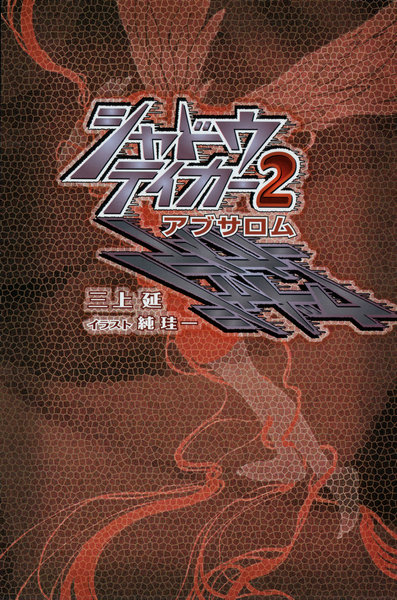
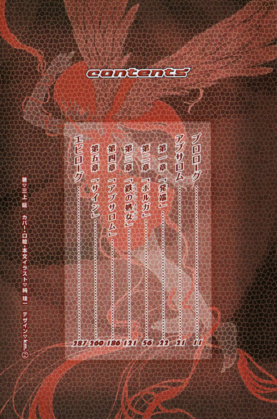
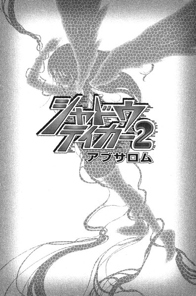
プロローグ
アブサロム
第一章「発端」
第二章「ボルガ」
第三章「鉄の処女」
第四章「アブサロム」
第五章「サイン」
エピローグ
プロローグ
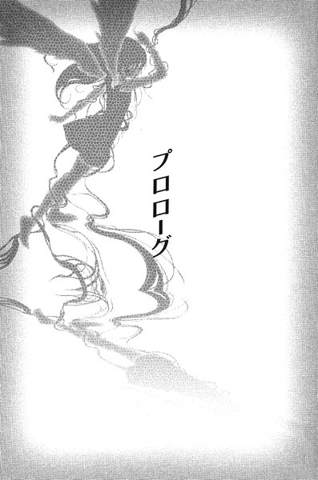
牧師が息子の部屋に無断で入ったのはその日が初めてだった。部屋に入って最初にしたことは、窓の外を確認することだった。
この部屋は教会の二階にあり、出窓からは隣の家を見下ろすことができる。彼の息子は隣家の庭にうずくまって草むしりをしていた。白いＴシャツを着た大きな背中が、真夏の太陽のもとで奇妙に光っていた。息子は今年で十五歳になるが、すでに父親の身長を追い越している。自分の家族ではなく、まるで知らない人間がそこにいるような気がした。
これから自分がしようとしていることを思うと気が重かった。隣人は草むしりの人手を欲しがっており、彼は息子を家から出すために手伝いを言いつけたのだった。
庭に面した縁側に、六、七歳の少女が腰かけているのが見える。おそらく、息子に色々と話しかけているのだろう。隣家には二人の子供がいるが、上の娘は特に息子になついている。子守りもさせられているのかもしれない。
（あの子はしばらく帰ってこない）
心の中で自分に言い聞かせながら、出窓に置きっぱなしの息子のカメラに軽く触れる。息子のほとんど唯一の趣味で、モノクロなら自分で現像まですべてこなしているはずだ。
牧師は窓から離れて、部屋の中を見回す。ベッドと机とクローゼットがあり、壁際には大きな本棚がある。どの家具も古びているのは、彼が息子に譲ったものか、引っ越していく信徒から譲られたものだからだ。彼らは親子二人だけでつましい暮らしをしていた。
家具の他に飾りらしいものはほとんどない。窓のそばに牧師の知らない映画のポスターが貼られているが、それがなければ人の住んでいる部屋には見えなかっただろう。塵一つなく完璧に片づいていた。自分の子供の部屋とは思えないよそよそしさだった。
（あの子はなにかを隠している）
そう思いながら、牧師は額に噴きだす汗をぬぐった──彼がここに忍びこんだのは、その隠しているはずのものを探し出すためだった。
幼い頃から、息子は驚くほどの「いい子」だった。無口でおとなしいが学校の成績はよく、親の手を煩わせたことはただの一度もない。神への信仰にはあまり興味はないようだが、教会の雑事もいやがらずに手伝ってくれる。自分が子供の頃を考えると少し薄気味悪いほどで、ほとんど子供らしいところがなかった。
中学に上がる頃になって気づいたが、息子には友達らしい友達がいなかった。人当たりは柔らかいし、学校のクラスでも誰かと仲が悪いというわけではない。誘われれば時々は出かけていく。しかし、自分から他人と交わるようなことは決してなかった。気になって問いただしてみると、息子はじっと彼の目を覗きこんだ。
「友達になれそうな相手がいないんだよ」
と、彼から目を逸らさずに答えた。
「ぼくはみんなが好きだけど、友達はいらない。自分の分身なら欲しいと思うけど」
分身、というのもよく分からなかったが、友達はいらないというきっぱりした態度は子供のものとは思えなかった。早くに母親を亡くしたために、必要以上に大人びてしまったのかもしれないと思っていた。
この数ヶ月、この近所で奇妙な出来事が起こっている。都会から離れたこの町には雑木林が多く残っているが、そこを住処にしている野良犬が次々と殺されているのだ。一様に目のまわりにひどい傷を負わされているらしい。
それだけなら気味の悪いいたずらでしかないが、彼はある日信徒から妙な話を聞いた──彼の息子が死んだ犬を抱えて、裏山に上っていくところを見たという。
息子に尋ねると「犬の死体を見つけたので、可哀想に思って埋めに行くところだった」と答えた。一度はその答えに満足しかけたが、ふと腐った魚のような奇妙な臭いが、息子の体からかすかに漂っていることに気づいた。そういえば、息子の部屋に足を踏み入れた時にも、何度か同じ臭いを嗅いだことがある。
その時に問いつめるべきだったのかもしれないが、なぜかどうしても口を開くことができなかった──正直に認めるまで何日もかかったが、その時彼は息子に怯えていた。息子を愛しているのは間違いない。しかし、息子は決して自分には理解できない、暗い影を抱えている気がした。
牧師はまず息子の本棚を見ていった。特別変わった本はなかったが、聖書が一番目につくところに入っている。手にとってめくると、何ヶ所か折り目がついている。
「目はからだのあかりである。だから、あなたの目が澄んでおれば、あなたの全身も明るいだろう。しかし、あなたの目が悪ければ、全身も暗いだろう」
その記述が赤いボールペンでぐるぐると囲まれていた。彼は不思議に思いながら、次の折られたページを開く。そこにも赤く囲まれた箇所があった。
「もしあなたの片目が罪を犯させるなら、それを抜き出しなさい。両眼がそろったままで地獄に投げ入れられるよりは、片目になって神の国に入る方がよい」
どちらも目にまつわる記述だった──そういえば、と牧師は思う。他人と話す時に、息子は顔を近づけて他人の目をじっと見る癖があった。近視のせいだろうと思っていたが、まるで目そのものに興味があるような、奇妙な印象を受けたことがある。
彼は聖書を元の棚に収めて、重たげな木の机を調べ始めた。一つだけ鍵のかかった引き出しがある。牧師はポケットから小さな鍵を出して、鍵穴に差しこんだ。
この机はもともと牧師が若い頃に使っていたものだった。息子に与えた時に鍵も一緒に渡したのだが、合鍵は彼の手に残ったままだった──もっとも、この部屋を調べてみようと思い立つまで、合鍵を持っていたことも忘れていた。
彼の予想に反して、引き出しの中は空っぽだった。日記の類でもあるのではないかと期待していた。彼自身は日記をつけるのを習慣にしている。息子の内面を窺い知るための手がかりになるかもしれないと思っていたのだ。
元通りに引き出しを閉めようとして、ふと彼は錆びた鍵がぽつんと入っていることに気づいた。引き出しの鍵ではない。金庫かロッカーの鍵のようだった。
ふと、頭にひらめくものがある。彼は大またにクローゼットに近づいて扉を開けた。そして、ぶら下がった冬のコートや学生服を狂ったようにかき分けて奥を覗きこむ──やはりここだった。古びた金庫が置いてある。どこかに捨てられていたものに違いないが、いつからここにあるのか見当もつかなかった。息子は長身で力も強いが、このようなものを自分に知られぬよう、わざわざ自室に運びこむのは大変だったはずだ。
彼は慎重なしぐさで金庫の鍵を開ける。固い扉がかすかな軋みとともに開いた。中に入っていたのは茶色い瓶と、白い封筒だった。瓶の中身は写真を現像するための薬品のようにも見えるが、わざわざ金庫の中に隠しているのも不自然だ。彼はまず瓶から手に取った。クローゼットの中ではなにが入っているのかよく見えない。
彼は窓辺に瓶を抱えていき、カーテン越しに射しこむ太陽に透かして見る。ガラスに色が入っているのではなく、中の液体が茶色く濁っているらしい。それでも団子ほどの大きさの白い球体がいくつも沈んでいるのが見える。瓶を振ってみると、彼の顔の一番そばにあった球体がぐるりと向きを変えた。球体の一部は黒く盛り上がっていて、白い部分には赤いひび割れのような血管が──。
眼球だった。
「うっ」
彼はもう少しで瓶を落とすところだった。出窓のカメラの脇に乱暴に瓶を置いて、一歩後ずさる。喉の奥から吐き気の塊がせりあがってきた。
このあたりで見つかった野良犬の死体は、すべて目を傷つけられていたという。おそらくただの傷ではなく、目を抉られていたのだろう。そして、この瓶の中身が犬たちの目なのだ。
（どうしてあの子はこんなことを）
彼は荒い息をしながら、眼球の詰まった瓶をにらみつけていた。一体、これからどうすればいいのか。もし許されるなら、何も見なかったことにして今すぐ部屋を出ていきたかった。
瓶の隣に置かれたカメラのレンズが、もう一つの目のように光っていた。
突然、彼は電撃に打たれたように体を震わせた。どうして日の当たる窓辺にわざわざカメラを置いているのだろう？息子はここからなにかを撮っていたということではないのか？彼は金庫に駆け寄り、もう一つ残っている白い封筒を取り出して乱暴に中を開いた。
中からはモノクロの写真が何枚も出てきた。彼は小刻みに震える手で写真をめくっていった。
全ての写真に隣家の小学生の娘がアップで映っていた。冬のコートを着ている写真もあれば、夏らしくＴシャツ姿の写真もある。彼女が息子の被写体なのだ。
どの写真を見ても、少女の両目のあたりは赤いボールペンでぐるぐると塗りつぶされていた。まるで血の涙を流しているようだった。
牧師は床に写真を投げ捨てて、出窓に飛びついた──隣家の庭では、さっきと同じように息子が背を向けてうずくまっている。ほっと息をつきかけた時、縁側に少女の姿がないことに気づいた。
どくんと心臓が高鳴った。息子の体のかげから、少女の細い腕が見える。その腕は力なく芝生の上に投げ出されていた。
どこをどう通って外へ出たのか牧師は憶えていない。気がつくと彼は裸足のまま隣家の庭の芝生を踏んでいた。草むしりはすっかり終わっているらしい。縁側から見える居間には誰もいない。隣家の主婦は下の子供を連れて、買い物にでも出かけたに違いなかった。小学生の娘と、彼の息子だけを残して。
息子はフェンスのすぐそばの芝生で、少女の体に馬乗りになっていた。その両手が少女の首にかかっている。彼は二人に駆け寄り、渾身の力で息子を突き飛ばした。息子の背中がフェンスに激突する。
少女の体を抱き上げて、息を確かめる。かすかに胸が上下していた。
「なにをやってるんだ」
少女の体を抱いたまま、牧師は息子に言った。彼の声はかさかさに乾いていた。フェンスをつかんで息子はゆっくり立ち上がり、落ちかけたメガネをかけ直した。泣くか謝るか逃げ出すか──しかし、息子はただにっこり笑っていた。
「その子、すごく綺麗な目をしているんだよ」
「え？」
「だから、もらおうと思ったんだ。死んだ後で」
彼は確信した──この子はまともな人間ではない。狂っている。俺はなにも気づかないまま、悪魔と暮らしていたようなものだ。
「この子の目の中に、ぼくの分身が映ってるんだ」
この子はなにを考えているのだろう、と牧師は思った。これからどうすればいいのだろう。自分はこの子になにをしてやれるのだろう。
不意に目頭が熱くなる。彼にはなにも分からなかった。一体、なんのために神に仕える道を選んだのか。呆れるほど無力だった。
牧師にはっきり分かっているのは自分の気持ちだけだった──。
俺はそれでもこの息子を愛している。怪物のようなこの息子を愛している。
自分を殺そうとしたわが子を愛し続けたダビデ王のように。
アブサロム
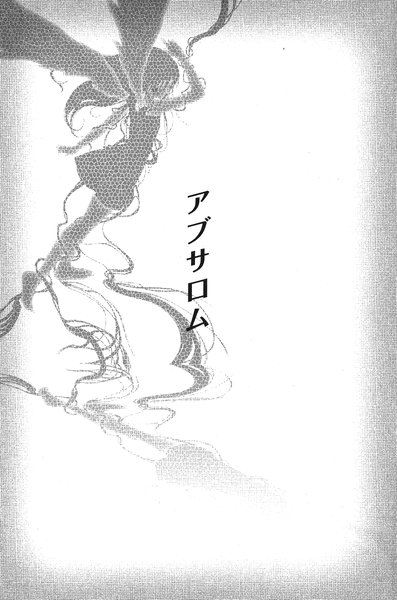
第一章「発端」
１
太陽はすっかり傾いている。デパートの屋上に人影はまばらだった。隅の方に寂れたペットショップと自動販売機があるだけで、一日を通じて訪れる客はほとんどいない。
フェンスのそばに制服を着た少女が立っている。表情はいささか乏しいが、かわいらしく整った顔立ちである。
彼女は黒目がちの瞳をフェンス越しの足元へと向けている。このデパートがこのあたりで一番高い建物で、加賀見駅周辺を見渡すことができる。駅の出口から現れる人々は皆夏の装いだった。季節はもう七月になっていた。
「......いない？」
彼女──雛咲葉は呟く。誰かに問いかけるような口調だったが、他には誰もいない。コンクリートの上に、黒く長い影が伸びているだけだった。
先月から、彼女の中には何か得体の知れないものが巣食っている。名前を持たないこの「生物」は、便宜上「カゲヌシ」と呼ばれている。人間に取りついたカゲヌシたちはその宿主と契約を結ぶ。「脆き者」と呼ばれる宿主は、カゲヌシに名を与え、カゲヌシはその人間の秘めた欲求と結びついて「ねがい」をかなえる。
それと同時に、この怪物たちは人間を捕食する。それを養分として成長するのだが、彼女に巣食っている怪物は例外だった。他のカゲヌシを捕食する性質を持っている。
葉がこのカゲヌシ──双頭の黒い犬に与えた名前は「黒の彼方」だった。
（やっぱり、分からないんだ）
彼女は唇をかんだ。彼女の中にいるこのカゲヌシは、同族に比べて五感が著しく不完全だった。カゲヌシは独特の「気配」を発しており、本来は互いにその位置を察知できるらしい。現に先月出会ったカゲヌシ──「ヒトリムシ」は葉たちの存在に気づいていた。
しかし、「黒の彼方」の感知能力は、ほとんど偶然にしか働かない。こちらからカゲヌシを探すのは難しかった。
「......飯倉先輩」
と、葉は呟く。ヒトリムシがとりついていたのは、部活の先輩の飯倉志乃だった。葉が気づくまでにヒトリムシはすでに三人の人間を殺していた。ヒトリムシを倒すことはできたが、志乃は自殺してしまった。もう少し早く気づくことができれば、一人も犠牲者を出さずに済んだかもしれない。
他にもカゲヌシにとりつかれた人間がどこかにいるはずだった。「黒の彼方」に餌を与えることは、他の人間をカゲヌシから解放することに繋がる──そう思っていたのだが。
（帰らないと）
これ以上、ここから見ていても仕方がない。彼女はフェンスから離れようとして、ふと立ち止まった。
「......あ」
ぞくりと奇妙な戦慄が全身を駆け抜ける。自分の体が空っぽの器になってしまったような、痛みにも似た強い飢餓感だった。彼女はしっかりと目を閉じる。
この一週間ほど、彼女は定期的に襲ってくるこの苦痛に悩まされていた。これがなんなのかは彼女もよく知っている──「黒の彼方」が餌を欲しているのだ。
胸元を押さえたまま、荒い呼吸を繰り返す。少し顔が赤くなっているかもしれない。やがて、その衝動はまるで波が引くように消えていった。ほっとしかけた時、不意に頭の中で声が聞こえた。
『この町にいては見つかりませんよ』
彼女は思わず体を震わせる。確かに何度かあてもなく他のカゲヌシを探しに出かけることはあったが、必ずここに戻ってきていた。彼女には家族はいないが、一人でこの土地を離れるつもりはない──幼馴染の裕生と、そう約束しているからだ。
『周囲の人間を危険にさらすだけです』
一瞬、葉はかっとした。この怪物は以前にも「餌を見つけなければ周囲の人間を殺す」と彼女を脅したことがある。
「......わたしが呼ばなければ、出てこられないくせに」
カゲヌシは人間との「契約」に縛られている。人間はカゲヌシに名を与え、カゲヌシはその人間の「ねがい」をかなえる。もし彼女が名を呼ばなければ、この怪物を外に出さずにおくこともできるかもしれない──もっとも、「発作」にどこまで耐えられるのか分からなかったが。
『わたしはあなたです。名前を呼ばなくとも、いつもそばにいます』
平板な声が彼女に語りかける。
『それに放っておいても、わたしたちは少しずつ混ざり合っています。いずれ、あなたがわたしを呼ぶ必要もなくなります。わたしたちが完全に一つになれば』
「......黙って」
それ以上は聞きたくなかった。葉にもおぼろげながら分かりかけていた──この「黒の彼方」の当面の目的は、宿主である葉の意識を完全に乗っ取ることなのだ。
葉は足を引きずるようにして、ゆっくりとエレベーターに向かって歩き出した。
２
元気ないな、と藤牧裕生は思った。
加賀見団地にある藤牧家の居間で、裕生は葉と向かい合って食事をしている。二人の前には冷やし中華の入った皿がある。裕生はもうほとんど食べ終わっていたが、葉の皿にはまだ半分近く残っていた。
「今日、暑いね」
裕生はＴシャツの胸元をばさばさと広げる。
「そうですね」
葉はしばらく経ってから、重たげに口を開いた。ロングスカートの上に着ているのは、重ね着したキャミソールだけなのだが、それでも暑いらしい。
「クーラーつける？」
彼女はこくんと頷いた。裕生は立ち上がって窓を閉め、古いクーラーのスイッチを入れた。
「ひょっとして、味変だった？」
と、裕生は尋ねる。今日、帰ってきてから葉の態度が少しおかしい。ずっとなにか言いたげな顔をしているのだが、そのくせ、なにかあったの、と聞いても答えなかった。
「......そんなことないです。ごちそうさまでした」
（気になるなあ）
と、裕生は心の中で呟いた。はっきり言ってくれればいいのにと思うのだが、葉は頑固なところがある。あまり問いつめると自分の部屋に帰ってしまう気がした。
葉は裕生と同じ団地の一階に一人暮らしをしている。両親は数年来、失踪したままだ。先月の「ヒトリムシ」の事件以来、彼女はずっとここで食事をとっている。自分の部屋に帰るのは着替えと寝る時ぐらいで、彼女の持ち物も徐々に増えつつあった。
ここに住んだらどうかという話もしたのだが、彼女はそうしたいともしたくないとも言わなかった。どちらにせよ、葉の親戚にも話を通してからの方がいいだろう、ということになった。
「そろそろ片づけようか」
「......あの、おじさんは」
あ、と裕生は思った。おじさん、というのは裕生の父の藤牧吾郎のことである。
「きっとどこかに寄り道してるんだよ」
裕生には母親がいない。兄の雄一は都心の大学に行くために家を出ているので、父親──藤牧吾郎と二人で住んでいる。吾郎は都心の小さな広告会社に勤めている。東京のはずれにある上、ＪＲの接続の悪い加賀見市からは、二時間近く電車に揺られなければならない。以前は帰宅も遅く、外泊もしょっちゅうだったが、最近は一緒に夕食を食べるようになっていた。
「大丈夫なんですか？」
「大丈夫だよ。子供じゃないし......っていうか、もともと晩御飯の時間にちゃんと帰ってくる方が珍しいんだから」
「そうなんですか」
（そういえば、雛咲は知らないんだよな）
と、裕生は内心でため息をついた。吾郎は「まとも」な父親ではない。兄の雄一も変人だが、父もまた別の意味で変人だった。
洗い物を終えた裕生が居間に戻ると、葉は座卓の上で教科書とノートを広げていた。明日の予習らしい。しかし、手を止めたままでぼんやりとテレビのニュースを見ている。
裕生も彼女の向かいに腰かけてニュースを見る。先月に起こった女子中学生殺害事件の特集らしかった。
「事件発生から二ヶ月。犯人の足取りはいまだにつかめていませんが、新たな事実が判明しました」
と、キャスターが言う。
殺害の方法や場所は異なるものの、何年か前から同じように十代の女の子が殺される事件が起こっており、同一犯の可能性もあるということだった。
葬式の映像が流れている。左右に細い三つ編みを垂らした女の子の遺影が映し出される。そのそばには花輪と青い鳥のようなぬいぐるみが飾られていた。
被害者の両親も行方不明のままです、というナレーションがかぶさる。裕生はなんとなく葉を連想した──もし、この犯人が加賀見にやって来たとしたら、一人で暮らしている葉は格好の標的のような気がする。
「怖い事件だね」
と、裕生は言った。自分たちが頼りになるかどうかは分からないが、やはり葉はこの家に住んだ方がいい気がした。
「え......？」
葉ははっとしたように表情を変える。どうやら、ニュースに集中していたわけではなく、ずっと考えごとをしていたらしい。
「ううん。別に大したことじゃないんだけど。怖い事件だねって言っただけ」
「......」
沈黙が流れる。やっぱり、なにがあったのかちゃんと聞いた方がいいのかもしれないと裕生が思い始めた時、
「......先輩」
意を決したように葉が言った。
「なに？」
「あの......」
突然、電話が鳴った。あわてて裕生は電話台に駆け寄って、受話器を取る。
「もしもし」
『おお、裕生か』
よく響く男の声が聞こえてくる。父の吾郎だった。少し呂律が回っていないところからすると、どこかのスナックかバーで酒を飲んでいるに違いない。
「どうしたの」
『葉ちゃんはそこにいるのか？ 今何してる？』
「テレビ見てるけど。代わる？」
その言葉に、不審げに葉が振り向く。
『いや、別にそれはいい』
吾郎のまわりで、女性の話し声が聞こえる。吾郎と一緒にいるのだろう。だとすれば、どういう状況かも予想がつく。おそらく、目当ての女性を口説いている最中だろう。だとすると、次に来る言葉は、
『今、俺は新宿にいるんだが、どうも今夜は帰れないかもしれん』
「......やっぱり」
ため息まじりに裕生は言った。藤牧家が男所帯になってから、幾度となく電話で繰り返された会話だった。
昔の藤牧吾郎はきわめて謹厳な一家の主だったが、妻の美佐枝が死んで性格が一変した。妻を失った反動でそうなってしまったのか、元々備わっていたピンク色の資質が花開いたのか、そのあたりはよく分からない。ともかく、「恋人」と称する女性が方々にいるらしい。
女性にはきわめてマメだったが、子育てにはきわめていい加減だった。兄の雄一が一時期手がつけられなくなったのも、それと無縁ではないはずだ。高校に入るまでの数年間、雄一は自分の父親を呼ぶ時、「オヤジ」の上に「エロ」を欠かさずつけていた。
「わざわざ電話してくるの、珍しいね」
むしろその方が気になった。裕生が高校に上がった時点で、お前ももう大人だから、お互い適当に自己責任でやろう、と吾郎は言い出したのだった。結局、吾郎一人が一方的に適当になっていた。
『いや、俺が帰らないと、お前と葉ちゃんは二人きりだろう』
「だから？」
『学校でもならったと思うが、基本はやさしくだ。何よりも大切なのはムードだな』
「なんの話？」
『だから、押し倒したりしてはいかん。もちろんアレだ。双方合意の上なら何の問題もないのだが、その時はちゃんとひに──』
がちゃん。裕生は乱暴に受話器を置く。一気に心臓が跳ね上がった気がした。気を静めるために、その場で深呼吸をする。
（まったく父さんは）
考えてみると、裕生も兄のようにグレてもおかしくはない環境だったが、色々と腹のすえかねることはあっても、だいたい怒りの爆発は兄が担当していたので、自然と静かに後片付けをする係に落ち着くのだった。
（兄さんや父さんはなに考えてるんだろう）
と、ため息をついているうちに気がつくと高校生になっていた。それに、二人とも性格的に問題はあるが悪い人間でない──多分。
「......第一、学校で習わないって」
と、裕生は電話の前で呟く。
「なにをですか」
「なにって......うわっ」
いつのまにか葉がすぐ隣に立っていた。首をかしげながら、裕生を見上げている。
「今、わたしのこと話してました？」
「うん。父さんからで......」
そこで裕生の言葉はぴたりと止まった。さっきの父の言葉をそのまま復唱するわけには行かない。
「どうかしたんですか」
「え......大したことじゃないよ。雛咲がそこにいるのかって聞かれただけ。変な用事だよね。ははは」
葉と視線がぶつかる。近くにいると、ほんのりと甘い髪の香りが裕生の鼻をくすぐった。裕生はあわてて彼女の顔から視線をそらす。
顔を見ないようにすると、キャミソールのむきだしの細い肩がいやでも目に入る。首筋の無防備なラインが妙になまめかしい。少し胸をそらすようにしているせいか、服の上からでもなんとなくふくらみの形が分かる──思ったよりも大きかった。
「......」
裕生は葉から離れて、意味もなく窓を開けて外を眺めた。顔が赤くなっているかもしれない。
（なに考えてんだよ、父さんは）
裕生にとって葉は妹のようなもので、そういう風に思ったことはない。もちろん葉が女の子として魅力に欠けると思っているわけではなく、むしろそれは逆なのだが──。
混乱してきた裕生は考えるのをやめた。とにかくなにか話さなければ。ふと、電話がかかってくる前の葉との会話を思い出した。
「そういえば、さっきなんか言いかけてなかった？」
裕生が振り向いて言うと、葉はためらいがちに口を開いた。
「わたし、今晩ここに泊まっていいですか」
「............は？」
裕生の全身が硬直した。
３
裕生は落ち着きなく座卓のまわりを歩き回っている。
考えてみれば、一緒に住めば二人っきりになることもあるはずで、なんの不思議もないじゃないか、と心の半分は言っているのだが、もう半分はそれにしても心の準備が必要じゃないかと言っていた。
それにまだ大事なことを葉に話していない。吾郎は今夜は帰ってこないかもしれない（いや、今までの経験から言って「かもしれない」はいらない）のだ。ただ、だからといって「ここに泊まらない方がいいよ」と葉に言うのもおかしな話だ。自分が何をするか分からないと言っているようなものである。彼女におかしな真似をすることなど絶対にない。それは自信があった──少なくともあるつもりだった。
「お風呂、いただきました」
声が聞こえて、裕生は足を止めた。チェックのパジャマを着た葉が立っていた。濡れた髪を拭くためなのか、タオルを持っている。上気した肌から、さっきとは違うボディソープの香りがふわふわと漂ってきた。
子供の頃、葉は何度も藤牧家に泊まりに来ている。昔は一緒の部屋で布団を並べて寝ていたぐらいだが、なにぶん事情が違う。思わず裕生は視線をそらして斜め下を見る。畳の上にテレビのリモコンがあった。意味もなくそれをじっと眺めていると、葉が言った。
「......やっぱり帰ったほうがいいですか？」
はっと裕生は顔を上げる。
「どうして？」
「急だから、迷惑かも」
「そんなことないよ」
「......ほんとですか」
そこで初めて、裕生は動揺したことを反省した。こんな態度を見せられれば、不安に思うに決まっている。彼は葉に笑いかけた。
「もちろんだよ......ぼくも風呂に入ってくるから」
と、言いながら裕生は部屋を出た。
四畳半には古いドレッサーが置いてある。裕生の母親が使っていたものらしい。そなえつけの椅子に座って、髪を拭いていた葉はふと手を止める。
鏡の中にあるのは、普段と同じ自分の顔。
（わたしたちは少しずつ混ざり合っています）
確かに「黒の彼方」はそう言った。普段、彼女と「黒の彼方」の意識は完全に二つに分かれていて、互いに考えを知ることはできない。カゲヌシを解放すると、両者の意識はある程度融合し、葉の側から「黒の彼方」を操ることもできるが、同時に彼女の意識を乗っ取られるおそれもある。
気がつかないうちに、自分が自分でなくなっていっているのかもしれない──今夜は一人でいるのが怖かった。ここに泊まりたい、と言ったのはそのせいだった。
「どうしたの、雛咲」
廊下から声をかけられて、葉は振り向いた。風呂から出た裕生が立っている。いつのまにか、手を止めてじっと鏡を覗きこんでいた。
「わたし、前と変わったところないですか」
「変わったところって？」
「言ってることとか、雰囲気とか」
裕生はおずおずと部屋に入ってくる。そして、葉の前に立って、座っている彼女を見る。
「どこも変わってないけど」
「ほんとですか？」
「うん」
と、裕生は頷く。それで葉の不安は少し溶けていった。裕生はカゲヌシの契約者ではない。ひょっとすると、普通の人間には分からない変化なのかもしれない。それでも、彼女が何よりも聞きたかったのは裕生の言葉だった。
「どうしてそんなこと聞くの？」
と、裕生が言った。
「......ひょっとして、あの犬に何か言われた？」
犬、というのは二人の間では「黒の彼方」のことだった。葉はデパートの屋上であったことをぽつりぽつりと話しはじめた。裕生はいちいち頷きながら聞いていたが、聞き終わると即座に言った。
「そんなの脅しだよ。自分からは出てこられないんだし」
明るい声だった。それが気休めだということはお互いに分かっている──裕生が「黒の彼方」から葉を解放する方法を考えていることは、彼女も知っていた。
（これ以上、迷惑かけたくない）
彼女は心の中で呟く。藤牧家に住むのをためらっているのは、その気持ちがあるからだ。しかし裕生がいなければ、カゲヌシにとりつかれている事実に耐えられるかどうか自信がなかった。
「一応、布団出そうか。まだちょっと早いけど」
葉は頷いた。時計を見ると、もう十一時近かった。裕生は自分の部屋から、来客用らしい布団を抱えて戻ってくる。
ふと、葉は少しだけがっかりしている自分に気づいた。その理由に思い当たって恥ずかしくなる。昔、泊まりに来た時のように、一緒の部屋で布団をくっつけて寝たかったのだ。もちろん、口に出して言えることではなかった。
「......おじさん、遅いですね」
畳の上に布団を置いている裕生の背中が、一瞬ぴくっと震えたような気がした。
「その......か、帰ってこないかもしれないって。さっきの電話で言ってた」
その意味に気づくまで、しばらく時間がかかった。葉の頬がかっと熱くなった。
（......二人きり）
葉も一緒に住めばそういう時もあると漠然と思っていたが、いくらなんでも突然すぎる。裕生はどことなくぎくしゃくした動きで、黙々と敷布団を広げ、シーツをかけている。自分がなにをしているのかよく分かっていないらしい。
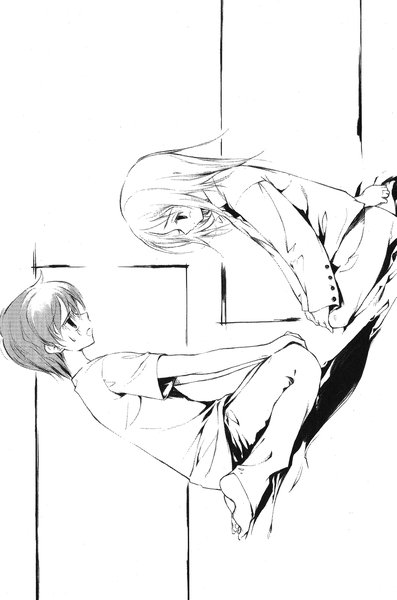
「あの、自分で敷きますから」
「そ、そうだよね。ごめん」
はっと我に返ったように、裕生が布団から離れる。気がつくと、二人は布団を挟んで向かい合って正座していた。妙な沈黙が流れる──間違いなくこの状況は「ふつつか者ですが、どうぞよろしくお願いいたします」という昔の新婚夫婦のそれである。互いにそう思っているのは分かっているし、この気まずさを解消するためにも何か言わなければ、と思っているのも分かった。
「あの......」
二人が同時に口を開いた瞬間、がちゃりと玄関のドアが開く音がした。
「うーん............明るい」
明るい？ 葉は裕生と思わず顔を見合わせる。確かに裕生の父・吾郎の声だった。続いて廊下を歩いてくる足音が聞こえ、細身の中年男が現れる。軽そうな麻のジャケットを着て、カジュアルなメガネをかけ、きれいにセットした髪──いささかうさん臭さが漂っているものの、ダンディな雰囲気をかもし出すのに成功している──はずだった。
「......お帰り」
「お帰り......なさい」
葉たちはぽかんと吾郎の顔を見上げていた。吾郎のメガネのフレームは微妙に曲がっており、両頬にくっきりと平手打ちを食らったらしいあざが残っている。
「......どうしたの、その顔」
「明るいな。明るすぎるぞ裕生」
ため息をつきながら、やれやれという風に吾郎は首を振っている。
「じっくり見たい、という気持ちは分かるが......最初は電気は消すのが気遣い」
最後の方は早口でよく聞き取れなかった。葉が首をかしげた瞬間、弾かれたように裕生は立ち上がった。何故か顔が真っ赤になっている。
「父さん！ お茶飲むよね。あっち行こうよ」
「なんだ、なんで耳を引っ張る？ 痛いじゃないか。いつからお前もそんな乱暴な奴になったんだ。俺が言っているのはとても大事な......いてっ。引っ張るのはいいがねじるのはやめろ......」
親子二人が居間へ歩いていく。ちょっと迷ってから、葉もその後を追った。
４
「帰ってこないかもしれないって言ってたじゃない」
裕生たちは座卓のまわりに座っている。
「いや、そのつもりだったんだがな。順を追って話すが」
吾郎はそう言いながら、ポケットからなにかを取り出して、葉の方へ滑らせる。どこかの店のマッチらしい。裕生が覗きこむと「喜嶋バー」と、印刷されている。
「なに、それ」
「......わたしの叔母がやっているお店です。新宿の」
複雑な表情で葉は言い、吾郎の顔を見上げる。
「そう。今日、雄一と二人で行ってきた。葉ちゃんがうちに住むかもしれないって話になってるだろう。まさかご親戚に話もしないでそうするわけにいかないと思ってな」
葉の叔母らしい人なら何度か見かけた記憶がある。挨拶ぐらいしか交わした記憶はないが、和服のよく似合う背の高い女性だったと思う。話をしに行くのは雄一の提案だろうが、吾郎にしては珍しく責任ある行動だと裕生は思った。
「......喜嶋さんっていうんだ」
「そう。喜嶋ツネコさん。いやあ、気の強い人でな。なんでもご主人をなくされてから、一人でバーを切り盛りしておられるそうだ。実に素敵な人だった。葉ちゃんにはあまり好かれていないと言っていたが」
初耳だった。裕生はちらりと葉を見る。少し困ったように俯いている。
「別に嫌いじゃないです」
そういえば、彼女の口から親戚の話が出ることはほとんどない。両親が行方不明になっても一人暮らしを続けているのは、親戚との折り合いのせいもあるのかもしれない。
「叔母さん、なんて言ってましたか？」
と、葉が尋ねた。
「それが......」
吾郎はかすかに眉根を寄せた。
「ダメだそうだ。一緒に住むなんてとんでもないと言われてしまったよ」
「え......」
「絶対に二人っきりになる夜があるはずだ。万が一自制がきかなくなったらどうするつもりだとね。その心配はないと何度も説明したんだが」
裕生は思わずどきっとした。まさに今夜はもう少しで「二人っきりになる」はずだった。
「ケダモノの巣に可愛い姪を住まわせるわけにはいかない、だそうだ」
はっはっは、と吾郎は力なく笑った。さすがに裕生はむっとする──いくらなんでも、そこまで言うのは失礼だと思った。
「......ひどいです」
と、葉が呟いた。
「うむ。葉ちゃんもそう思うか」
吾郎はタバコをくわえて、ポケットを探る。ライターを探しているらしい。ポケットの中のものをすべて座卓に出したが、結局見つからないようだった。裕生は黙って「喜嶋バー」のマッチを渡す。
「まったく、俺のストライクゾーンは二十五歳以上だとあんなに説明したのに」
ぱちり、とマッチをすって吾郎はタバコに火を点けた。
「......ちょって待って」
と、裕生は言った。
「誰のストライクゾーン？」
「だから俺だ」
「ぼくのことじゃないの」
「いや、お前のことも信用ならんと言っていたが、あれは主に俺のことだろう」
「どういうこと？」
「だから、ツネコさんには何度も俺のストライクゾーンについては説明したんだ。むしろ、ツネコさんこそ父さん的にはど真ん中ストレートだと」
吾郎は余韻に浸るような微笑みを浮かべる。裕生はいやな予感がした。
「聞いたところでは今、恋人がいるわけでもなし、ぜひ一度デートをしていただきたいと言ったんだが、それがどうも火に油を注いだらしくてな」
「父さん」
思わず頭を抱えたくなった。あなたの姪御さんをうちに住まわせようと思うんですが、という話を進めながら、どうです、今度デートしませんか、とナンパしていたらしい。
「当たり前だよ、話がおかしくなるの」
「そうか？ 最初はそこそこいい感じで話は進んでたんだが、お前に電話かけたあたりで急に雲行きがおかしくなったんだ。よく分からんのだが、なにか誤解をしたらしくてな。『息子にあんなアホなことを言う人間がこの地上のどこにいる！』と言われてしまったよ」
裕生はさっきの父との会話を思い返した──どう考えても葉の保護者に聞かせていい内容ではない。
「ここにいる、とつい答えたら、『あんたはケダモノか！』だそうだ。怒った顔もまた素敵だったな」
葉は固まったまま、座卓の一点を見つめている。彼女はさっきの電話の内容を知らない。「なんの話ですか」と、今にも聞かれるかもしれないと裕生はひやひやしていた。
「ひょっとして、その顔のあざ......」
「ああ、これか。ツネコさんに思いっきり平手打ちされてな......いや、手首のスナップも見事なもので」
吾郎はにこにこ笑っている。そんなところを誉められても、喜嶋ツネコという人は嬉しくはないだろう。
「そして、もう片方は店を追い出されてから雄一にやられた。手加減はしてくれたようだが、あの馬鹿力ではなあ」
頬をさすりながら吾郎は言った。要するにまともに進んでいた話を、吾郎一人がぶち壊しにしたのだろう。殴るのはどうかと思うが、雄一が怒る気持ちも分かる。
「まあ、親が子供を殴るよりはいいだろう。悪いのは俺だしな」
吾郎の考えは徹底している。自分の好きなことをするが、絶対に自己弁護はしない。今頃、雄一は後悔しているのではないかと裕生は思った。
「あ、そうそう。帰り際、ツネコさんからお前への手紙を託されたんだが」
「ぼくに？」
「万が一のことが起こった場合について、お前に伝えておきたいことがあるそうだ」
裕生は手紙の入っているらしい封筒を受け取った。裕生には挨拶を交わした記憶しかない。わざわざ手紙にするような用事があるのだろうか。いぶかしく思いながら裕生は中を開く──一枚の和紙が出てきた。広げてみると、
ちょんぎる
達者な毛筆で、それだけが書いてあった。
「............なにこれ」
裕生は手紙を伏せて言った。葉は相変わらず俯いたままで、手紙を見ようとはしなかった。
「『葉ちゃんに万が一のことがあればお前............をちょんぎるぞ』という脅しじゃないかと思うが」
「............なにを？」
吾郎が眉をくもらせる。
「俺の口から言わせるつもりなのか？」
沈黙。裕生の背筋にさっと冷たいものが走った。
「............とにかく父さんは風呂入ってくる」
そそくさと吾郎は立ち上がる。その時、さっきから黙っていた葉が口を開いた。
「これ、どうしたんですか？」
と、吾郎に問いかける。さっき吾郎がポケットから出したものを、葉は拾い上げていた。どうやら、さっきからこれをずっと見ていたらしい。小石ほどの大きさの丸い金属の塊だった。
「ああ、それか。雄一がツネコさんの店で見せてくれたもんだよ。あいつも大学で拾ったとか言ってたが、どうも俺が間違えて持ってきたらしいな」
部屋から出て行きながら吾郎は言った。
「それがどうかしたの」
葉は答えなかった。葉の肩越しに、裕生はその丸いものを覗きこむ。暗い灰色で鈍く光っている。多分、鉄の塊だろう。完全な球体というわけではなく、一部が少し盛り上がっているし、無理に引き剥がしたようなささくれた跡も残っている。なにに使うものなのかはよく分からなかった。なにかを象ったものなのかもしれない。
「なんだろうね、これ」
やはり葉の答えは返ってこない。彼女の白い肩が小刻みに震えていた。
吾郎がテーブルにその鉄片を置いた瞬間、葉はもう少しで声を上げるところだった。彼女の頭の中でなにかがびりっと鳴った。裕生と吾郎の会話も頭に入らなくなった。
（それからカゲヌシの気配がします）
「黒の彼方」の声が聞こえた。本当のことなのか、容易に信じられない葉が黙っていると、
（本当です）
と、また声が聞こえた。しかし、その後は何を尋ねても答えは返ってこなかった。
葉はその奇妙な鉄の球体を手にとると、目を閉じて意識を集中する──しばらく時間はかかったが、再び頭の中でまた電気に触れたような刺激が走った。彼女はびくんと体を震わせる。
「雛咲、どうかしたの」
裕生が心配そうに葉の顔を覗きこんでいる。
「あの......」
そう言いかけて、彼女は口をつぐんだ。吾郎は確かに「雄一が大学で拾った」と言っていた。雄一は東桜大学に通っている。はっきり分からないが、彼の周囲にカゲヌシとの契約者がいるとしか考えられなかった。
想像したくはなかったが、ひょっとすると雄一本人が──。
顔を上げると、裕生と目が合う。確信が持てるまで、裕生や吾郎に言うわけにはいかないと思った。「黒の彼方」の言うことがどこまで本当なのかも分からない。
「わたし、今夜は帰ります」
その奇妙な鉄塊を握りしめながら、葉は立ち上がった。
５
天内茜はドアを開ける。
「ただいま」
答えはない。３ＬＤＫのマンションは静まり返っていた。ラメの入ったオレンジ色の派手なサンダルを放り出すように脱ぎ、玄関から廊下へ上がる。
明るい色のミニのワンピースから長い素足が伸びている。サンダルと同じ色の帽子を脱いで、疲れきった足を引きずるようにして、リビングの方へ歩いていく。きれいにカールした明るい色のロングヘアが額にかかる。茜は無表情のまま、少し唇を突き出してふっと息を吹きかける。
きちんとしたメイクや派手めの服のおかげで、大人っぽく見られることが多いが、先月十八歳の誕生日を迎えたばかりだった。それもそういうファッションが好きというだけではなく、その方が外を歩いていても警察に呼び止められることが少ないからだ。
このところ、学校には行っていない。クラスの友達とも全然連絡を取っていなかった。それよりもずっと大事なことがあるからだ。
リビングの手前にはキッチンがある。
（ママのキッチン）
彼女は心の中で呟き、リビングへのガラス戸を開ける。
（パパのリビング）
ソファのそばのサイドボードに、ファックスつきの電話が置かれている。着信を示す赤いランプが点滅していた。トレイの上に一枚の用紙が置かれている。彼女は紙を手にとってそれを見て──しばらくの間、身じろぎもせずに立っていた。
それから、紙を手にしたままのろのろと向きを変え、再び廊下へ出る。そして、一枚のドアの前に立ち止まる。ノブを握りしめた手が小刻みに震えていた。そして、ゆっくりとドアを開ける。
小さな洋間だった。ベッドと机とクローゼットがある。出窓にはふくろうのような形をした青い鳥のぬいぐるみが並んでいる。
（小夜の部屋）
彼女は声に出さずに呟く。彼女の妹の部屋だった。茜は目を閉じて、深く息を吸う。ほんの二ヶ月前も、こうしてドアを開けてフローリングを見下ろしていた。
床の上には、白いテープで描かれた人型が残っていた。
フローリングにはまだかすかに血がこびりついている。
（小夜の死んだ部屋）
茜は両手で顔を覆う。彼女の口から嗚咽がもれた。妹はまだ中学三年だというのに、助けられなかった。考えられないようなひどいことをされて死んでいった。
（ママの死んだキッチン、パパの死んだリビング）
泣きつづけている彼女の足元には、さっきリビングから持ってきたファックスが落ちている。そこには左手で書いたような太い文字がのたうっていた。
「お前の家族を皆殺しにした者は、東桜大学にいる」
そして、その後に三角形を二つ組み合わせたマークが描かれていた。
そのマークの意味は分からない。しかし、彼女には確信があった──これは犯人から来たメッセージだ。家族が「皆殺し」にされたことを知っているのは、彼女と犯人だけだ。
「......殺してやる」
こわばった指と指の間から、低い彼女の声が洩れる。
「ボルガ」
茜が呼びかけると、足元の影が突然濃くなった。一陣の風とともに、一羽の大きな鳥が影の中から飛び出して彼女の背中に留まる。
それは大きく翼を広げる。彼女自身の背中に黒い翼が生えたようだった。
「行くよ、ボルガ」
ボルガ、と呼ばれた鳥はその言葉に答えるように、かすかに翼を震わせる。もはや自分がただの人間ではないことを、茜は自分でも分かっていた。彼女は常にこの怪物とともにある。
そして家族が殺されて以来、彼女にとって何よりも大切なこと──彼女のねがい。
それは復讐だった。
６
夜が明けていた。団地のドアが開いて、葉が姿を見せる。ブラウスとロングスカートを身に着けて、お気に入りのトートバッグを下げている。平日だったが、学校に行くつもりはなかった。
結局、昨日の晩は自分の部屋に戻った。泊まるどころではなかったし、そんなことをすれば家を出るところを裕生に気づかれてしまう。
腕時計を見ると、まだ七時前だった。まだ裕生は寝ているはずだ。朝食の準備を終えて呼びに来てくれても、自分はいないと思うと少し胸が痛んだ。
（行ってきます）
と、彼女は心の中で呟いた。雄一の周りでなにが起こっているのか、それを確かめに行くつもりだった。
「やっぱり」
階段から急に声をかけられて、葉は飛び上がりそうになった。真ん中あたりの段に裕生が腰かけていた。ジーンズとＴシャツ姿で、傍らにはバックパックが置いてある。すっかり出かける準備をして、そこで待っていたらしい。
「兄さんに会いに行くんだろ」
「......どうして分かったんですか」
一言も話さなかったはずなのに。
「あの丸い球、雛咲が持ってっただろ。だからなんかあったのはすぐに分かった。それに、父さんにどこで手に入れたのか聞いてたし。それで、後から思ったんだ。『黒の彼方』になにか言われたんじゃないかって」
「......」
「もう少し、信用してくれてもいいと思うけど」
穏やかな声だったが、かすかに不満げな響きがある。
「信用してないわけじゃなくて」
そうじゃなくて、と言いかけて、葉はふと気づいた。裕生に言えなかったのは、確信が持てなかったからだけではない。裕生には安全なところにいて欲しいという気持ちがあるからだった。自分のことで、迷惑をかけたくなかった。
「雛咲」
と、裕生は言った。真剣な表情だった。
「ぼくももう飯倉先輩みたいな人を出したくないんだ」
葉はなにも言えなくなった──それは彼女と同じ思いだったからだ。自分と同じように、彼もずっと自分を責めていたに違いない。
「雛咲を一人で危ない目には遭わせたくない。一緒に行く」
と、言いながら裕生は立ち上がった。彼女は黙って俯いた。本当は涙が出るほど嬉しかった。
「行こう」
裕生は彼女を促した。二人は団地を出て、駅に向かって歩き出した。
第二章「ボルガ」
１
「失礼します」
教授室に入った瞬間、玉置梨奈は自分の顔が不機嫌になっていくのが分かった。
（よりによってこいつか......）
東桜大学の助教授以上の職員はそれぞれ専用の個室を持っている。社会学部の丸橋教授の部屋は、去年新しく建てられた教授棟の三階にあった。
ドアのすぐ近くに応接セットがあり、そこでテーブルの上に足を投げ出して、タバコを吹かしている若い男がいる。
梨奈は自分の方へ漂ってくる紫煙を軽く払う。挨拶しようかどうしようか迷っていると、
「あ、どーも」
男はぴしっと手を挙げる。派手なシャツに金髪とピアスとサングラス。どう見ても一昔前のヤクザだった──しかし、れっきとした学生である。世間では東桜大学といえば良家子女の集まるカソリック系の「エリート校」ということになっているが、これほど学風にそぐわない学生を彼女は他に知らない。
「丸橋先生は？」
「師匠はメシ買いに行きましたよ。俺ァ午後は講義ないんスけど、誰か来るまで留守番しててくれって言われたんスよ」
師匠ってなに、と心の中で梨奈は思う。彼女は丸橋ゼミの四年生で、就職活動用のグレーのスーツを着ている。午後から会社説明会に行く予定だった。
「あ、そうだ。タマキリさんが来たら、レポート受け取っとくようにって」
「あたしの苗字は玉置。いつになったら憶えんの」
フルネームは「タマキリナ」だから、一文字はみ出しただけなのだが、その呼び方だけは異様に腹が立つ。なんとなく下品な響きのせいかもしれない。
「あ、すんません。人の名前憶えんのが苦手で」
にかっと歯を見せて男──藤牧雄一は笑った。四年生たちの間では、「丸橋組の鉄砲玉」と陰で言われている。まだ二年生であり、上級生のゼミに参加したところで単位など取れないのだが、「単位はいいっスから、見学だけでもヨロシク」と頼みに来たのだった。ゆくゆくは研究者になるんだと公言していて、実際見た目に反してかなり優秀な学生らしい。
丸橋教授はこの学生を気に入っており、自分の手伝いをさせながら個人的に課題を与えている。四年生のゼミにも時々参加しているのだが、見た目に迫力がある上、ヤンキー丸出しの口調で妙に鋭い指摘をするので、他の学生からは恐れられている。
「んじゃ、レポートいただけますかね」
タバコを灰皿に押しつけて、手を出した雄一に、梨奈はしぶしぶ手渡す。
「参考にしたいんで、ちょっと見ていっスか？」
と、言いつつ答えを待たずに、レポート用紙をめくり始める。ヤクザに追いこみをかけられる町工場の社長の気持ちが、今の梨奈には分かる気がした。その場で教授に読まれるよりも嫌な気分だ。
「タマキリさん、これ、ヤバくないスか」
文章を目で追いながら雄一は言う。もう訂正する元気もなかった。
「......なにが？」
「つーか、これから社会調査やるんスよね？標本調査って書いてあるけど、標本の抽出方法が書かれてねえし......このテーマだとケース・スタディかな？調査方法ぐらいちゃんと書いとかねえと、師匠、納得しねーかも」
「......」
雄一の指摘はほとんど梨奈には理解できなかった。彼女は単位なんか取れればいいという考えで、決して真面目な学生ではない。就職活動にかこつけてゼミもしょっちゅうサボっている。今日提出したレポートは、卒業論文のテーマと内容の報告だった。他の学生はとっくに提出しているが、梨奈だけは遅れていた。
「うーん。これじゃ、なんか今日の午前中にやっつけましたって思われっかもなー」
梨奈はむっとした。正しい指摘が人を怒らせることもある。本当に今日の午前中、大学の図書館で適当に書き上げたものだった。
「余計なお世話でしょ。いいから渡しといてよ」
「でもいいんスか？ こんなん提出して。あんま師匠怒らせると、タマキリさんが」
「あたしは玉置梨奈！ 変なところで切らないでよ！」
「すんません」
雄一は謝ったが、梨奈の怒りはまだ収まらなかった。
「だいたいあんたね、口の利き方とかすっごい失礼だし。あんたの親、一体どういう教育」
「俺の親がどうかしましたか」
雄一のドスのきいた声がびしっと耳を叩き、梨奈は口をつぐんだ。今までとはまるで顔つきが違う。表情のない目に梨奈は怯えた。
それでも残った怒りをかき集めて、梨奈は吐き捨てるように言う。
「......とにかく名前ぐらい憶えなさいよ！」
そして、ほとんど逃げるようにドアから出て行った。
２
玉置梨奈が出て行ってから、雄一はため息をついた。ソファから立ち上がって窓の外を眺めた。
午前の講義が終わって、学生たちが大勢歩いている。彼のいる教授棟からは大学の正門が見える。数人の職員が集まって、門柱を指差しながらなにか相談しているようだ。雄一は裏門から入ってきたので見ていないが、なにかあったのかもしれない。
はた目からは分かりにくかったが、雄一は昨日の晩から落ち込んでいた。「親」という言葉にも過剰に反応してしまった──悪いことをした。
雄一はちらりと自分の右手を見下ろす。昨日父親を殴ってしまった手だった。確かに吾郎のせいで葉の話はできなくなってしまったが、だからといって無抵抗の人間を殴っていい理由にはならない。吾郎にも悪気があったわけではないし、そもそも連れて行った自分の読みが甘かった気がする。
（今度は俺だけであの店に行ってみっか）
と、彼が思いかけた時、携帯の着メロが鳴った。誰からかかってきたのか、確かめもせずに手探りで携帯をポケットから出して、
「あい」
と、力のない声で答える。
『......こんにちは』
涼しげな女性の声が聞こえたとたん、びしっと雄一の背中が伸びた。
「おー。西尾か」
電話の相手は西尾夕紀──雄一の高校時代の後輩だった。
「どした？」
『わたし、午後から休講になっちゃったんですけど、一緒にお昼食べませんか』
今までの憂鬱がどこかに吹き飛んだ気がした。夕紀は東桜大学からさほど離れていない女子大に通っているのだが、先月から二人は付き合っていた。授業がない時は必ずと言っていいほど、連絡を取り合ってデートしている。
「別に構わねーよ。俺も午後は授業ねえから」
『よかった。ほんとはもう駅まで来てるんです』
東桜大学は新宿からＪＲで一駅のところにある。すぐに行く、と言いかけて、雄一は自分が「師匠」から留守番を言いつかっていることを思い出した。
「あー、でも、ちょっとまだ出られねんだよ。すぐに行けると思うんだけど」
雄一は窓の外を見ながら考える。
「じゃあ、こないだ行った喫茶店あんだろ。駅のそばの。あそこで待っててくれ」
『分かりました。じゃあ、後で』
電話が切れる。ほとんど同時にドアが開いて、きちんとスーツを着込んだ白髪の初老の男が顔を出した。手にぶら下げている弁当屋の袋が不似合いだった。
「お、師匠。お帰んなさい」
雄一は立ち上がる。「師匠」という珍奇な呼び名にも気に留めた様子もなく、男──丸橋教授は穏やかに笑顔を返した。
「留守番ありがとう。悪かったね。休講なのに足止めして」
温厚な紳士然とした丸橋と、雄一の組み合わせはいかにも奇妙だったが、二人はあまり気にしていない。
「いや、いいッスよ。あ、これさっきタマキ......さんから」
雄一は梨奈から預かったレポートを渡す。
「ありがとう......そういえば、君がまとめた加賀見市の『カゲヌシ』伝説のレポートね」
そう言いながら、丸橋はぽんぽんと雄一の肩を叩いた。
「いやあ、よく短い期間であそこまで集めたねえ。理論的にはちょっと問題あるけど、フィールドワークとしては努力賞かな」
にやっと雄一は笑った。先月、雄一は「影を乗っ取って、人間を食ってしまう怪物」をめぐる都市伝説を調査するために実家のある加賀見市に戻っていた。全国に広まっているが、関東では主に「カゲヌシ」と呼ばれている。雄一たちにとっては、「カゲヌシ」は興味深い「噂話」でしかない。
「あのレポート、どこらへんがまずかったっスかね」
「『カゲヌシ』の語源を『影踏み』の地方方言としていたけど、必ずしもそうとは限らないんじゃないかな。その方言が使われていない地域でも『カゲヌシ』という呼び名が使われているようだからね。もっとも、この都市伝説そのものが加賀見から派生した可能性もなくはないが......」
神妙な顔つきで雄一は頷く。丸橋は彼にとって文字通り信頼できる「師匠」だった。
「そういえば、『黄色いレインコート』の噂は聞かなかったかね？」
「なんスか、それ」
「他県での『カゲヌシ』伝説の調査結果に出てきたんだけどね、比較的低年齢の子供たちの間で広まっているらしいんだけど、『カゲヌシ』の居場所を教えてくれる者の噂なんだ。いつも黄色いレインコートを着ていて、顔は絶対に分からないとか」
雄一は首をひねる。彼が調査対象にしていたのは主に中学生や高校生だった。小学生にはほとんど聞いていない。
「......いや、聞いてないっスね。今度調べときますよ。どうせ夏休みにまた加賀見に戻るんで」
ちらりと雄一は時計を見る。あまり夕紀を待たせたくなかった。
「そんじゃ、失礼します」
と、急いで廊下に出る。もう頭の中にあるのは彼女のことだけだった。今すぐ行く、と電話するつもりだったが、携帯の電源が入らなかった。どうやらバッテリーが切れているらしい。そういえばこのところ充電するのを忘れていた。
（まあ、いいか）
待ち合わせ場所は決まっている。雄一はエレベーターに向かって歩いていった。
３
「......着いたね」
と、裕生は言った。東桜大学の校門の前に裕生と葉は立っている。レンガ造りの門柱の上に、古い鉄のアーチがかかっている。アーチのちょうど真ん中あたりに、校章が見えた。今度こそ目的地についたと裕生は思った。
「はい」
葉はほとんど表情を変えていないが、顔色が少し悪い。さんざん道に迷ったせいで、疲れているに違いない。もともと、裕生も葉もめったに都心の方へは来ることはない。東桜大学へ来るのもこれが初めてだった。
駅のすぐそばという話は知っていたのだが、カソリック系の大学であり、教会が併設されていることまでは知らなかった。運悪く駅から見える位置にあるのが、十字架のついた高い鐘楼で（「あれじゃないかな」「......あれは教会です」）、反対方向へ行ってしまい、近辺をぐるぐる回るはめになった。
もう十二時を少し回っている。午前の講義を終えた学生たちが続々と校門から出てくる。待ち合わせの場所にも使われているらしく、校門の近くの歩道にも人の姿がある。裕生たちは人ごみを避けて、案内板の前に立っていた。
「兄さんに電話してみようか」
昼休みだから電話をしても大丈夫だろう。裕生は携帯を出して、雄一にかける──しかし、繋がらなかった。
後でかけてみよう、と思って携帯を閉じた時、葉が自分の隣にいないことに気づいた。
「あれ？」
辺りを見回すと、いつのまにか白いシャツを着た背の高い学生と話している。金色に近い薄い色の髪と白い肌が奇妙に中性的な印象を与える。細く吊り上がった目元を除けば、美男子と言ってもさしつかえなかった。
「こんにちは」
裕生が近づいていくと彼の声が聞こえた。
「......」
「高校生かな？」
どう見てもナンパなのだが、葉はきょとんとした顔で相手を見上げているだけだった。
「雛咲、どうかした？」
少し大きな声で話しかけると、男は笑顔を浮かべながら無言で立ち去った。
「離れない方がいいよ。話しかけられるから」
「どうしてですか」
本人はまったく理解していないらしい。学生たちがちらちらと二人を見ている。葉の人目を引く容姿のせいもあるが、大学生ではない裕生たちは明らかに浮いていた。
立ち止まっているとかえって目立つ。とにかく、大学の構内に入ってしまおうとした時、裕生は門柱の片側に、何人か職員が集まって話しこんでいることに気づいた。
（どうしたんだろう）
裕生たちは彼らの背後から門柱を覗きこむ。レンガに白いスプレーで落書きをされていた。描かれているのは、二つの三角形を組み合わせたマークだった。
「これ、なんて言うんだっけ」
と、裕生は言った。とても有名なデザインだった。葉も首をかしげていたが、やがて言った。
「分かりませんけど、ユダヤ人が」
「あ、そうそう。六芒星......だっけ」
ユダヤ教を象徴するデザインとも言われていて、ナチスドイツに迫害されたユダヤ人が、このマークを胸につけさせられていたという。別に珍しい模様ではない。でも、誰がこんなところに落書きをしたのかな、と思っていると、
「んんんん────？」
鼻歌と悲鳴の中間のような声が周囲に響き渡った。案の定、人ごみをかき分けるようにして現れたのは藤牧雄一だった。
「裕生と葉か？」
百メートル先からでも分かりそうな派手なシャツに、裕生は眩暈がした。裕生たち以上に、雄一は周囲の学生から浮いている。
「なにやってんだ、お前ら。学校サボってデートかよ」
「そんなこと」
ふと、裕生は兄に会った時にどう説明するのか、全然考えていなかったことに気づいた。ポケットには例の鉄球が入っているが、そのことを聞くためだけにわざわざ来た、と言うのではあまりにも不自然だった。
「うん......まあ、そう......かな。せっかく近くまで来たから、兄さんの顔見ていこうって話になって」
葉がはっと裕生の顔を見る。
「ふ────ん」
あまり長話をするとボロが出る。裕生はすかさずポケットを探って、例の鉄球を差し出した。
「そういえばこれ、兄さんの？」
雄一は首をかしげる。
「あ、なんでお前が持ってんだ？」
「父さんが間違えて持って帰ってきたんだよ。せっかく近くまで来たから、届けようと思って」
父さん、と言ったとたんに雄一の表情がくもった。
「......そうか。昨日なくしたから、どこやったかって思ってたんだ。まあ、俺も拾ったんだけどな」
裕生は頷いた。そこまでは父から聞いて知っている。知りたいのはそこから先のことだった。特に雄一がカゲヌシの危険にさらされていないかどうかだった。裕生は横目で葉の方を見る。意識を集中するように目を閉じている。カゲヌシの気配がするかどうか、必死で感じ取ろうとしているらしい。
「拾ったってどこで？」
「いや。あそこの屋上」
雄一は敷地の奥の方に見える、コンクリートの校舎を指差した。
「休講ん時にあそこでボーっとしてたら、落ちてたんだよな。なんに使うんだろうな、それ」
その時、葉がぎゅっと雄一の手を握った。おそらく、カゲヌシの気配を感じ取ろうとしているに違いない。
「なにやってんだ、葉。俺の手になんかついてるか？」
葉は雄一の大きな手をつかんだまま固まっている。
「昨日、父さんとケンカしたって言うからさ。心配してるんだよ」
自分でもよく分からないフォローだと思ったが、雄一の表情がなぜか変わった。
「......お前ら、俺に会いに来たんだろ」
裕生は一瞬ぎくりとした。バレたのかな、と思ったが、
「俺と親父のことは心配すんな。っていうか、わざわざ学校サボって様子見に来るようなこっちゃねえだろ。俺らで話しゃ済むんだしよ」
どうやら、雄一を心配して会いに来たと思っているらしい。確かに心配はしているのだが、全く別の用事だった。
「親父、俺のことなんか言ってたか？」
声が微妙に暗い。つい手を出してしまったことを後悔しているに違いない。
「笑ってたよ。親が子供を殴るよりいいって」
「......そうか。お前らには悪いことしたな。話がこじれちまって」
その時、葉がぱっと手を離した。裕生の顔をちらりと見上げる──大丈夫です、という風にかすかに頷いていた。雄一にカゲヌシはとりついていないのだ。
「あ、そうだ。俺これから西尾とメシ食うけどよ、お前らも来るか」
裕生と葉は同時に首を横に振った。この大学のどこかにカゲヌシとの契約者がいるのは間違いない。そんなことをしている場合ではなかった。雄一は意味ありげに笑った。
「まー、そうだよな。お前らデートだしな」
他に答えようもなく、裕生はあいまいに頷いた。そもそも兄と夕紀の方こそ、邪魔をしてはいけない気がする。
「なんかあったら電話しろよ」
雄一は去っていった。これで振り出しに戻ったようなものだ──兄はカゲヌシとは無関係であり、この鉄球が誰のものなのかは依然として分からない。
「......屋上に行ってみようか」
とりあえず、兄が見つけた場所に行ってみた方がいい。ただ、もしカゲヌシの契約者と出会ったとしても、はっきりと葉に分かるかどうかは疑問だ。
校舎の方へ歩きかけても、葉は立ち止まったままだった。俯いてなにかを真剣に考えこんでいるらしい。
「......デート」
と、ぽつりと呟いた。
「え？」
「なんでもないです」
葉は首を振って歩き出した。どことなく嬉しそうに見えた。
４
白いシャツを着た長身の男が歩いている。無造作に伸ばした薄い色の髪が生暖かい風になびいた。男は大通りの横断歩道を渡り、駅とは反対の方へ向かった。
彼は校門の前にいた少女のことを考えている。彼が何者かはまったく気づかなかったようだった。
（まさか、こんな時に現れるとは）
もう少し待てば彼の待ち人も現れたはずだが、ひとまず立ち去るしかなかった。あの少女と校門の落書き──二重に邪魔が入ったとあれば致し方ない。しかし、彼は満面の笑みを浮かべている。話しかけた時の彼女の不思議そうな目が、頭の中に残っている。黒目がちの澄んだ瞳。自分が他人にどのように映っているか、考えてみたこともないという目だった。
あの目だけでも収穫だったかもしれない。途中で恋人らしい少年が割りこんできたおかげで、名前を聞き出すこともできなかった──しかし、また別の方法を考えればいいだけの話だ。
彼は交差点を左に折れて、人気のない通りへ入っていった。ベルギー大使館の近くに行くと、外資系のチェーンのカフェがある。このあたりでは喫茶店の数が少ないせいか、ほとんど満席だった。
注文したエスプレッソを受け取って、彼は壁に面したカウンター席に向かう。一つだけ空いている席の隣に、花柄の夏のワンピースを着た、長い髪の若い女が座っている。アップにした髪が大人っぽく見えるが、多分まだ二十歳になっていないだろう。
「隣、座ってもいいですか？」
「はい。どうぞ」
連れが来るのを待っているらしい。視線を入り口の方に走らせている。彼女は彼を拒絶しているわけでも、受け入れているわけでもない。単に関心がないのだ。しかし、彼の視線は彼女の目に吸い寄せられていた。少し茶色がかってはいるが、濡れたような美しい目だった。
少し間を置いてから、彼は話しかけた。
「待ち合わせですか？」
初めて彼女は隣にいる男を見る。彼は押し付けがましくない程度の笑顔を浮かべる。彼は自分が異性を引きつける容姿をしていることを知っている。今の笑顔はもっともその効果を発揮するもののはずだったが、相手は彼の外見にさほど心を動かされた様子はなかった。
「......そうですけど」
「じゃあ、ここに座らない方が良かったかな。その人が来たら、どきますから」
彼女の目に微妙な戸惑いが宿る。彼に対してかすかに興味を動かすのを感じ取った。
「いいえ。私たちの方が出て行きますから、大丈夫ですよ」
彼は彼女の指先を見ている。マニキュアはしていないが、きれいに手入れをしている。服も髪も異性にアピールするためのものではない。そうするのが習慣だからしている感じた。彼女には好感が持てた。
言葉のアクセントにクセがないので、出身は東京近郊。服装の印象からして、東桜ではなくどこかの女子大に通っているのではないだろうか。東桜大学に通う恋人と待ち合わせ。そんなところだろう。
難しいとは思うが、この目の美しさは捨てがたい。彼はほんのわずかに体を動かして、体を彼女の方へ寄せた。
「......え？」
西尾夕紀は思わず聞き返す。カウンターの隣に座った男が、また話しかけてきたのだった。
「珍しい目をしていますね」
「え？」
「目ですよ。目が変わってるって言われたことないですか」
「......いいえ」
と、彼女は首を振る。なにを言っているんだろう、と思った。夕紀は雄一との待ち合わせでこの店に来ている。電話で話してから十分ほど経っていた。
「『目は体のあかりである』って言うでしょう。目はその人間の象徴だから、目が澄んでいる人は、他の部分も明るい」
その言葉に夕紀は相手の顔を見た。笑みをたたえた目は奇妙に澄んでいる。ただ、どこにも焦点が合っていない気がする。
「そういう人は特別なんです。ぼくにはそれが分かる」
一瞬、宗教の勧誘かとも思ったが、少し雰囲気が違う。話の内容は妙だったか、押し付けがましい雰囲気はない。ただ、どことなく引っかかるところがあった。
「それにしても、いい天気だ。とてもよく晴れている。そう思いませんか」
「......ええ」
「少し暑すぎるぐらいですけどね」
きれいな顔をしていると彼女は思った。落ち着いた声も笑顔も人を安心させるところがある。
「東桜の学生？」
「いいえ。聖愛女子の一年です」
「ふうん。じゃあ、ここから近いですね」
それなのに彼が口を開くたびに、夕紀の背筋に不吉な悪寒が走る。なぜかすぐにこの場を離れたい衝動にかられた。以前にもこれと似たような恐怖を覚えたことがある。もちろん、この男に会うのは初めてのはずだ。
（でも、どこかで......）
「西尾」
突然、頭上から呼びかけられて、夕紀ははっと我に返った。雄一がすぐそばに立っていた。走ってきたらしく、肩で息をしている。
「あ......先輩」
「悪ィな。待たせて」
彼女は椅子ごと身を引くようにして、バッグを抱えて立ち上がる。隣に座っていた例の男が、夕紀にかすかに会釈をして見送った。
大勢の客の行きかう中を、二人は出口に向かって歩いていく。
「......知り合いか？」
と、雄一が尋ねた。
「知らない人なんですけど、ちょっと」
彼女は口ごもる。あの男の声や口調は、先月自殺した飯倉志乃を思い出させるものがあった。志乃に起こった異変を夕紀は詳しくは知らない。しかし、死の直前の彼女は普通の人間とは思えなかった──あの男からも同じ雰囲気が漂っている。
ちらっとカウンターの男を振り返る。もう、夕紀の方を見ていなかった。白いシャツを着た背中をぴんと伸ばして、コーヒーカップを口に運んでいた。
泰然とした男の様子は彼女の不安をかき立てる。しかし、夕紀はその感覚をうまく説明する自信がなかった。
「お、タマキリさん！」
その時、少し前を歩いていた雄一が大声を上げた。店に入ろうとしていたショートカットの女子学生が足を止めた。リクルートスーツ姿であるところを見ると、どうやら就職活動中の四年生らしい。
雄一の姿を見たとたんに、彼女は苦い表情を浮かべた。雄一の方は気に留めた様子もなく近づいていく。
「さっきはすいませんでした。あのレポート、渡しときましたよ」
しかし、彼女は雄一を無視して行ってしまう。彼はその背中を見送りながら軽く肩をすくめた。どうやら、かなり嫌われているらしい。
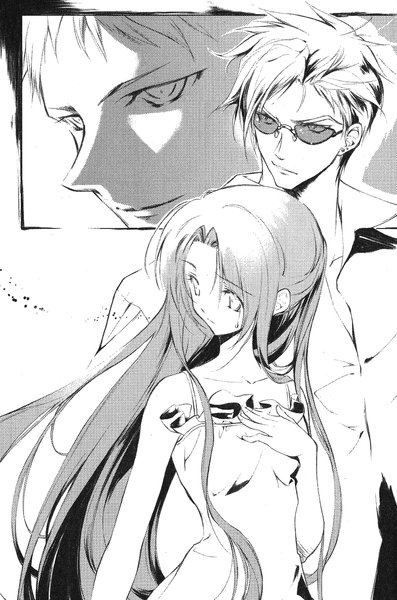
「......行きましょう」
と、夕紀は言った。彼女は自分から腕を絡めて、彼を引っ張るように外へ歩き出した。一刻も早くさっきの男から離れたかった。
玉置梨奈はレジから雄一が出て行く姿を呆然と見送っていた。髪の長いきれいな女の子と腕を組んでいる。
（なんであんな奴にあんな彼女がいるのよ）
誰がどう見ても不釣合いである。梨奈は先月、付き合っていた恋人と別れたばかりだった。幸せそうなカップルを見ると、不幸を願わずにはいられなかった。
彼女はアイスコーヒーを買って、カウンター席へ向かう。そして、唯一空いている席に腰かけた。
午後からもう一つ会社説明会に行く予定だが、気が進まなかった。
（今日はもういいかな）
と、思いながらストローを口に運んだ時、
「......玉置さん？」
よく通る声が聞こえた。隣の席にいる眼鏡をかけた男が、柔らかい笑みをたたえている。ひどく整った顔だった。しかし、彼女には見覚えがない。
「すいません、どこかで会いましたっけ」
こんないい男、会ったことがあればそうそう忘れるはずはないと思う。男は静かに首を横に振った。
「話したのは今日が初めてですよ」
「じゃ、なんであたしの名前、知ってるんですか」
「さっき、入り口のところでそう呼ばれていたでしょう。ここまで声が聞こえましたから」
一瞬納得しかけた梨奈だったが、ふと疑念を抱いた──。
「名前、間違って呼んでたと思うけど」
一瞬、男の笑みが後退しかけたが、すぐに元に戻った。
「すいません。実はあなたのことを知ってました」
「え？」
「午前中に図書館で本を借りていたでしょう。目立っていたから、気になったんです」
図書館にいたということは、この男も東桜の学生なのだろう。しかし、彼女の方は会った記憶がない。それに未だかつて梨奈は「目立つ」容姿をしていると言われたことはなかった。
「あたし、そんなに目立つかな」
「当たり前ですよ。そんなにきれいな目をしていれば」
「......目？」
さっきから男は梨奈の目を見すえたままだった。彼女も男の顔から目を逸らすことができなかった──男の目は不思議なほど澄んでいた。まるで人のものではないような。
「目は体のあかりなんですよ」
と、男が言う。
「『両方の目がそろったままで地獄に投げ入れられるよりは、片目になって神の国に入る方がよい』。そうでしょう？」
耳をくすぐるような心地よい声だった。彼女はわけも分からずに頷いていた。
５
天内茜が東桜大学の校門の前に立ったのは、葉たちがいなくなってから数分後のことだった。カールしたライトブラウンの髪をなびかせながら、決然とした表情でアーチをくぐりかけて、ふと歩みを止めた。
門柱の方からシンナーの匂いが漂ってくる。職員たちが集まって、落書きを消そうとしているらしい。白いスプレーで描かれたマークを見た途端、
「......ちょっとどいて」
彼女は職員たちをかき分けて門柱の前に立つ。腕組みをしながら、今にも消されようとしていた落書きを間近で見る。
「なにこれ。誰が書いたの？」
さも当然というように、自分が押しのけた中年の警備員に聞く。彼は娘ほどの年齢しかないであろう、若い娘の話しぶりにむっとしたようだが、いちいち注意するようなことでもないと思い直したらしい。
「さあね。今朝、気がついたらここに描いてあったんだよ」
「ふーん」
彼女は肩から下げたバッグから、一枚の紙を取り出す。どうやらファックス用紙らしい。門柱と同じマークが描かれている。彼女は文章の書かれている部分を折って、絵の部分だけを職員の顔につきつけた。
「それってこれと同じよね？」
職員が戸惑いながらああ、と頷くと、彼女は紙をしまい、校門をくぐって構内に入った。校舎前のベンチに座っている男子学生たちが、ちらちらと彼女の方を窺っている。
そういう視線をものともせずに彼女は歩いていく──しかし、突然ぴたりと足を止めた。まるで誰かに呼びかけられたように、頭上を見上げる。
彼女の視線の先には、校舎の屋上があった。彼女の目が鋭い光を帯びる。そして、ヒールを鳴らしながら校舎の入り口へ向かって走り出した。
葉と裕生は七階建ての校舎の屋上にいる。古い建物だが、この大学では一番背が高い。つなぎ目のある古いコンクリートに、強い日差しがにぶく反射している。むっとする暑さだった。二人の他には誰もいない。葉は足元を確かめるように、ゆっくりとフェンスのそばを歩いていた。
「......なにか感じる？」
裕生は葉に問いかける。彼女は首を横に振った。彼女にとりついている「黒の彼方」は、他のカゲヌシを察知する能力が弱い。相手がそばにいたとしても、感じ取れないことの方が多いはずだ。
それに、仮にこの大学のどこかにカゲヌシがいるとしても、相手にはこちらよりも早く存在を知られてしまうことになる。こちらには気づかれずに逃げられるおそれがあった。
「......あ」
突然、地面がぐらりと傾いた。彼女はそばにあったフェンスにもたれる。
「大丈夫？」
裕生が駆け寄ってくる。
「......大丈夫です」
例の発作だった。倒れこむほどではなかったが、まっすぐ立つのが難しい。
「ちょっと休もうよ、雛咲」
と、裕生は言った。
「さっきから顔色もよくないし」
葉は首を振った。これは病気じゃないです、「黒の彼方」の感覚とシンクロしてしまっただけで──そう言おうとした時、裕生は葉の額に手を置いた。さらりとした手の感触が懐かしかった。
「......熱はないみたいだけど」
すぐ間近に彼の顔がある。葉は固まったまま動けなくなった。心臓の鼓動が別の意味で速くなる。
「あの、すぐに元に戻りますから」
さっきから彼女は雄一に「デートだ」と認めた裕生の言葉が気になっていた。もちろん、これがデートのはずはないし、そんなことは分かっている。ただ、こういう風に二人で出かけることは滅多にないし、一緒に秘密を作っているようで、それが少し嬉しかった。
（裕生ちゃんはどう思ってるんだろう）
もちろん、そんなことは口に出して聞くことなどできない。
突然、頭の中でなにかがちりっと警告を発した。ほんの一瞬のことだったが、確かにカゲヌシの気配だった。彼女はめまいも忘れ、手すりから身を乗り出すように周囲を眺める。
「......どうしたの？」
裕生の声はほとんど耳に入っていなかった。彼女は手すりを固く握りしめる。体の奥底から、奇妙な興奮が湧き上がってくる。獲物が近くにいる、という高揚感。
（探さないと）
彼女はふらつく足取りで、校舎へ通じるドアへと歩き出そうとする──しかし、ドアはすでに開いていた。いつのまにか、ノースリーブの赤いミニワンピースを着た若い女が立っていた。階段を駆け上がってきたのか、肩で息をしている。そのたびにカールした長い髪が揺れる。背が高く、すらりと伸びた素足にはヒールの高いサンダルをはいている。
少しきつい顔立ちだが、かなりの美人だった。
「......見つけた」
と、彼女は言った。
彼女は後ろ手にばたんとドアを閉めた。腰に手を当てて、まっすぐに裕生を見据える。雄一までとは行かないが、裕生よりは年上に思えた。
「あたしは天内茜！ あんたは？」
「......藤牧、裕生です......けど」
裕生は戸惑いながらも答えた──相手も名乗っているし、その方がいいような気がした。
「天内小夜のこと、憶えてるよね？」
「え？......さ、さあ」
苗字が同じということは、この人の親戚かなにかだろうか。彼女の唇がかすかに震える。一瞬、その両目を激しい怒りが通りすぎていった。
「名前も憶えてないんだ」
そして、後ろ手にドアを閉めながら屋上に足を踏み入れる。かつん、とヒールが音を立てた。
「そばにいるちっこいのは、あんたの妹？ それとも彼女？」
「......どっちでもないですけど」
一瞬、葉がちょっと微妙な目をしたようだったが、それどころではなかった。天内茜と名乗った彼女は、表情を少し和らげて葉を見る。
「じゃ、こいつとは関係ないんだね。今すぐここから離れて」
「あの、なんの話ですか？」
「質問するのはあたし！」
裕生はぎょっとした。彼女は唇を少し突き出して、額にかかった前髪をふっと息で払った。
「まあ、でもあたしが何者かぐらいは分かるよね？」
裕生は無言で首を振った。それが一番分からないのだ。
「そんなはずないじゃない。あたしらがここまで近づいて......」
茜は口をつぐんで目を細める。
「ふーん。ほんとに分かってないみたいね」
なにに納得しているのか、裕生には分からなかった。しかし、奇妙なことに気づく──今、確かにこの人は「あたしら」と言った。
「一つ、質問」
彼女はぴんと人差し指を立てる。オレンジのネイルチップがきらっと光った。
「......え」
「『わたしがお前に代わって死ねばよかった』ってなに？」
「......」
裕生は答えなかった。話のなりゆきがさっぱり分からなかったのだ。
「まあ、ブッ殺してから聞いてもいいけどね......あ、死んだらムリか」
彼女は冷たい笑みを浮かべた──裕生の中で不吉な予感がふくらむ。
「じゃあ、致命傷を与えてからにしよう！」
裕生は一歩後ずさる。まさか、と彼は思う。まさか、この人が。
「まだ、人を食べさせたことはないんだけど......」
「先輩！」
葉が鋭い声で言う。しかし、それを遮るように天内茜は叫んだ。
「あんたなら構わない！」
天内茜はぴしりと裕生に人差し指をむける。
「ボルガ！」
まるで地面が裂けたように、彼女の足元の影が大きく広がった。その中から、何かが回転しながら飛び出してきた。それは茜の頭上で静止し、くりっとした丸い目で裕生を見据える。そして、ふわりと羽根を広げる。
それは鳥に似たカゲヌシだった。ふくろうのようにずんぐりした体は、鮮やかな青い色をしている。大きな目と横に広がった嘴──実際の生き物というよりぬいぐるみのようだ。
どこかで見たことがあると裕生は思った。
「この子は『ボルガ』。あたしは契約者の天内茜。よろしく」
よく通る声で彼女は言った。そして、えくぼまで見せながらにっこりと笑う。
「......じゃ、死ね」
６
ボルガは「黒の彼方」と同じぐらいの大きさだった。どことなく人を和ませる外見は、人を食うカゲヌシにはとても見えない。しかし、外見の印象とは裏腹に、鳥は俊敏に動いた。両翼で力強く空気を叩き、一気に垂直に上昇する──茜の頭上で一瞬だけ静止し、まっすぐに裕生に向かって襲いかかってきた。
（危ない）
葉は裕生を庇うように立ち、「ボルガ」と呼ばれるカゲヌシと向かい合う。彼女の唇がほとんど無意識に言葉を形づくった。
「......黒の彼方」
彼女の意識が境界を失い、分離していたもう一つの意識が流れこんでくる。それと同時に彼女の影が濃くなった。そして、その中から大きな双頭の黒犬が姿を現す。二つの首のうち、左側は目を閉じて完全に首を折っている。「黒の彼方」は右の首だけで咆哮しながら地面を蹴り、獲物に飛びつく猟犬のように空中のボルガに牙を剥いた。
しかし青い鳥は二枚の翼を大きく動かして空中で向きを変える。身をよじるようにして「黒の彼方」の攻撃を避けると、空中を大きく旋回して茜のところまで戻った。
「『契約者』はあんたの方だったんだね」
茜は葉に向かって言った。
「もうちょっとで騙されるとこだったよ。あんたみたいな女の子が、あんなことしたなんて」
「......待って」
と、葉は言う。間違いなくなにか誤解されている。この天内茜は自分たちに恨みを抱いているらしい。しかし、葉には「あんなこと」と言われるような心当たりはない。
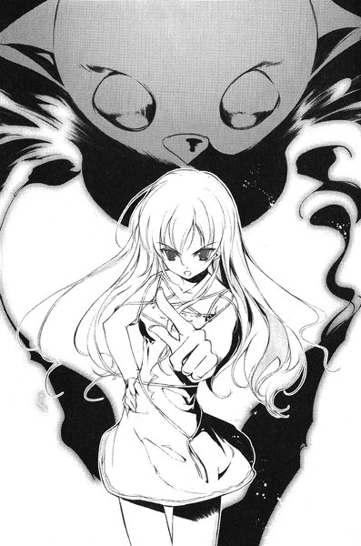
「話を聞い......」
しかし、その言葉は途切れた。攻撃されたからではなく、「黒の彼方」が茜に向かって走り出したからだ。葉ははっと我に返る。先月、ヒトリムシと戦った時も、「黒の彼方」は契約者である志乃を狙おうとしていた。
（待って！）
彼女は黒犬に必死に呼びかける。がくんとつんのめるように怪物は停止した。行動を邪魔された黒犬の怒りが葉の中に流れこむ。葉の意識は一瞬のうちにその感情に塗りつぶされそうになる。彼女はぎゅっと目を閉じて、その感情の奔流に耐えた。
その隙を突いて、ボルガが「黒の彼方」に襲いかかる。眠っている首に前脚が振り下ろされる。「黒の彼方」も大きく顎を開いて反撃する。爪と牙の一瞬の交錯の後で、二匹の怪物はそれぞれの主人の傍らに侍った。
「黒の彼方」の左側の額がぱっくり割れていた。葉は痛みに顔をゆがめながら、顔の片側をおさえる。彼女自身が直接傷を負うわけではないが、カゲヌシとは五感を共有している。
しかし、ボルガの方も無事ではなかった。腹のあたりに食いちぎられたような傷が開いていた。
「いったー」
茜が自分の腹を押さえながら言った。葉は再び身構えたが、ボルガは襲ってこなかった。茜は目を細めて、葉と「黒の彼方」を見比べている。
「その犬って見た目強そうだけど、うまくコントロールできてないでしょ。さっきもあたしらが近づいてきたのに、全然気がついてなかったよね」
葉の背筋が冷たくなった。この相手はヒトリムシよりも手ごわい。ほんのわずかな間でもうこちらの弱点を見抜いてしまった。
「まあ、その犬がどんなワザ持ってるか分かんないけど、時間もかけらんないし」
「黒の彼方」には空気の振動によって敵を攻撃する武器がある。それを使えば空中にいるボルガにダメージを与えることもできるが、振動の範囲にいる者に無差別に被害を与えてしまう。人間である「契約者」が近くにいれば使うわけには行かない。
「......そろそろ本気出そうかな」
葉の全身に緊張が走る。その時、裕生が二人の間に割って入った。
「すいません、ちょっと」
茜が裕生に視線を移す。「黒の彼方」が再び動こうとする。注意の逸れた隙を突くつもりなのだ。しかし、葉は歯を食いしばってそれを押しとどめた。自分よりも裕生がボルガに近い場所にいる。戦いになれば彼を巻きこむかもしれない。
「あの、ほんとに分からないんですけど」
「ううん。君は分かんなくてもその子は分かってると思うよ。それとも君も共犯？」
「そうじゃなくて」
「だから聞くってば。致命傷与えたら」
うんざりしたように茜は言い、ボルガが翼を動かした。葉も覚悟を決めた。とにかく、この鳥を倒すことが先決だ。その後で話を聞けばいい。
「雛咲、まだ待って」
葉が身構えた気配を感じたのか、裕生が振り向いて言った。
「なんの話だか分からないけど、雛咲に関係ないと思います。ぼくたちはカゲヌシにとりつかれてる人を助けに来たんです」
「あたしみたいな人ってこと？」
裕生は頷いた。ボルガの動きが止まり、茜は眉を寄せて考えこんだ。
「うーん......じゃあ、ちょっと君に聞きたいことあるんだけど」
「少しはこっちの話を......」
「すぐ済むからさ」
茜は屋上をまっすぐに横切って、鉄製の大きな直方体の前に立つ。そこから校舎に向かって太いパイプが何本も伸びている。
「これ、なんて言うんだっけ」
「給水タンク......かな」
「やっぱりそうだよね。ってことは」
と、彼女は嬉しそうに言った。
「この中、水だよね」
その瞬間、青い鳥がタンクの上に飛び、爪の生えた肢で器用に丸い蓋を跳ね飛ばした。重いはずの蓋が放物線を描いて、フェンスの向こうへ落ちていった。ずっと下の方から誰かの悲鳴が上がる。葉は手すりに走っていって、思わず校舎の下を見た──中庭の灌木に蓋が引っかかっている。
悲鳴を上げたのは、すぐそばのベンチに座っていた女子学生のようだった。誰も怪我はしなかったらしいが、誰かに当たっていたら確実に死んでいた。
「なにするんですか！」
葉は茜に向き直って言った。
「大丈夫だって。人に当てるようなドジはしないよ」
茜はひらひらと手を振った。ボルガは給水タンクの上に止まったままだった。
「ボルガはねー、近くにある水を操る力があるんだよ。水を集めて飛ばしたりとか」
葉は黒犬を自分たちの前に立たせる。もし、ボルガが水の奔流を武器として使うのであれば、防ぐ方法はそれしかない。
「あ、なにを警戒してるのか分かるけど、それ間違いだから」
葉ははっとした。ボルガが開けたタンクの入り口から、白い煙のようなものが流れ出している。
「正解はこれです！」
まるで爆発するように、タンクから白い塊がどっと噴き出した。その塊は乳白色の津波となって瞬時に葉たちに迫り、逃げ出す間も与えずに彼女たちを呑みこんでいった。
７
葉は静かに目を開ける。辺りは真っ白になっていた。自分のすぐ近くにいた裕生も、「黒の彼方」も見分けられない。手を伸ばしても、伸ばした手がどこにあるのかも分からなかった。白い目隠しをされたようだった。
彼女は自分の体に触れて確かめたが、どこにも怪我はない。彼女を呑みこんだのはただの冷たい空気で──。
「霧......」
彼女の周囲には、白い霧が立ち込めている。ボルガには水を操る力がある、と茜は言っていた。それなら、霧を作り出すこともできるかもしれない。
葉は「黒の彼方」の意識を通じて周囲を見ようとする──しかし、五感のレベルは「契約者」である葉とほとんど変わりはない。
不意に、危機のイメージが彼女の中に流れこんでくる。
『私から離れなさい』
彼女のカゲヌシが語りかけてくる。その意味を理解する前に、霧の中からボルガの爪が現れて黒犬の右肩を裂いた。右肩にはまだ治りきらない傷がある。そこをさらに抉られ、「黒の彼方」と葉の口から同時に声が洩れた。
葉は自分の肩をおさえてうずくまる。彼女も激痛を味わうことになった。双頭の犬が反応する前に、敵は再び霧の中に溶けていく。
（どうして場所が......）
葉ははっとした。カゲヌシ同士は本来、視覚や聴覚に頼らなくとも互いの存在を感じ取ることができる。しかし、「黒の彼方」はその力を使えない。つまり、向こうからはこちらの場所を知ることはできるが、こちらからは分からないのだ。
（どうしよう）
葉の思考が乱れる。彼女に分かるのは、自分と繋がっている「黒の彼方」との位置関係だけだった。
『あなたは役に立たない。敵につかまらないようにして下さい』
立ち上がろうとした瞬間、今度は背中に激痛が走った。「黒の彼方」の背中が抉られたのだ。彼女は必死に悲鳴をこらえる。
白い霧の中に倒れこむ葉を、誰かの腕がつかまえた。
「雛咲」
すぐ目の前にあったのは、裕生の顔だった。
「大丈夫？」
そう離れていない場所から、「黒の彼方」の咆哮と鳥の羽ばたきの音が聞こえる。二匹が戦っているに違いない。この「霧」があの黒犬の目をくらますためだということは分かっていた。
「足音を立てないように歩いて」
裕生は小声で言った。彼は靴を脱いでいる。葉の肩を抱くようにして、裕生は視界の利かない屋上をゆっくりと進み始めた。ほとんど目をつぶって歩いているも同然だったが、素足の指先がコンクリートのつなぎめを踏んでいる。彼は屋上のつなぎ目の位置関係をぼんやりと憶えていた。それを頼りに、葉のところまでたどり着いたのだった。
あとは校舎へのドアに向かうだけだ。さっきから離れたところで、犬の唸り声が聞こえた。葉がまたふらりとよろける。気にはなったが、怪物同士の戦いは放っておくつもりだった──もともと、裕生の望みは「黒の彼方」から葉を解放することにある。あの犬が倒されたところで、葉さえ無事なら問題はなかった。
裕生の手が不意に硬いものに触れる。どうやら、コンクリートの壁にたどり着いたらしい。裕生は指を滑らせて、鉄製のドアを探り当てる。
かすかにドアノブが音を立てただけで、ドアにはカギがかかっていた。
「そこね、閉まってるから」
すぐ近くから茜の声が聞こえて、裕生は立ちすくんだ。
「さっき、カギ閉めちゃったから。だからもうダメ。逃げられない」
自信たっぷりに茜が言う。すぐ隣にいた葉が、その場に座りこみそうになった。裕生は葉の体を支えながら、声の聞こえる方に向き直った。
「じゃ、その子渡してくれる？」
裕生はむかむかと腹が立ってきた。
「いい加減にしろよ！」
と、裕生は叫んだ。
「ぼくたちになんの恨みがあるんだよ！」
「なんの恨みって当たり前でしょ。あたしの家族を殺したくせに」
「雛咲は誰も殺したりなんかしてない！」
と、裕生は叫んだ。
「なんで分かんの！ その子と一緒にいる怪物も、人間を食べるんでしょ」
「あれは他のカゲヌシを食べるんだ！普通のカゲヌシじゃない」
沈黙。ちょっと考えこむような気配があった。
「......じゃあ、その子なにしに来たわけ？」
「だからさっきも言っただろ......他のカゲヌシにとりつかれてる人間を助けに来たんだよ」
再び沈黙が流れた。今度はさっきよりも考える時間が長かった。
「あ、そうだ。これ」
裕生はポケットから例の丸い鉄球を出して、彼女の声が聞こえる方へ転がす。かつんと音が聞こえた。彼女のサンダルに当たって止まったらしい。
「それはこの大学のこの場所に落ちてたんだ。なにに使うものか分からないけど、カゲヌシの契約者が落としたんだよ。ぼくたちは、それを落とした人を探しに来た」
顔は見えないが、どうやら真剣に考えこんでいるらしい。その時間があまりに長かったので、ひょっとするといなくなってしまったのかもしれないと思った時、
「......これがなんなのか、ほんとに分かんないの」
白い空気の向こうから、今までとはまったく違うかすれた声が聞こえた。
「え？」
裕生は思わず聞き返した。分かって当然だと言われている気がした。
周囲の霧がゆっくりと薄らいでいく。茜のシルエットがゆっくりと現れてきた。いつのまにか、ボルガもその背後に戻ってきていた。
「ごめんね。間違えちゃったかも」
「......」
当然ながら、裕生の怒りは収まらない。葉は裕生の肩に顔を伏せたままだった。誤解が解けなければ、葉は殺されていたかもしれないのだ。
「詳しい説明が聞きたいんだけど」
と、裕生は言った。
「うん。そうだね。それが......」
不意に葉が顔を上げて、突き飛ばすように裕生の肩から離れた。裕生はよろけてたたらを踏む。
「雛咲？」
彼女は答えなかった。歯を食いしばって体を小刻みに震わせている。裕生が彼女の肩に触れようとした瞬間、霧の向こうから双頭の犬が現れ──茜に飛びかかった。
葉は苦痛も忘れて、迫りくる黒い犬の前に立ちふさがった。霧の中から現れた「黒の彼方」は、全身のあちこちを切り裂かれており、傷口からは黒い血がにじんでいる。
傷の深さのわりに、血の量はわずかだった。もっとも、「血」といっても体中を循環しているわけではない。カゲヌシは外見上はともかく、こちらの世界の動物とは身体構造が異なる。
葉の意識には、「黒の彼方」の凍りつくような殺意が堰を切って流れこんでくる。外傷は「エサ」を食わない限り回復しない。それだけにケガをした今は「エサ」を欲しているのだ。
（だめ！）
その殺意に呑みこまれそうになりながら、葉は自分自身と「黒の彼方」の双方に向かって念じた。双頭の怪物は彼女の呼びかけに応えず、片方の首を振って彼女を突き飛ばそうとする。しかし、葉はその首をしっかりとつかんだ。たちまち彼女の小柄な体はずるずるとコンクリートの上を引きずられる。
「......待って！」
「黒の彼方」は天内茜ごとボルガを殺すつもりだった。苦痛と空腹と怒りで我を忘れている。このままでは葉自身が意識を乗っ取られるかもしれない。そうなったら、本当にこの怪物を抑えきれる人間はいなくなる。
「ここから早く逃げて」
と、葉は悲鳴のように呟いた。
「お願い」
一瞬、葉の気が遠くなった。「黒の彼方」はじりじりと茜の方に進む。彼女は迷っているそぶりを見せた。
「......雛咲の言うとおりにしてくれる？」
裕生が促すと、茜はボルガを従えたまま校舎のドアに駆け寄った。ボルガの体当たりでドアが開く。そして、彼女の足音が遠ざかっていった。
葉は顔を上げる。裕生が「黒の彼方」の行く手をふさいでいる。「黒の彼方」の中で、ボルガを遠ざけた裕生への怒りが膨れ上がっているのが分かる。葉が意識を失えば、裕生もただでは済まないはずだ。万が一、自分が裕生に害を与えたら、という恐怖が彼女をとらえた。
「......先輩も逃げ」
「ぼくは行かないよ」
葉が言い終える前に、裕生は首を振った。「黒の彼方」の怒りに燃えた目が彼を見ていた。よく見ると、裕生の肩が小刻みに震えている。恐怖を感じていないわけではないのだ。
「雛咲を一人にはしない。そういう約束だろ」
その言葉を聞いた途端、時間が止まったような気がした。屋上に広がっていた霧は、半ば消えかけている。太陽が二人の頭上に戻り、夏の強い日差しが彼らを照らしていた。
葉は深く息を吸い、強く念じる。
（......戻って）
あの茜はボルガというカゲヌシを、意のままに動かしていた。と、いうことは、葉にもこの「黒の彼方」を、彼女自身の意志で影に戻すことができるはずだ。
（戻って）
そう思うたびに、きりきりと頭が締めつけられるように痛んだ。頭の中で荒れ狂っているものがある。自分の中に潜むもう一つの意志。膨れ上がったその塊は彼女の意識を押しつぶしかけていたが、彼女は同じ言葉を心の中で何度でも繰り返す。
（戻って......戻って......戻って）
気がつくと「黒の彼方」は消えていた。コンクリートの上に自分の影が伸びているだけだった。
安心すると同時に、彼女の目の前が暗くなった。
８
「このへん？」
と、裕生は言う。しかし、葉には返事をする気力もないようだった。彼の腕によりかかったままぐったりしている。あたりを見回すと、空き地の向こうに高架式のホームがある。「新大久保」という駅名が見えた。
（......ここ、どこなんだろう）
新宿のどこからしいが、裕生にもよく分かっていなかった。
「黒の彼方」を封じた後、葉は意識こそ失わなかったが支えなしでは歩くこともできないようだった。病院に連れていくから、と言うと、葉は裕生に一枚のメモを渡した。住所が書いてある。ここに連れていってください、と耳元にささやかれた。
裕生は大学の裏門まで彼女を運ぶと、大通りでタクシーを拾った。運転手にそのままメモを渡すと、なにか言いたげな目でルームミラーごしにちらりと二人を見た。
（なんだったんだろ、あれ）
学校にいるはずの時間に、私服で出歩いているのを怪しまれたのかもしれない。
彼らが今立っているのは、小さな居酒屋や飲食店が並んでいる通りだった。ハングルの看板もちらほら見える。
葉は裕生の腕にぶら下がるようにして、ふらふらした足取りで歩き始めた。裕生はあわてて彼女の歩調に合わせる。どこに行くつもりなんだろう、と思った時、
「えっ？」
裕生は思わず立ち止まりそうになった──あれはひょっとして。
「ホテル・クリスタルゴールド」
看板があった。ホテルと言っても、けばけばしい派手な色づかいといい、微妙に矛盾した名前といい、どう見ても「普通の」ホテルではなかった。裕生の心臓がばくばく音を立て始めた。さっきのタクシーの運転手がうさんくさそうに自分たちを見た理由も分かった。このあたりには「こういうホテル」があるからだ。
「ちょ、ちょっと待って雛咲。どこに行くの」
葉は相変わらず答えない。なおも彼の腕をぐいぐい引っ張るようにして進んでいく。どうしよう、と裕生は思う。確かに葉は具合が悪そうだし、どこかで休んだ方がいいかもしれない。
しかし、ここはいくらなんでもまずい。昼間からこんなところに入っていいはずがない。いや、夜はもっとまずい。そもそも、クリスタルゴールドとはなんなのか。
妙に入り組んだ入り口と、「休憩・四〇〇〇円」というプレートが見える。同じクラスの佐貫が「ああいうところは入り口で迷ったりするとダメらしいぞ」と言っていたのを思い出す──なんの役にも立たない助言だった。
しかし、葉はホテルの入り口には目もくれずに通りすぎた。
「あ、あれ」
裕生は引きずられながら思わず振り返る。どうやら目的地はそこではなかったらしい。葉はホテルから数十メートル進んだところで、不意に足を止めた。こぢんまりした二階建ての建物の前だった。一階はレトロな内装のバーらしい。看板を見ると、
「喜嶋バー」
裕生はようやく納得した。昨日の晩、父と兄が来たという葉の叔母の店だった。
９
時々、喜嶋ツネコは和服姿で店に出る。慣れているとはいえ着付けには時間がかかるのだが、背筋がぴんと伸びるようで気持ちが引き締まる。気分転換にぴったりだった。
もっとも、気分転換をしなければやりきれない時にしか和服を着ないので、「喜嶋バー」の常連客の間では、彼女の和服は「今夜は機嫌が悪い」という危険信号と認識されていた。
ツネコは喜嶋バーの二階に住んでいる。着付けはほとんど終わり、和室の鏡の前で最後の確認をしていた。今日、彼女が選んだのは赤茶色の琉球紬で、白生地の半幅帯をきりっと締めている。一番気に入っている夏の着物だったが、逆に言えばそれを着なければならないほど不機嫌ということでもある。
彼女の不機嫌は昨日の晩からだった。一番の原因は昨晩現れた藤牧吾郎という中年男なのだが、その男が持ってきた用件もまた不快だった。
「あなたの姪御さんの葉ちゃんを、うちに住まわせたらどうかと思いまして」
藤牧吾郎と名乗る男はそう言った。チンピラ風の若い男を引き連れてきたので、一瞬この近辺のヤクザが訪ねてきたのかと思ったが、大学に通っている長男と聞いて一安心した。
「一人きりにさせていては、あなたもご心配でしょう」
「......」
ツネコは黙っていた。「心配」なのは今さら言われるまでもない。葉が一人暮らしをしていたことにはずっと反対していたので、誰かと一緒に住むことには賛成だった。しかし、その相手は自分であるべきだし、そもそも、どうして葉本人が自分に言わないのだろう、と思っていたのである。
吾郎の話では、先月からそういう話が持ち上がっていたということだった。しかし、先週葉の住む団地に訪ねていった時にも、そんな話は全く聞いていない。
ツネコは事実上、葉のたった一人の親戚だった。夫を亡くし、子供もいないツネコとしては持てる愛情を注いできたつもりだったが、葉は両親の失踪以前からツネコにはまったくなつかなかった。はっきりした理由があるわけではない。要するに性格が合わないのだった。
死んだ夫には常々、「お前は情が厚いけれど、気も強いから気をつけるように」と言われていた。自分でも気をつけているつもりなのだが、時々ついきつい言い方をしてしまう。葉は彼女から見れば無口で意固地なところがあり、可愛いと思いながらも一言いわなければ気が済まなかった。
兄夫婦が突然姿を消した時、おろおろしていたのは葉よりもツネコだった。むろん葉もショックを受けていないはずはないが、「あたしの家でお父さんとお母さんを待とう」とツネコが言っても、絶対に首を縦に振らなかった。一人娘を残して両親が同時に失踪するというのは明らかに異様だった。一人で部屋に残って待つと言い張る葉も奇妙に思えた。
葉の話をきちんと聞くべきだったと今でも後悔しているのだが、ツネコはあまりにも強情な葉の態度につい苛々して、「じゃあ、勝手にしなさい」と言ってしまったのだ。
最初、ツネコは葉が一、二週間で音を上げるはずだと思った。しかし、一ヶ月が過ぎても一年が過ぎても、葉は一人で生活しつづけた。そのうち自分を頼ってくるだろうと思っているうちに、気がつけば三年以上になる。もちろん定期的に様子を見に行っているのだが、ツネコ自身が「勝手にしなさい」と言った手前、引っこみがつかなくなっていた。
あの強情の源はなんなのか常々疑問に思ってきたのだが──。
（藤牧裕生）
その名前を思い浮かべるとむかむかする。葉が一人暮らしをしている理由は、そこにあるのではないかと最近思うようになっていた。
発端は兄のアタッシュケースだった。今年の四月ごろ、葉が学校に行っている時間に団地を訪れたことがあった。合鍵は持っているので中に待っていたのだが、葉の部屋で女の子には似つかわしくない黒いアタッシュケースを見つけた。
ツネコはそのケースに見覚えがあった。昔、ツネコが兄にプレゼントしたものだったからだ。兄が分からないと言うので、鍵の暗証番号もツネコが代わりに設定した覚えがある。
（懐かしい）
ケースの表面の黒い皮に触れながらツネコは思う。失踪した父親のものを部屋に置いている葉をいじらしく思った。この持ち主はどこに消えたのだろう。兄も義姉も大人しい性格で、失踪するような理由はなにひとつなかったような気がする。もっとも、それは外から見た者の印象でしかなかったが。
ツネコは物思いに耽りながら、くるくるとダイヤルを回す──深い意味のない行為だったが、昔、設定した通りの番号に合わせると、あっさりケースは開いた。
中には一冊のノートが入っていた。
ぱらぱらめくると、子供らしい丁寧な字でなにかが書きこまれている。葉の日記かなにかのようだった。「くろのかなた」という題名の詩のようなものがちらりと見えたが、どちらにしても他人が見ていいものではない。ノートをぱたんと閉じて、元通りにしまいかけた時、ツネコは裏表紙の名前に目を留めた。
「藤牧裕生」
よく見れば、このノートの字は彼女が知っている葉の字とは違う。だとすると、このノートはその「藤牧裕生」のものなのだろうか。それをどうして葉が持っているのだろう。
ふと、ツネコはこの団地の棟のポストに、「藤牧」という苗字があることを思い出した。確か、一番上の階に住んでいる住人だ。
そういえば、葉と同い年ぐらいの男の子と、この棟で何度か挨拶を交わしたことがあった。大人しそうな痩せた少年で、確か上の方の階に住んでいた気がする。
葉が学校から帰ってきてから、ツネコはさりげなく葉に尋ねた。
「この団地に、あんたと同い年ぐらいの男の子、いるわよね？」
葉ははっと顔を上げる。
「裕生ちゃ......藤牧先輩？」
やっぱりね、とツネコは思った。どうしていちいち名前を言い直すのかはよく分からなかったが、あれはあの男の子のものなのだ。大事にしまってあったところを見ると、おそらく貰ったものなのだろう。
「うん。こないだ来た時、挨拶されたから誰かと思ったんだけど。あんた、お邪魔したりしてるの？」
「......たまに。あの、ご飯食べに行ったり」
葉は消え入りそうな声で答えた。珍しく動揺しているらしい。
「あんまりご迷惑かけちゃ駄目よ」
「......めいわく」
生まれて初めて聞いた単語のように、葉は口の中で呟いた。
「そう。いくら近所って言っても、よそのうちなんだからね」
言外に自分を頼れという意味をこめたつもりだが、葉はそれには反応しなかった。迷惑、という言葉にショックを受けているようだった。
ちょっと言いすぎたかもしれないと思い、ツネコは話題を変えた。
「どんな子？ あの裕生君ってのは」
ツネコは目を瞠った。今まで見たことのないはにかんだ笑みが、葉の顔いっぱいに広がった。ツネコの方が恥ずかしくなるほど、さんざん迷った末に葉は答えた。
「............やさしい」
乙女の顔だわ、とツネコは思った。複雑な気分だった。
そもそもツネコは藤牧吾郎の話を誤解していた。話を始めた時から、自分に妙に熱っぽい視線を送ってくることに気づいていたが、まさかこの男が妻を亡くしていて、藤牧家には男しかいないとは思っていなかったのだ。
藤牧裕生の存在は気になったが、母親代わりの人間と一緒に住むのは悪いことではないと思っていた。飛び上がりそうになったのは、吾郎が裕生と電話で会話している時だった。
「いや、俺が帰らないと、お前と葉ちゃんは二人きりだろう」
唖然としたツネコは、バーボンをストレートで飲んでいるヤクザもどきの長男に顔を寄せて囁いた。
「......ちょっと、お宅ってお母さんいるのよね？」
「いや、お袋は死にましたけど」
長男──藤牧雄一はあっさりと答えてから、ツネコの動揺に気づいたらしい。少し改まった表情でグラスをカウンターに置いた。
「そういや、言ってなかったっスね。まあ、でもうちの男どもは決して問題起こすようなコトは」
しかし、その言葉を遮るように吾郎の声が響き渡った。
「学校でもならったと思うが、基本はやさしくだ。何よりも大切なのはムードだな」
一瞬、ツネコの頭の中が真っ白になったが、同時に雄一の顔色が変わったことにも気づいた。彼の手にしていたグラスがみしっと音を立てる。
二人のそばで、相変わらず吾郎は携帯に向かって語りかけていた。
「だから、押し倒したりしてはいかん。もちろんアレだ。双方合意の上なら何の問題もないのだが、その時はちゃんと避妊を」
ぶつっと通話が途切れたらしい。不思議そうに吾郎は携帯を見つめる。
「なんだ、大事な話なのに」
それから、吾郎はにこやかにツネコに向き直った。
「......さて、話を戻しましょうか」
「ちょっと」
「おい」
ツネコと雄一は震える声で同時に言った。
ツネコは帯締めを整えて、鏡の中の自分の姿を点検する。
昨晩のことを思い出すと、彼女はまだ怒りを鎮めることができない。あの藤牧吾郎という男も不快だったし、その息子の藤牧裕生も信用する気にはなれなかったが、一番気になっているのは、裕生のことを話した時の葉の態度だった。
あの様子では一緒に住んでいなくとも、万が一「藤牧裕生」が理性を失ってしまったら、姪は抵抗しないのではないだろうか。
「......冗談じゃない」
想像したくもない話だった。絶対に藤牧裕生とやらと一緒に住まわせるわけにはいかない。いや、それ以前に半径一メートル以内に近づいてほしくなかった。もし、姪に指一本でも触れたらただでは済まさない。「ちょんぎる」というのは決して単なる脅しではなかった。
その時、階下のバーのドアの開く音が聞こえた。まだ「準備中」のプレートはかけたままだった。アルバイトが来る時間にしても早すぎる。彼女は首を傾げながら、急な階段を降りていった。階段の下にはバーのキッチンがある。
「雛咲、気をつけて」
男の声が聞こえる。サンダルをはいて、キッチンから店を覗きこむ。喜嶋バーはカウンター席があるだけのこぢんまりした作りである。しかし、アルコールだけではなく、簡単な食事も出す。隠れ家のような落ち着いた店、というのがもともとのオーナーである夫の希望だった。
ステンドグラスをはめこんだドアが開いていて、葉が立っていた。ちょっと線の細い、大人しそうな男の子と一緒だった。葉の顔色は真っ青だった。ふらふらしてまっすぐに立っていられないらしい。
「どうしたのあんた。学校は？」
慌ててカウンターの外へ出る。ふと、ツネコは眉をひそめた。葉は男の子の腕にすがりついている。ツネコはまじまじと彼の顔を見る。見覚えのある顔だった。
「どなた？」
「あの、藤牧といいます。雛咲の近所に住んでて......昨日父と兄がここに」
少しびくびくした態度で彼は言った。
「......藤牧裕生？」
我ながら険しい顔をしているに違いないとツネコは思った。
「はい、そうです......こ、こんにちは」
「......」
回れ右して今すぐ出てけ、という言葉をツネコはどうにか呑みこんだ。
10
和室に敷かれた布団で葉は静かに眠っている。裕生は落ちつかない気分で、その脇に正座していた。西日の射し込む部屋の中は、きれいに片付いている。階下のキッチンでは、ツネコが包丁を使っている音がする。多分、開店のための仕込みの最中なのだろう。大きな和箪笥と、その上に置かれた小さな仏壇を除いては、いかにも大人の女性の一人暮らしという部屋だった。
ぐう、と裕生の腹が鳴った──考えたら、昼食も食べていない。
「......ちょっと来て」
和服用の白いエプロンを着たツネコが、階段から顔を覗かせる。少しきつい顔だちだが、葉に似ていると思う。髪の長さも葉と同じように、肩より少し長いぐらいだった。年齢は多分、二十代後半か三十代前半だろう。
「は、はい」
裕生は立ち上がる。ツネコは冷たい目でじっと裕生の動作を見つめている──葉も将来こういう人になるのだろうかと少し不安になった。
ツネコの背中について階段を降りる。店に入ると、ツネコが凄みのある低い声で言った。
「バイトの子がね、急に休みになったの。今日はあたし一人なんだけど」
彼女の視線は、店の隅に立てかけられたモップとほうきの方に向いている。なにを言おうとしているのか、理解できるまでしばらく時間がかかった。
「......掃除ですか」
おそるおそる裕生は言った。「手が足りないから手伝え」と言っているらしい。
「他になにがあるのよ。とっととやる！」
裕生はドアを開けて、店の中を掃くところから始めた。ツネコの視線は怖かったが、何もしないで向かい合っているよりはずっといいと思った。それに、掃除なら普段からやっている。とにかく、目の前の作業に集中していると、
「あんたの家は、誰が家事やってんの」
キッチンから声が飛んだ。
「ぼくですけど」
沈黙。なんだろう、どういう意味なんだろう、と思いながら、裕生は掃除を続ける。埃を集めてから、絞ったモップで床を磨く。
「あんた、あの子になにかしたわけ？」
裕生はぎょっとして思わず手を止めた。
「い......いいえ。そうじゃないですけど、ちょっと具合が悪くなっちゃって」
「なにしにこっち来たの。平日だから学校あるでしょ」
裕生は乾いた唇を湿らせた。カゲヌシにとりつかれている人間を探しに来ました、などと言えるはずがない。あまり嘘をつきたくはないが、とにかく適当に──。
「嘘はすぐ分かるからね」
キッチンから、ざくっ、ざくっ、と包丁を使っている音が聞こえる。どうやら野菜を切っているらしい。裕生は絶句したまま静止していた。頭の中を例のあの手紙がぐるぐる回っている──ちょんぎる。
しかし、本人が自分から言うならともかく、葉の秘密を裕生がべらべら話すわけには行かない。彼はごくりと唾を呑みこんだ。
「ちょっと、言えません」
突然、出刃包丁を手にしたツネコがキッチンから飛び出してきた。恐怖のあまり裕生は一歩も動けなくなった。
「なんだって？」
ツネコは低い声で言った。小鼻がぴくぴくと震えている。本気で怒っているに違いない。
「その......事情があって」
「犯罪がらみ？」
「ち、違います。悪いことじゃなくて」
「じゃあなに」
「......なんていうか、人助けみたいな」
「『みたいな』？ なにそれ」
裕生は答えに窮した。その瞬間、ツネコの忍耐が限界点を突破した。
「はっきり言いなさい！」
ツネコはどん、とカウンターに出刃包丁を突き立てた。裕生は思わず飛び上がりそうになった。
「あのねえ、あたしはあんたを信用できないの。分かる？」
「......」
「うちの姪っ子になにがあったのか聞いてんの！」
裕生は眠っている葉のことを考えた。自分からは悩みを打ち明けようとはしなかった。「黒の彼方」という怪物にとりつかれ、すべてを自分で抱えこんで他の人間を助けようとしている。ただそばにいるだけの自分が情けなかった──自分が信用されるかどうかなど、大した問題ではない。
「やっぱり......言えないことは言えません」
と、裕生は言った。いつのまにか震えも止まっていた。
「もう一回言っ」
「でも、ぼくを信用しなくても、雛咲を信用してください！」
ツネコの顔からふっと表情が消えた。瞬きもせずに裕生を見ている。カウンターをはさんで、裕生はツネコと無言で向かい合っていた。やがて、ツネコはぴんと立っている包丁をのろのろと抜いた。
「......床が終わったらトイレも掃除しといて」
「は、はい」
ツネコはキッチンに戻り、再び仕込みを始めた。裕生は床の掃除を続ける。続いて、トイレの掃除を始めると、急にキッチンからいい匂いがしはじめた。ベーコンとニンニクをオリーブオイルで炒めているらしい。
ぐう、とまた腹が鳴った。こんな時でも腹が鳴るのが情けなかった。掃除を終えて店に戻ると、無人のカウンターにパスタの皿が湯気を立てていた。多分、これを作っていたのだろう。具はベーコンとしめじだった。
「あの......」
キッチンの方へ声をかけると、
「もうすぐ開店だから、急いで食べて」
面倒くさそうなツネコの声が返ってくる。一瞬、本当に食べてもいいものか迷ったが、食べてはいけない理由も思いつかない。何より腹が減っていた。
「......いただきます」
裕生は食べ始める。美味しい。夢中になって食べていると、いつのまにかカウンターの向こうから、ツネコが黙って彼を見下ろしていた。相変わらず、値踏みするような冷ややかな目つきだった。緊張しながら、裕生は最後まで食べきった。
「ごちそうさまでした。おいしかったで......」
「七百円」
ツネコは壁を指差しながら呟いた。確かに、壁にかかっている手書きのメニューには「しめじとベーコンと青じそのパスタ・七〇〇円」と書かれている。お金取るんですか、と問い直す余裕もなかった。裕生はあわてて財布を出して、硬貨をカウンターの上に置く。ツネコはそれを受け取ると、さらりと言った。
「じゃ、もうすぐ開店だから出てって」
「えっ」
「葉はうちに泊めます！ あんたは明日また来なさい」
「は？」
──気がつくと、裕生は「喜嶋バー」からたたき出されていた。
第三章「鉄の乙女」
１
二ヶ月前の誕生日、天内茜がマンションのドアの前に立ったのは夜の八時近くだった。学校帰りの彼女は制服を着ている。
（小夜に悪いことしちゃったな）
彼女のために妹の小夜がケーキを作ってくれたはずだ。早く帰ってくるよう言われたのだが、友達とカラオケに寄ったせいで、思ったより帰るのが遅くなってしまった。それでもあまり怒ってはいないだろうと思う。むしろ、姉がどうなったのか心配しているはずだ。かえってその方が罪悪感がある。小夜は三つ年下だったが、茜とは正反対の性格である。お菓子作りが好きなおとなしい女の子だった。
（......謝んなきゃ）
覚悟を決めてドアを開けると、中は真っ暗だった。
「ただいま」
答えはなかった。茜は首をかしげながらそっと革靴を脱ぐ。家族が中にいるのは分かっていた。さっき、道路から見上げた時は、確かに窓に明かりがついていたからだ。
一瞬、自分がリビングに入った瞬間に明かりがついて、すっかりパーティの準備が終わっているところを想像して、
「......そんなはずないか」
すぐにそれを振り払った。妹はともかく、両親がそんなことを茜にするはずがない。
この家で茜の誕生日を憶えているのは小夜だけだ。両親からは何年も祝ってもらった記憶はない。茜の方でも別に祝って欲しいとは思わなかった。
妹にも気を遣わなくていいと毎年言っているのだが、必ずケーキとプレゼントを用意してくれる。ケーキはなにを作ってくれたのか分からないが、プレゼントは毎年なんとなく予想がつく。今年は多分ぬいぐるみだと思う。妹が好きな昔のアニメのキャラクターで、茜も最近ちょっと気に入りかけていた。
異変に気づいたのは、リビングに足を踏み入れた時だった。かすかな血の臭いが漂っていた。
「え？」
彼女の背筋をさっと冷たいものが撫でる。慌てて壁際の明かりのスイッチを入れた。光に目が慣れると、最初に飛びこんできたのは赤い色だった。
「......パパ」
リビングの真ん中に父親が仰向けに倒れていた。会社から帰ってきたばかりらしく、まだネクタイもほどいていない。Ｙシャツの胸あたりから、銀色の細いものがまるで植物のように天井に向かって生えている──茜はそれに見覚えがあった。普段父が使っているペーパーナイフの柄だ。まだ傷からは新しい血があふれ続けていた。
茜は口を押さえながら、よろよろとダイニングのテーブルに手をついた。彼女ははっとキッチンを振り返る。母親が茜に背を向けて、シンクに額をつけるようにしてマットの上に座りこんでいた。
「ママ」
不吉な予感に苛まれながら、茜はキッチンへ入る。震える手で肩に触れると、まだ温かかった。しかし、彼女が触れると同時にぐらりと彼女の体は倒れてくる。
「......あ」
母親の体を受け止めながら、茜は小さな悲鳴をもらす。母親の半身はべっとりと血で染まっていた。
茜はキッチンで膝をついたまま呆然としていた。どのぐらいの時間だったのか、彼女にも分からない。数秒のことだったかもしれないし、何分も経っていたかもしれない。我に返ったのは、キッチンカウンターの上にあるものに気づいたからだった。調理道具と一緒に、何かが置いてあった。
作りかけのケーキだった。スポンジの生地に生クリームを塗っていたところらしい。クリームのついたパレットナイフが無造作に投げ出してあった。
「......小夜」
妹はここでケーキを作っていたに違いない──今はどこにいるんだろう。静かに母親の体を横たえてから、壁に手をつきながら立ち上がる。不吉な予感が喉元までせり上がっていた。廊下へ戻り、ひとつひとつ部屋を確認していく。両親の寝室にも、洗面所にも妹の姿はない。茜は妹の部屋のドアを開ける。
部屋の蛍光灯を点けた瞬間、茜の膝がフローリングの上にがくりと落ちる。びしゃっと血飛沫が散った。ねばついたぬるい液体の中に、彼女は座りこんでいた。
小夜はドアから一メートルほど離れたところに倒れていた。体はうつぶせに、青白い顔を横に向けていた。今朝、茜が手伝ってあげた細い三つ編みが血だまりの中に浮いている。小夜の体のそばには、赤く染まった包丁が捨てられていた。
違う、と茜は思った。妹がこんなひどいことをされるはずない。きっとなにかの間違いなんだ。これは小夜じゃないんだ。
しばらくの間、茜は妹の枕元に模様のようなものがあることに気づかなかった。それが血で描かれた文字であると分かり、その文章の意味を理解するのにさらに時間がかかった。
前半のほとんどは血だまりに沈んで、読むことができなかった。しかし、その後ははっきりと読むことができた。知らない男の字だった。
........................よ、わたしがお前に代わって死ねばよかった
血で描かれた文章を口の中で読み上げた瞬間、彼女の胸がきりきりと痛んだ。まるで誰かに心臓をねじられているような気がした。
（なに、これ）
ひとりでに体が震え始めた。彼女は両手で自分の胸をおさえる。わたしがお前に代わって死ねばよかった──まるで茜の言うべき言葉を先回りしているようだった。
「......なんなの、これ」
絞り出すような声で茜は呟く。彼女を現実に引き戻したものは、かつて感じたことのない激しい憎悪だった。妹の顔には、まだ乾ききっていない涙の跡があった。
背後でドアの軋む音がする。
彼女は振り向く。廊下の反対側に、細めに開いたドアが見えた。そこは茜自身の部屋だった。そこだけはまだ確認していない。
突然、下からマンションを見上げた時は、この部屋の明かりが点いていたことを思い出す。あの時まだ犯人はここにいたのだ──あるいは今もどこかにいるのかもしれない。
恐怖と不安で頭の中はごちゃごちゃになっていたが、それでも彼女は血だまりの中から、震える手で包丁を拾い上げた。もしここに犯人が残っていたら、ただでは済まさないつもりだった。
「......誰かいるの？」
自分の部屋のドアの前で、そう呼びかける。隙間からは暗闇が見えるだけだった。しかし、何かがこの部屋の中にいるような気がする。彼女は包丁の柄をしっかりと握りしめた。
それから、彼女はゆっくりとドアを押した。
廊下から射しこむ光が部屋を照らす──ドアのすぐそばの床に奇妙なものがあった。
それは黒く塗りつぶしたような楕円体だった。ちょうどサッカーボールほどの大きさで、両端がかすかに尖っていた。大きすぎることを除けば、形は卵に似ている。
しかも、その「卵」は一つではなかった。床の上には二つの黒い卵が並んでいた。どちらも同じような大きさ、同じ形だったが、右側の方は完全に割れて、中身は空っぽになっている。左側の卵にはまだひびも入っていなかった。
（なに、これ）
しかし、それも一瞬のことで、彼女は我に返る。この部屋に潜んでいるかもしれない犯人のことを思い出したのだ。ここから逃がすつもりはない。抵抗しようとすれば、
（ころしてやる）
心の中でそう呟いた瞬間、ぴしりと小さな音が聞こえた。まだ無事な方の卵に、かすかな亀裂が入っていた。
「......え？」
茜の目の前で、みるみるうちに亀裂が広がっていく。逃げることも近づくこともできなかった。まるで爆発するように卵の一部が弾けた。
そして、彼女は気を失った。
目を開けると廊下に大きな青いものが置いてあった。
「......ボルガ？」
ぬいぐるみだと思った。妹が誕生日のプレゼントにくれるはずだったもの。しかし、それにしては大きすぎる。人間の体ほどの大きさがあった。
なによりもその「ボルガ」は動いていた。バランスを取るように青い翼を広げて、よちよちと彼女の方へ進み、彼女の顔のすぐ目の前に止まった。
彼女はゆっくりと体を起こした。腰を下ろした彼女のすぐ目の前に、相手の顔があった。
「ボルガ」
と、彼女は呟いた。青い鳥はまるで頷くように前後に揺れる。
（小夜が見たら、喜ぶだろうな）
彼女は震える手で「ボルガ」の体を撫でた。彼女の手のひらには、死んだ家族の返り血がついていた。柔らかい羽根の先がかすかに赤く染まった。
（これがあたしへのプレゼント）
彼女はボルガを撫で続ける。突然、その唇から嗚咽が洩れた。堰を切ったように両目から涙が流れ始めた。頬から伝った涙がぽたぽたと床に落ちる。
ボルガの見つめる中、彼女はいつまでも泣き続けた。
２
「おかけになった電話は、電波の届かない場所にあるか、電源が入っていません」
裕生はため息をつきながら携帯をしまった。
（こういう時に限って）
雄一の携帯には繋がらなかった。一応メッセージを残しておいたが、あの兄のことだ。いつ聞くか分かったものではない。
裕生は新大久保の駅のすぐそばにいる。夜になってから人通りも増えてきたが、聞こえてくるのは日本語だけではなかった。このあたりは外国人が多く住んでいるらしい。ガード下にぼんやり立っている裕生を、人々がちらちら見ながら通りすぎていく。
（どうしよう）
兄のアパートは確か中野にあると聞いているが、住所までは知らない。本当は今夜は一度加賀見まで帰って、明日また出直した方がいいのだろう。しかし、裕生は大学で会ったあの天内茜が気になっていた。勘違いだと納得して去っていったが、いかにも思い込みが激しそうだった。もう一度気が変わって、葉を襲わないとも限らない。そもそも、裕生は彼女がどうして東桜大学にいたのか、まったく知らないのだ。
葉はまだ眠っているはずだった。あの「喜嶋バー」からあまり離れるわけにはいかない。裕生がガード下から出ようとした時、頬に冷たいものが当たった。
「......雨だ」
ますますいやな気持ちになった。どこで一晩を過ごすかはともかく、コンビニでカサぐらい買った方がいいかもしれない、と思った時、突然頭の上にビニールのカサが差しかけられた。
「え？」
裕生が振り返ると、見覚えのある顔がにこにこ笑っていた。
「ねえ、なにやってんの」
傘を持っているのは、天内茜だった。
「ふーん、じゃああたしより一コ下か」
タクシーの中で茜が言った。裕生はまじまじと彼女を見る。明るい色のくるくるカールの長い髪の下にはピアスが見える。裕生のまわりにはあまりいない派手なタイプの女の子だった。自分と一歳しか違わないようには見えない。
「これってどこに向かってるの」
裕生は行き先がどこなのか知らなかった。喜嶋バーを追い出されたことを説明すると、「じゃあ、ついてきて」と、タクシーに乗せられたのだった。ついていくのは危険な気もしたが、彼女から色々と聞きたいこともあった。窓の外を見ている限りでは、タクシーはどこかの住宅地へ入ろうとしている。
「それより、どうしてあたしがあそこにいたか聞かないの？」
「ぼくたちを追いかけて来たんだろ」
葉はカゲヌシの気配を発しているはずだ。自分たちには気づかれずに後を追うのはさほど難しくない。
「まあね。話も途中だったしさ。でも、変に近づいたらまた飛びかかってくるかもしれないし。どうしようかなーって思ってたら、君が店から出てきたの」
茜は裕生の顔を横目で見ながら微笑んだ。カゲヌシに意識を乗っ取られているわけではなさそうだった。しかし、カゲヌシは人間を食って成長する怪物であり、油断はできないと思った。
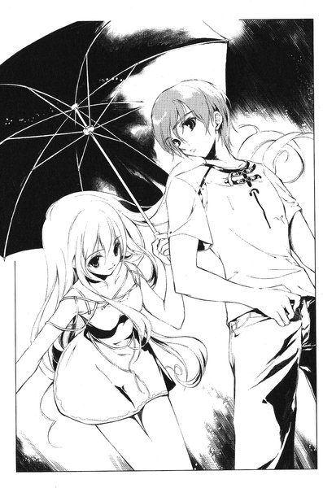
「天内さんは」
「茜でいいよ」
「......天内さんは、なんであそこにいたの」
どこまで信用していいのか、まだ分からない。なにしろ自分たちを殺そうとした人間なのだ。茜は身を乗り出して、裕生に顔を寄せた。透けるような白い肌から、かすかに香水の匂いがする。
「言ったでしょ。あたしの家族を殺したヤツを探しに来たんだよ。そいつも多分、カゲヌシとの契約者なの」
感情のない低い声で茜は呟いた。
「二ヶ月ぐらい前、中学生の女の子が殺されたの知らない？」
裕生は頷いた。昨日ニュースで見たばかりだった。両親が行方不明になっていたとは聞いたが、被害者に姉がいたという話は初耳だった。
裕生が黙っていると、彼女はバッグを開けて、一枚の紙を差し出した。ファックスの用紙らしい。暗い車内で目を凝らすと、下手な文字が次々と流れていく街路灯の光に浮かび上がった。
「お前の家族を皆殺しにした者は、東桜大学にいる」
子供が書いたような字だった。いや、大人でも左手で書けばこうなるかもしれない。
「昨日の晩、それがうちに来たの」
と、茜は言った。
「誰から？」
裕生も茜に顔を近づけた。
「犯人でしょ」
と、彼女はあっさり言った。
「家族がみんな死んだこと知ってるの、あたしと犯人だけだもの」
「......両親は行方不明ってニュースでは言ってたけど」
茜の顔がかすかに歪んだ。
「後で詳しく話すけど、あたしは父さんと母さんが死んでるところを見たの。でも気がついたら、二人ともいなくなってた......多分、犯人のカゲヌシが食べたんだと思う。残ってたのは妹だけだった」
「......このマークは？ 東桜大学の門にも、同じマークがあったけど」
「それは分かんない。でも、これもカゲヌシに関係したことだと思うよ。こういうマークがある場所には、カゲヌシがいるってことなんだよ、きっと」
「あ、ここで停めて」
茜が運転手に言う。停止したタクシーから外へ出ると、マンションの入り口だった。
「......ここは？」
裕生は料金を払って降りてきた茜に尋ねる。
「あたしんち」
と、彼女は言った。
「泊まるとこないんでしょ。うちに泊めてあげるよ」
タクシーが走り去る。裕生は呆然と立ち尽くしていた。
「気にしなくていいよ。あたしとボルガしかいないし」
むしろそれは気にしなければならないと思う。そういえば、昨日も似たようなことがあった気がする──しかも、相手は両方ともカゲヌシの契約者の女の子だった。
「ちょっとそんな......」
「あ、そうだ。いいもの見せてあげる」
茜は裕生の話を最後まで聞かずに、裕生の腕を引っ張っていく。そして、入り口の自動ドアのガラスの隅を指差した。
「これって......」
裕生は目を瞠った。奇妙なマークが白いスプレーで落書きされていた。丸の中に正三角形が一つ描かれている。東桜大学の校門に描かれていたものと形は違うが、大きさはだいたい同じだった。
「何度消しても、いつのまにかまた描かれてるんだって」
と、茜は言った。
「多分、これがあたしとボルガがここにいるっていうマークなんだよ。誰がつけたのか知らないけど」
カゲヌシの居場所が分かるということは、このマークをつけた者もカゲヌシにとりつかれた人間に違いない。しかし、カゲヌシの契約者がこんなマークをつける意味はない気がする。カゲヌシ同士では居場所を察知することができる。むしろ、人間に対する警告に思えた。
「どうしたの？ 入るよ」
茜は自動ドアの前に立っている。裕生は慌ててその後を追った。
３
暗闇の中で葉は目を開ける。彼女は布団の中で横向きに寝ていた。顔の手前で重ねられた両手は、いつのまにか固く握りしめられている。
とてもいやな夢を見ていた気がしたが、内容までは思い出せない。夢でよかった、という気持ちだけが残っていた。
彼女はほっと息をついて力を緩めた。耳を澄ますと、かすかに雨の音が聞こえる。葉はこの音があまり好きではない。いやな夢を見たのも、そのせいかもしれなかった。
「起きた？」
不意にツネコの声が聞こえた。薄暗い部屋の窓際に、正座しているツネコのシルエットがぼんやりと見える。彼女は窓の外を眺めているらしい。
「あんまりお客も来ないから、さっき店閉めたのよ。雨も降ってきたしね」
ツネコは外を見たまま呟いた。前にもこんなことがあったと葉は思う。それがいつだったのか、思い出す前にツネコが口を開いた。
「兄さんたちがいなくなった後、何日もこんな雨が降ってたね。あの団地の部屋で、あんたと夜中にこんな風に座ってたの、憶えてる？」
葉は布団の中でこくんと頷く。ツネコの言葉ではっきり思い出した──あの時もなにを話すでもなく、ぼんやりと外を眺めていた。雨の音が嫌いになったのは、あれからだと思う。
「そういえば、葉は『お父さんたちはどこに行ったの』って、周りの大人に聞いたことないね」
と、ツネコは呟いた。質問のようにも独り言のようにも取れる言葉だった。葉は体を固くして次の言葉を待ったが、ツネコはなにも言わなかった。
ふと、葉は裕生の姿が見えないことに気づいた。
「......先輩は？」
「さあ。明日出直して来いって言って、追い出しちゃった」
葉は思わず体を起こしかける。ツネコはちらりと葉を振り返った。
「でも、どっかに泊まって明日来るわよ。多分ね」
「......ひどい」
外は雨が降っている。泊まるところが見つからなかったら、どうするのだろう。
「どうにかするでしょ。お兄さんがこっちの方に住んでるんだし」
「どうして」
「うーん。なんか腹が立ったのよね」
葉も腹を立てていた。ツネコおばさんはどうしていつも意地悪なんだろう、と彼女は思った。自分が寝ている間に、色々ひどいことを言ったに違いない。
彼女が口を開きかけた時、ツネコがぽつりと言った。
「あの子、いい子だね」
「えっ」
葉は自分の耳を疑った。
「ちょっと掃除させたんだけど、てきぱきこなしてたわ。そこそこ礼儀正しいし、食事のマナーも悪くない。見た目はボーっとしてるけど、大事なところではちゃんと度胸も据わってるし」
ツネコはなにかを思い出したように、くすっと笑った。彼女がこんな風に人を誉めるところを見たのは初めてだった。驚きのあまり、気がつくと葉の怒りはしぼんでいた。
「ねえ、あんた、人助けに来たんだって？」
と、ツネコが尋ねる。
「あの子がそう言ったんだけど」
葉は顔を赤くした。
「他になにか言ってた？」
「それだけ。後は言えないって。人助けって本当のこと？」
葉はかすかに頷いた。
飯倉志乃が死んだ時、葉は裕生に「カゲヌシにとりつかれている人たちを助けたい」と言った。しかしそれは、人助け、というほど大げさなものではない気がする。志乃を助けられなかった後悔を埋めようとしているだけかもしれない。なんにせよ分かっているのは一つだけだった。
「わたしにしか、できないかもしれないから」
ふと、かすかに嘲笑が聞こえた気がした。ツネコからではない。彼女の心の中の「黒の彼方」の声だ。葉は聞こえないふりをした。
「あんたのことだから、どうせ聞いたって話しゃしないと思うけど」
と、ツネコが言った。
「誰かを助けるなんてね、そう簡単にできることじゃないの。すごく難しいことなの」
「え......」
「色々やったつもりでもね、後悔するぐらいしかできない時もあるんだから」
いつものように叱るような口調だったら、葉も言い返したかもしれない。しかし、ツネコの声はまるで自分に言い聞かせるように沈んでいた。彼女はいつのまにか窓ではなく、仏壇の方を見ていた。
葉ははっとした。ツネコは交通事故で夫を亡くしている。彼女もずっと一人で暮らしてきたのだ。
「『自分が代わりになればよかった』って思ったりとかね」
その言葉には不思議と聞き覚えがあった。昼間、あの天内茜が言っていた言葉によく似ていた。
突然、葉は頭が押しつぶされそうな衝撃を覚えた。例の発作だった。葉は歯を食いしばってそれに耐える。昼間よりもさらに強烈な飢餓感が彼女を襲った。昼間の戦闘で傷ついたこのカゲヌシは、回復のための餌を望んでいるに違いない。
葉は布団の中で体を縮める。やがて、ゆっくりと発作はおさまっていった。
不意にぱんと手を叩いてツネコは立ち上がった。
「さてと。お腹空いてない？」
少し、と葉は答えた。本当は食欲など感じなかったが、今は一人になりたかった。ちょっと待ってなさい、と言いながら彼女は下へ降りていった。
『人助けですか』
ツネコがいなくなるのを待っていたように、「黒の彼方」が言う。葉は答えなかった。
『あなたがそのつもりでも、今の私たちには弱点があります』
他のカゲヌシを察知できないことだ──ふと、葉は思う。どうして、「黒の彼方」は他の怪物と違うのだろう。
『普段、私たちの意識はあなたの脳の中で二つに分かれていますが、私が具現化した瞬間に境界はなくなります。具現化した私は、あなたの手足と同様にあなたの脳が操っています』
珍しく饒舌に語りかけてくる。葉は警戒しながらも耳を傾けざるを得なかった。
『本来であれば、それらは一つの意識が操るべきものなのです。しかし、私たちの意識は融合していない。あなたがそれを拒んでいるからです』
まるで、意識の融合が当たり前であるかのように「黒の彼方」は言う。
『弱点を補うには、司令塔を一つに絞ることが不可欠です。そうしなければ、あなたが考える人助けも難しくなりますよ』
「......わたしを乗っ取るつもりでしょう」
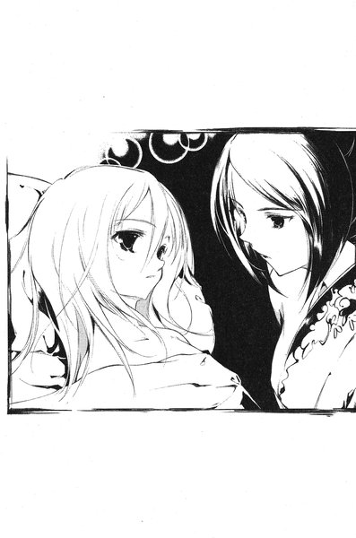
先月の「ヒトリムシ」との戦いで分かったことがある──戦いのさなかに一度葉が意識を失えば、彼女は自分から目を覚ませなくなる。そうなれば、カゲヌシを抑える者はいなくなる。
『いいえ。ただ、昼間会ったあの人間を助けるつもりなら、もう一度戦う必要があるでしょう。あの人間は、あの鳥を手放しそうもないですからね』
確かに天内茜の誤解は解けたようだったが、それですべてが解決するわけではない。葉の目的は、彼女の解放にあるからだ。
『あの鳥は、本来であればさしたる力を持ちません。知能も発達していない。だから、あの人間が覚醒している限りは、完全に支配下に置かれることになります。私たちが苦戦を強いられたのはそのためです』
葉は「黒の彼方」が負わされた傷のことを思った。カゲヌシが本来の力を発揮するには、あの天内茜のようにカゲヌシを完全に支配下に置くか、あるいは意識を乗っ取られることで支配下に置かれるかのどちらかしかないのだ。
『契約を結びなおすことができますよ』
と、「黒の彼方」は囁いた。
「......どういうこと？」
『正確には新しい契約を付け加えます。私を呼び出すのと同時に、条件つきであなたの意識を遮断します。その代わり、戦いが終わったらあなたに肉体を明け渡す。時間による制限をつけてもいい......契約者のほとんどはやっていたことです』
「......」
最終的に以前の契約者たちがどうなったのか、「黒の彼方」は語ったことはない。自我を食い尽くされたのか、あるいは死んだのか。
『悪い話ではないでしょう？ あなたもいやな戦いに参加しなくとも済みます』
畳みかけるように「黒の彼方」は言う。聞いている限りでは、妥当な提案のような気もする。
「本当に約束を守るの？」
いくぶん、弱々しく葉は尋ねた。
『わたしたちの種族は、名を与えた契約者との契約に縛られます。それを違えることは絶対にできないのです。契約者が契約者であり続ける限り、それは変わりません。現にわたしはあなたが名を呼ばなければ、決して現れることができない』
おかしい、と葉は思った。この話にはなにか裏がある。安易に頷いてはいけない気がする。
『わたしも存分に力を発揮できる。弱点を補うには十分です』
葉ははっと昼間のことを思い出した──「黒の彼方」は彼女の制止にもかかわらず、何度も人間を襲おうとしていた。
「人を殺すつもりでしょう」
相手は答えなかった。しかし、かすかに惜しむような気配が伝わってくる。葉が眠ってしまえば、「黒の彼方」は契約者である人間を襲って、効率的にカゲヌシを仕留めることができる。
「そんなことできない」
『それでは、あなたも目的を達することはできません。わたしが傷つけば、あなたも苦痛を味わいます。それが重なれば、いずれにせよあなたは意識を失う。私は良心的な提案をしているつもりですが』
葉は黙っていた。実際、昼間はもう少しで気を失うところだった。そうなっても、「黒の彼方」は葉を乗っ取ることができる。ヒトリムシと戦って意識を失った時は、裕生が名前を呼んでくれた。一度「黒の彼方」に乗っ取られた葉を、目覚めさせることができるのは彼だけだろう。
『次の戦いまでに、考えておいて下さい』
「黒の彼方」の声が遠ざかっていった。カゲヌシにとりつかれた人間を助けるためには、戦わないわけにはいかない。しかし、今のままでは戦っても勝てない。
（......裕生ちゃん）
彼女は体を丸めて呼びかける。裕生に会いたかった。彼がそばにいてくれれば、不安も薄れるような気がする。しかし、彼にそう告げる勇気はなかった。裕生は優しいから断りきれないだけで、本当は迷惑かもしれない。その思いが足をすくませる。
（裕生ちゃん）
外ではまだ雨が降り続いていた。
４
裕生は玄関先で立ち止まった。なんとなく葉に呼ばれた気がした。
「どうしたの？」
廊下に立っていた茜は振り返る。
「なんでもない......と思う」
気のせいだろう。裕生は玄関に入ってドアを閉めた。
「おじゃまします」
靴を脱いで廊下に上がると、湿った埃の匂いがかすかに漂っていた。あまり掃除をしていないのか、人の気配がしない家だった。裕生はどこかでここと似た部屋に入ったことがある。
（......雛咲の部屋だ）
葉が住んでいる団地の部屋に似ていた。裕生は廊下の真ん中で立ち止まる。目の前に茜が入っていったドアがある。勝手に奥に入るのもよくない気がして、裕生はそのドアを開けようとする。その途端、
「今、着替えてるからちょっと待ってて」
くぐもった声が聞こえて、裕生は電気に触れたようにあわててノブから手を離した。
「適当に見てていいよ」
適当に、と言われても困る。裕生は奥のリビングへ行こうとして、ふと足を止める。
開いたドアから、ベッドと机とチェストが見える。女の子の部屋らしい。出窓の上にぬいぐるみが並んでいる。気になったのは、ぬいぐるみに見覚えがあったからだ。
「......ボルガ」
と、裕生は呟いた。茜と一緒にいるカゲヌシに、このキャラクターはよく似ていた。そういえば、テレビで見たことがあるような気がする。昔のアニメのキャラクターだった気がする。
裕生は部屋の中に一歩足を踏み入れようとして、かすかな異臭を嗅いだ。見下ろしたフローリングの床に、テープで人型が描かれていた。
思わず裕生は後ずさりする。背中が総毛立っていた。
「そこで、小夜が死んでたの」
背後で声が聞こえて、裕生は振り向いた。Ｔシャツとジーンズに着替えた茜が立っている。ここは人が殺された場所だと改めて裕生は実感した。茜はそのただ一人の生存者なのだ。
「現場検証の後も、警察の人に言って残してもらったんだ」
裕生は床から目を逸らすことができなかった。右手を軽く挙げたような体勢だった。中学生にしても、さほど背は高くなかったらしい。その時の様子が生々しく目に浮かぶようだった。
「そこにね。小夜の血で書いてあったんだ。『お前のかわりに、わたしが死ねばよかった』って」
裕生は東桜大学で茜が口にした質問を思い出した。なにを意味しているのか、彼女も知らないのだろう。
「犯人が書いたの？」
「多分ね」
淡々とした声で茜は言った。
「あたし、犯人は絶対に殺す」
茜はこのマンションで起こった事件について、知っていることを話してくれた。裕生も先月加賀見で起こった出来事を順を追って話した。会ったばかりの人間に葉の秘密を話していいものか迷ったが、もう茜には「黒の彼方」を見られている。隠しておいても意味がなかった。
「じゃあ、裕生ちゃんたちも大変だったんだね」
話を聞き終えた後で、茜は頷きながら言った。
「......裕生ちゃん？」
「だって名前、藤牧裕生でしょ。だから裕生ちゃん。ダメ？」
「あんまり......」
「じゃ、それでいいよね」
「......」
少し人の話を聞かないところはあるものの、天内茜は決して悪い人間ではなさそうだった。激しく違和感を覚えたが、呼び方のことは諦めて裕生は話題を変えた。
「その写真、お父さんとお母さんだよね」
二人は仏壇のそばに座っている。家族のスナップ写真が仏壇に飾られているが、位牌は一つだけしかない。彼女の両親は「行方不明」ということになっているからだろう。
「天内さんはお父さん似なんだ」
彼女の父親は背が高く、眼鏡をかけていることを除けば顔立ちは茜によく似ている。しかし、茜はかすかに眉をしかめた。
「そうかな......まあ、性格はあんまり似てなかったと思うけど」
沈黙が流れた。あまり父親のことは話したくないらしい。そのことには触れない方がよさそうだった。
ふと、茜はジーンズのポケットから丸いものを取り出す。大学の屋上て裕生が渡した鉄球だった。
「さっき返すの忘れちゃったから」
裕生は手を伸ばしてそれを受け取ろうとすると、茜が付け加えた。
「それ、人間の目のオブジェだと思うよ」
「えっ」
裕生は思わず手のひらから落としそうになった。ただのいびつな鉄球にしか見えなかったが、言われてみれば大きさといい形といい人間の目にそっくりだった。
「この犯人は、何年か前から色んなところで女の子を殺してるかもしれないの。その中には、目を持っていかれた人もいるんだって......目になにか執着があるのかもしれないって、警察は言ってた」
裕生はぞっとした。彼女は家族が死んだ晩、二つの卵を見たと言っていた。一つは犯人のもとに来た卵なのだろう。犯人もカゲヌシの契約者なのは間違いない。話を総合すると、殺人鬼がカゲヌシと契約してしまったということになる。
「あたしもあの時、ボルガがいなかったらなにされてたか分からないと思う」
と、茜が言った。
「犯人のカゲヌシはパパとママを......食べたけど」
一瞬、茜は言葉を詰まらせる。声が震えていた。
「小夜の体にはなにもしなかったし、あたしも殺さなかった。きっと、殺せなかったんだよ。ボルガが守ってくれたんだと思う」
そうかもしれないが、裕生はそこまでカゲヌシを信用することはできなかった。一ヶ月前に戦った「ヒトリムシ」は、契約者の精神を乗っ取ってしまったし、葉にとりついている「黒の彼方」もそうしようとしている。
「でも、カゲヌシは人間を襲うんだよ」
「この子は大丈夫。時々、機嫌の悪そうな時はあるけど、あたしがそんなことさせない。他のカゲヌシはよく知らないけど、この子はあたしの味方だよ」
確かに昼間の戦いでは、ボルガは完全に茜の支配下に入っているようだった。葉と違って、途中で戦いをやめさせることもできた。しかし、カゲヌシが人を食うのは習性のようなものだと思っていた。
「そういえば、ボルガって、妹さんの部屋にあったぬいぐるみにそっくりだね」
「そっくりだと変なの？」
「そうじゃないけど......」
異世界から来たカゲヌシが、最初からあのキャラクターの姿だったとは思えない。カゲヌシは契約者の意志に応じて、形態を変えることができる。あの「ヒトリムシ」もそうだった。おそらくボルガもそれで姿を変えたのだろう。
「最初からこの形だったし。『ボルガ』ってあれの名前だけど、妹もあたしも好きなの。誕生日のプレゼントに、小夜からボルガのぬいぐるみもらうはずだったんだ」
茜の「ねがい」は、妹を殺した者への復讐なのは間違いない。多分、このボルガは彼女の「ねがい」の象徴なのだろう。
「ボルガにとりつかれてから、体調がおかしくなったりしない？」
茜は不思議そうに裕生を見る。
「どういうこと？」
「どうって......雛咲はたまに発作みたいなものに襲われるみたいだから」
うーん、と言いながら茜は首をひねった。
「たまに頭とかお腹が痛くなったりするけど、それがそうなのかな。でもあたし、もともと生理痛ひどいよ」
「......」
裕生は顔をしかめた。そんなことを言われても、どう反応していいか分からない。
「ねえ、あの雛咲って子はこの子を殺そうとしてるんだよね？」
「......うん。まあ、そういうことになるけど」
「ダメ」
茜はきっぱり言った。
「この子はなんにも悪いことしてないよ。悪いことできるほど、頭もよくないし」
彼女はボルガをペットのようなものだと考えているらしい。そんな生易しいものではないと裕生は思うが、はっきり否定できるほどの確信があるわけではない。彼が会ったことのあるカゲヌシは、このボルガを含めて三匹しかいなかった。
「あの大学にもう一匹カゲヌシがいるわけだよね。その目玉のオブジェ持ってた奴」
彼女の言葉に、裕生は頷いた。
「そいつは多分、うちの家族を殺した犯人」
裕生はもう一度頷く。茜はにっこり笑った。
「じゃあさ、あたしが協力すればいいんじゃない」
「協力？」
「雛咲って子はカゲヌシを殺す！あたしは犯人を殺す！どうこれ？」
「ちょっと、それは」
茜がカゲヌシにとりつかれている状況はなにも変わらない。第一、契約者が死んでしまっては、葉がカゲヌシを殺す意味がない。
「犯人だったら、警察に連れていった方がいいと思うんだけど」
「証拠もないのに？ それにカゲヌシと一緒にいる人間を、警察が捕まえておけるはずないよ」
裕生は言葉に詰まる。確かに彼女の言うとおりだった。「カゲヌシにとりつかれている」というのは、なんの証拠にもならない。
「でもだからって殺したりしたら、ぼくたちも人殺しになる」
「殺すのはあたし。裕生ちゃんたちは関係ない。それに、あの犬っぽいのは、カゲヌシが近くにいても分からないでしょ。あたしらと協力した方が絶対いいと思うけど？」
茜は笑顔で彼を見ている。裕生は思考をめぐらせた──ここで協力を断っても、彼女は一人で東桜大学で犯人を捜すはずだ。それなら、自分たちも一緒にいた方が、まだいいような気がする。それに茜が犯人を殺すのを止めるなら、その場にいなければならない。
「......うん。そうだね」
葉には明日迎えに行った時に話そうと思った。
「じゃあ、握手」
返事を待たずに茜は裕生の手を握った。そして、
「ボルガ！」
と、いきなり叫んだ。彼女の足元から、青い塊がにゅっと飛び出してきた。
「うわっ」
思わず裕生は飛びのいた。気がつくとダイニング・テーブルの上に、大きな青い鳥らしきものが乗っている。どこまでが首なのか分からない、ずんぐりした体つきはふくろうに似ている。迫力のないくりっとした瞳が裕生のすぐ目の前にあった。
「あいさつしなさい」
茜が命じると、ボルガは翼を畳んだまま、体を前後に揺らした。どうやら、おじぎをしたつもりらしい。
「よろしく！」
と、言ったのはもちろん茜の方だった。裕生は彼女に見えないように、かすかにため息をついた。
５
かすれた口笛が流れている。
玉置梨奈は目を開いたが、広がっているのは暗闇だった。体に心地よい疲労が満ちている。指一本動かすのも億劫だった。
口笛に混じって、雨音が聞こえた。
梨奈は昼間の彼との出会いを思い出した。大学のそばの喫茶店で話しかけられて、一緒に店を出たのは憶えている。彼に連れられるまま、長い距離を一緒に歩いた。彼の車にも乗ったかもしれない。
最後に古い家に入った。尖った屋根の小さな家だった。それから──。
それからどうしたんだろう。
「目が覚めた？」
柔らかい声が彼女の耳をくすぐった。
「動かない方がいいと思うよ。疲れてるだろうから。あんな大声を出すなんて思わなかったな」
梨奈は恥ずかしくなった。大声を出すようなことをしたのだろうか。言われてみれば、したような気もした。今、ベッドの中にいるのはなんとなく分かった。冷気に肌が直接触れている。彼女は服を着ていないようだった。
もう夜になっている。家に帰らなければならない。起き上がろうとすると、むきだしの肩を押しとどめられた。
「おとなしくした方がいいよ」
と、彼は優しく言った。
「ケンをきったからね」
なんのこと、と彼女はぼんやり思った。もやがかかったように、頭がはっきりしない。
「旧約聖書に出てくるアブサロムは知ってる？」
突然、彼は問いかけてきた。知らない、と彼女は言おうとする。しかし、舌がもつれているのか、うまく言葉にならなかった。
「アブサロムはダビデの息子。さっき、ダビデの星の話はしたよね」
彼女は暗闇の中で頷いた。それについてはさっき彼から説明を聞いた気がする。大学の校門に描かれていた落書きの話をした時だ。彼の話では「ダビデの星」と呼ばれるマークなのだそうだ。
「ゴリアテを倒したダビデは、成長してイスラエルの王になった。ダビデ王には大勢の息子がいたけれど、彼が最も愛したのはアブサロムだった」
彼の右手に、不意に力がこもった。痛みを感じるほどではなかったが、相変わらずいくら目を凝らしてもその姿は見えなかった。
「アブサロムほどその美しさを称えられた者はいなかったけれど、彼は残忍な性格だった。自分の兄弟を殺し、一時は追放までされている。結局、イスラエルの民衆を扇動して、ダビデ王に謀反を起こした。はっきりした理由は聖書には書かれていない。あまり意味なんかなかったのかもしれないな」
なにがおかしいのか、そこで彼はくすりと笑った。
「追いつめられたダビデ王は、マハナイムまで逃げなければならなかった。でも、結局アブサロムの謀反は失敗して、ダビデ王の家来に殺される。その知らせを聞いたダビデ王は、自分を殺そうとした息子のために嘆き悲しむんだよ」
彼の右手はひどく冷たかった。その冷たさが、彼女の体の中に染みこんでくるようだった。
「聖書によれば、ダビデ王はこう言って泣き叫ぶんだ。『わたしの息子アブサロムよ、わたしがお前に代わって死ねばよかった。アブサロム、わたしの息子よ』」
その言葉が合図のように、彼女の胸に言い知れぬ不安が広がった。ここにいてはいけない。さっきもそう思った気がする。はっきりと憶えていないが、ここでなにかがあった。
彼女は彼の手を払いのけて、上体を起こす──素早く起き上がったつもりなのに、水をかき分けているように体が重い。体を起こすのをあきらめて、ごろんと横に転がった。その時ようやく、ベッドのシーツが濡れていることに気づいた。まるで水に浸したようだった。
シーツが途切れて、彼女は床に落下する。衝撃とともに、がん、と金属音めいた音が響いた。痛みは感じなかった。
彼女が横たわっているのは、ごく普通のタイルの床らしい。膝をついて立ち上がろうとしたが、足に力がまったく入らなかった。それに、右腕の感覚がまったくない。
「無理だよ」
と、彼の声が聞こえた。
「さっきも言ったけど、両足の腱を切ったからね」
ぱちっと火花が散るように、梨奈の頭の中で記憶が瞬いた。一瞬だけ浮かび上がったその光景の中で、彼女の右のかかとには深々とナイフの刃が食いこんでいた。左のかかとは切り倒されかけた立ち木のように、ぱっくりと裂け目が入っていた。
あれは本当に起こったことなのだろうか。彼女には信じられない──いや、信じたくなかった。
「記憶の混濁が起こっているんだよ。自分がなにをされたのかも忘れているようだし......さっき、あんなに大きな悲鳴を上げていたのに」
彼女の体が小刻みに震え始めた。ここでわたしは彼になにかをされた。彼女は不自由な体で這いずろうとした。しかし、足首から下はまるで重い袋をくくりつけられたようだった。
「痛覚も麻痺しているようだね」
ぎしっと床が鳴って、彼が近づいてくる気配がする。彼女は口を開けた。助けて、と叫んだつもりだった。しかし、唇からもれたのは、動物が鳴いているような奇妙な声だけだった。
「声は出ないよ」
右手には全く感覚がない。彼女はかろうじて自由になる左手で、自分の口に触れる。彼女の口は塞がれているわけではなかった。唇も自由に動く。ただ、口の中は空っぽだった。舌のあるべきところには半ば固まりかけた血の塊があるだけだった。
「ぼくの父は牧師だった」
彼は彼女の上半身を抱き起こした。そして、彼女の背中に腕が回され、耳元に冷たい唇が押し当てられた。
「『アブサロム』というのはね、父がぼくにつけたあだ名だった。『アブサロム』。それを知った時から、それがぼくの『ねがい』の名前になった。ぼくの分身の通り名」
彼女は両目をいっぱいに見開いている。しかし、目の前を覆っているのは暗闇ばかりで、彼の姿を見ることはできなかった。
「目を開けなくてもいいんだよ......見ることはもうできない」
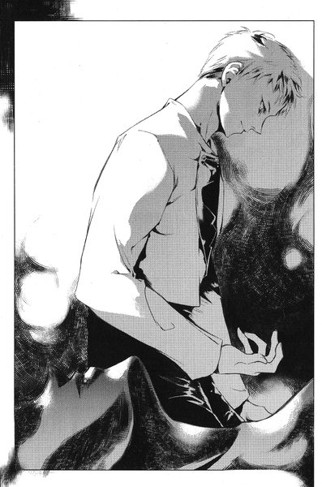
優しい声につい頷きそうになってから、彼女は自分の耳を疑った。
「最初に舌を切り取った。その後で両足の腱を切った。最後に目を奪ったんだ」
彼女の震えはますますひどくなっていた。両目や両足や喉の奥から、忘れていた激痛が蘇りつつあった。それは巨大な津波のように、あっという間に彼女の意識を呑みこんでいった。どうしてこんなことをしたの、と彼女は見えなくなった目から涙を流しながら思った。あたしがなにをしたの。
「君はとても綺麗な目をしていた。人間の目以外のすべては醜い。だから、ぼくたちはそこから解放してあげただけだよ」
ぼくたち、という言葉の意味を考える余裕は彼女にはなかった。彼女の体は最後の痙攣を起こしていた。
しかし、最後に囁かれた言葉だけは聞き取ることができた。
「もうこれで地獄に投げ込まれることもないよ」
６
明け方に雨は止んだが、晴れ間は見えなかった。
裕生がやって来るのが見えた時、ツネコの店の前で待っていた葉は思わず駆け寄ろうとした。しかし、一緒に現れた天内茜の姿に戸惑って足を止める。
「おはよう、雛咲」
と、裕生が言った。
「おはよー。元気になった？」
天内茜が笑顔で言ったが、葉は答える気になれない。昨日、「死ね」と言い放った時と同じ笑顔だった。
朝になると、葉の体調は元に戻っていた。ツネコの店から裕生の携帯に電話すると、裕生は「ちょっと話があるから、今から行く」とだけ言って切ってしまった。
「......どういうことですか？」
と、裕生に向かって尋ねる。
「昨日、天内さんと会って話したんだけど」
「だから茜でいいってば」
と、彼女は口を挟む。なれなれしい、と葉は思った。なんとなく胸がざわざわする。
「あたしが二人を手伝うって話になったの」
茜が手短に説明する。東桜大学には茜の家族を殺したカゲヌシがいるらしい。それを倒すまで、彼女とボルガが葉たちに協力する。ところどころで、「あたしは犯人を殺すから、二人はカゲヌシの方をやっちゃって」などと物騒な説明が入った。そのたびに裕生がなにか言いかけるのだが、結局彼女はほとんど口を挟ませなかった。
「昨日の晩、あたしらの間でそういう感じにまとまりました」
と、茜が胸を張る。葉は黙っていた。どうも茜を信じる気になれない。それに彼女の関係ないところで、裕生が話を進めてしまったのが不愉快だった。「黒の彼方」の契約者は自分なのに。
（......昨日の晩）
と、葉は心の中で呟いた。
「先輩、どこに泊まったんですか」
葉はあくまで裕生に話しかける。しかし、裕生が口を開きかける前に、
「あたしんちです。行くところないみたいだから、泊めてあげたの」
と、茜が答えた。
「結構、二人で遅くまで起きてたよねー」
茜は「ねー」のところで、裕生に向かって首をかしげる。カールした髪がふわっと揺れた。うん、まあ、と戸惑ったように裕生も頷いている。
葉の頬がぷくっとふくれた。
（心配してたのに）
その表情の変化に、茜が目を瞠った。
「あれ、ひょっとして気にしてる？ 言っとくけど、一緒の部屋で寝たわけじゃないよ。小学生じゃないんだし。なんかされたらあたしもいやだし」
「そ、そんなことするわけないだろ」
慌てたように裕生が言った。
「......」
葉の顔がかっと赤くなる。裕生と茜になにかあると思ったわけではなかった。
（......小学生）
一昨日の晩、藤牧家に泊まろうとした時、「裕生と一緒の部屋で寝る」のがまさに葉の望みだった。「お前は小学生だ」と面と向かって言われたようでショックだった。葉はまじまじと茜を見る。青い花柄のミニのワンピースがよく似合っている。背も高いしスタイルもよかった。茜と比べれば、確かに自分は小学生と言われても言い返せない気がする──別に本当に言われたわけではないのだが。
（小学生）
むすっとした顔で立っていると、裕生は彼女の腕を取って茜から少し距離を置いた。そして、聞こえないように小声で話しかけてきた。
「雛咲が疑うのも分かるけど、一緒に行動した方がいいと思う。ぼくもあの人のこと、全面的に信じてるわけじゃない。でも、雛咲の役に立つのは確かだよ」
裕生はどうやら、葉が単純に茜を信用していないと思っているらしい。
「『黒の彼方』は、敵の場所が分からないけど、あの人がいればそれも心配ない。それに本当に東桜大学に犯人がいたとしたら、あの人本気で犯人を殺しかねないよ......昨日のこと考えると。そうなったら誰かが止めなきゃならないし」
「......」
納得のいく説明だったが、葉は裕生の話に集中できなかった。二人のいる場所から、茜が退屈そうに立っているのが見える。葉は「わたしは子供っぽいですか」と裕生に聞いてみたかった。しかし、そんな質問自体が子供っぽいことも分かっている。
言いたかったことを葉はぐっと呑みこんだ。とにかく、そんなことを気にしている場合ではない。
分かりました、と言おうとした時、
「ねー、裕生ちゃん、話終わった？」
葉ははっと息を呑んだ。
「......裕生ちゃん」
昔、葉が使っていた呼び名だった。今は口にしないように我慢している、彼女にとっては大事な言葉だった。
（どうしてその名前で呼ぶの）
全然親しくもないくせに。会ったばかりのくせに。
「雛咲、どうかした？」
裕生が不思議そうに葉の顔を見ている。雛咲、と呼ばれるのが無性に悲しかった。どうしてあんななれなれしい人と一緒にいられるんだろう。
（ひょっとして、本当に仲がよくなったのかも）
胸がずきりと痛んだ。
「いやです」
自分でもびっくりするような、硬い声で葉は言った。裕生は目を瞠った。
「わたし、一人で行きます」
「え？ なに言ってんの、雛咲」
雛咲、と呼ばれるたびに腹が立った。
「先輩はあの人とどうぞ！」
葉は駅の方に向かって走り出した。その背中に裕生の声が突き刺さる。
「雛咲！」
その呼びかけに、ますます彼女は足を速めて大通りへ出て行った。
裕生は慌てて葉の後を追った。新大久保の駅の改札に彼女の姿は見えなかった。ＪＲに乗ったわけではないらしい。裕生は完全に葉を見失っていた。
追いついてきた茜に裕生は尋ねた。
「雛咲がどこに行ったか分かる？」
茜なら居場所が分かるはずだ。彼女は意識を集中するように目を閉じた。
「......結構、遠くに行っちゃったよ。タクシーつかまえたんじゃない」
裕生はため息をついた。どうして葉が突然怒り出したのか、彼にはわからなかった。
「どうしたんだろ」
なにか自分が傷つけるようなことを言ったのかもしれない。裕生が考えこんでいると、そばにいた茜が呟いた。
「かわいいねー、あの子。裕生ちゃんは幸せだ」
「え？」
「ううん。なんでもない。大丈夫だよ。あの子も東桜大学に行ったんでしょ。あたしたちも追いかけようよ」
茜の言葉に、裕生も頷いた。「一人で行く」と葉は言っていた。行き先は東桜大学のはずだった。
７
タクシーを降りた葉は、東桜大学の正門の前に立っていた。今日も休日ではないはずだったが、鉄格子の門が閉ざされている。
「構内施設点検のため、関係者以外立ち入り禁止」
という貼り紙があった。構内にはほとんど人の姿はないが、何人もの制服警官が歩いているのが見えた。昨日、自分たちがボルガと戦ったせいに違いない。給水タンクの蓋が外れて、そこから大量の霧が噴き出したのだから、騒ぎになるのは当然だった。単なる事故ではなく、事件の可能性も疑われているのかもしれない。
葉は向きを変えて、横断歩道を渡った。道路の反対側は、小高い土手が続いている。桜並木の続くちょっとした遊歩道になっていた。彼女は石造りの階段を上がって、東桜大学の正門が見下ろせる場所に立つ。大学が閉鎖されていることを知らない学生たちが、時々やって来ては回れ右をして去っていく。
これでは大学にいるというカゲヌシなど探しようもない。用事がないのなら、本当はこの場所から離れたかった。もうすぐ裕生たちが来てしまうはずだ。子供のような態度をとった自分が恥ずかしかったし、裕生と顔を合わせて「なんであんなことしたの」と質問されたら、どう答えていいか分からなかった。
（わたし、迷惑ばっかり）
時々、葉は裕生に「黒の彼方」のことを知られない方がよかったかもしれないと思う。そのことを考えると胸が苦しくなる。
裕生が一緒にいてくれなければ、本当にどうしたらいいか分からない。しかし、裕生を危険にさらしている。もちろん、彼に話せば「そんなこと気にしなくていい」と言われるのは分かっている。もし、「黒の彼方」にとりつかれていることが分かった時、加賀見からいなくなっていれば、裕生はずっと自分を心配し続けただろう。
ただ、迷惑をかけるのと、心配をかけるのはどちらがいいことなのだろう。裕生が考えなくてもいいことに、彼を巻きこんでいることには変わりは──。
（......ちがう）
葉は首を振った。本当はそれだけではない。自分一人だけのことにしておきたかった理由は他にもある。「黒の彼方」を裕生に見てほしくないのだ。カゲヌシに裕生を関わらせれば関わらせるほど、自分が人間ではない部分を見せつけている気がする。
彼女が恐れているのは、これから先のことだった。今は裕生は葉のそばにいてくれる。しかし、「黒の彼方」はゆっくりと彼女の意識を食い尽くしていく。どこかで、葉が葉でなくなる瞬間が来るかもしれない。今のままでは、それを真っ先に裕生に見せてしまうことになる。それがなによりも怖かった。
葉は物思いに沈んでいた。まっすぐ自分に向かって歩いてくる男に、まったく気づいていなかった。
「今日は一人なんだね」
柔らかい声に振り向くと、驚くほどきれいな顔立ちをした背の高い男が立っていた。年齢は二十代の前半というところで、白いシャツにほとんど同じような淡い色のパンツを身に着けている。周囲の空気に溶けているように、輪郭がはっきりしなかった。
「......あの」
「ぼくが誰なのか分かる？」
「いいえ」
と、葉は答えた。そういえば、昨日大学の門のあたりで会った気がする。
「ぼくも君をよくは知らない」
と、彼は言った。
「でも、君に取りついているもののことは知っているよ」
「えっ？」
「......君に取りついているのが『同族食い』だね」
葉ははっと息を呑んだ。それを知っているということは、この男はカゲヌシの「契約者」に違いない。彼女は距離を置いて身構える。必要があれば、いつでも「黒の彼方」を召喚するつもりだった。
男の姿かたちには、普通の人間と変わったところは何もない。葉にはこの男がカゲヌシに取りつかれているかどうか、判断はできなかった。
「君がここに来たのは、誰かがぼくの居場所を知らせたからかい？」
「違います」
と、葉は答えた。
「今日は天内茜と一緒じゃないのかな？」
この男はどうして天内茜が葉に協力を持ちかけたことを知っているのだろう。彼女の顔色が変わったことに気づいたのか、彼は微笑んだ。
「カゲヌシはね、知能が高ければ高いほど、感覚が鋭い」
と、男は言った。
「つまり、天内茜たちよりも、ぼくたちの方が五感が優れているんだ。昨日、君たちが戦ったのは知っている。戦いが終わっても、どちらのカゲヌシも生きていた。多分、ぼくを追いつめるために協力することにした、そんなところだろう？」
「あの人の家族を殺したんですか」
天内茜の話が本当なら、目の前にいるこの男が、三人の人間を無残に殺したことになる。しかし、男は首を振った。
「残念だけど、ぼくが彼女の家族を殺したわけじゃない。いや、ぼくであってぼくではなかったと言うべきかな。ぼくの分身が殺したんだ」
男は言葉を切る。葉は「ヒトリムシ」にとりつかれた志乃を思い出した。彼女はカゲヌシに精神を乗っ取られて、何人もの人間を殺すことになった。この男も似たような状態にあるのではないだろうか。
「あなたからカゲヌシを引き離します」
葉は男に言った。一匹でも多くのカゲヌシを倒して、人間を助けたかった。しかし、彼は答えない。驚いたように、かすかに目を見開いただけだった。
「ぼくたちはそんなことを望んでいない。完全に意識は一体化しているんだからね......そもそも、君はなにも分かっていないようだ」
「え？」
「静かなところで、君と話をしたい。とても大事な話だ」
行ってはなりません、と葉の中で「黒の彼方」が囁いた。それは葉にも分かっている。この男は危険だ。もう少し待てば、裕生と茜がやって来るはずだ。時間を稼がなければならない。
しかし、葉が口を開く前に男は言った。
「君が一人で現れてくれて好都合だったよ。彼女にも用があるけれど、君とは全く別の用事だからね」
男は胸のポケットからカードを出して、葉に見せた。東桜大学の学生証だった。「社会学部四年玉置梨奈」という名前が印刷されている。
「ぼくたちは昨日、その女を攫った」
葉の背筋にぞくりと寒気が走った。カードは踏みつけられたようにゆがんで、べったりと髪の毛がこびりついていた。
「体の自由を奪って、とある場所に置いてある」
と、男は言った。子供がつかまえてきた虫のことを話しているような口調だった。
「君がぼくたちと一緒に来なければ、彼女の生命は保証できない。あのままにしておけば死ぬだろうね。君は人間が死ぬことに敏感なんじゃないかな」
葉は確信した──目の前のこの男の意識は、完全にカゲヌシに乗っ取られている。話し合いなど無駄なことだった。人質を取られている以上、ここで戦うこともできない。男に従うしかなかった。
「あなたは誰ですか」
彼女の声はかすかに震えていた。
「契約者の名の方は教えられないな。カゲヌシの名は『アブサロム』だ」
男は葉を目で促して、歩き出した。
「......さて、出かけようか」
８
「んっ」
天内茜が小さく呟いて、切符を手にしたまま自動改札口の前で立ち止まる。大学生らしい若い男が、邪魔だと言いたげな顔つきで隣の改札から外へ出て行った。
「どうしたの？」
と、後ろから裕生が尋ねる。茜は無言のまま切符を改札口に入れて、出口へ向かって走り出した。
慌てて後を追った裕生は、外へ出る階段の下で茜に追いついた。
「あの子の近くに誰かいる」
「誰かって？」
しかし、茜は答えずに不安定なサンダルで階段を駆け上がっていった。
駅の階段を出ると大通りにぶつかる。広い横断歩道をはさんで、道路の反対側に東桜大学に併設する教会の建物が見える。教会の脇の狭い道を進むと、大学の正門にたどり着くはずだった。
外に出た茜は、どう見ても赤信号の道路に飛び出していこうとする。
「危ない！」
思わず裕生は彼女の腕をつかまえた。半分車道に降りかけていた茜の右足が宙に浮く。
「なにすんの！」
「今行ったら轢かれるよ」
四車線の広い道路を、車がひっきりなしに通っている。飛び出したら事故に遭うのは間違いなかった。
「なに言ってんの。あの子、どんどん遠くに行ってるんだよ。他のカゲヌシと一緒に」
「え......」
裕生は絶句した。誰か、というのはカゲヌシのことだったのだ。確かにそうでなければ茜に分かるはずがない。
（追われてるのかもしれない）
彼女が相手の存在に気づいているならまだいい。もし、追われていることにも気づいていなかったら、彼女の命が危ない。「黒の彼方」は五感が鈍い。
「......雛咲」
反射的に車道へ飛び出そうとした裕生のすぐ鼻先を、トラックが走り抜けていった。
「ちょっと！」
今度は茜の方が裕生をつかまえた。
「なにやってんの！ 危ないって！」
裕生は我に返った。自分が行ったところでなにができるというわけではないのだが、葉が危ないと思うと冷静ではいられなかった。
（くそっ）
彼の目の前の車道を、何台もの車が連なって通りすぎていく。信号が変わるまでは、道路を渡れそうもなかった。
「アブサロム」と名乗った男は、道端の一台の黒いワゴンの前で足を止めた。
「これに乗ってもらえるかな」
男は葉を振り返る。少し離れてナンバープレートを見ていた葉は、慌てて目を逸らした。
「無駄だよ」
と、男は笑いながら言った。
「この車は盗んだものだし、念のためナンバープレートも他のものに換えてある」
葉は黙って車に近づいた。この男について分かっていることと言えば、外見だけだった。
（......でも、顔は見せてる）
名前も名乗らない。行き先も告げない。移動手段にも念を入れている。それなのに、なぜか目の前に現れた。もし、東桜大学の学生か職員なら、外見から特定できてしまうはずだ。彼女の存在を察知できるのであれば、顔を見せずに連絡をする方法もあったはずだ。
恭しく男が助手席のドアを開けた。
「どうぞ。ぐずぐずしていると、追いつかれてしまう」
彼女は一瞬足を止めそうになった。やはり、裕生と茜が追ってきているのだ。彼女もこの「アブサロム」の存在に気づいているかもしれない。しかし、この男の方も彼女の存在を察知できることになる。
今は従うしかない。葉は男を警戒しながら、背を屈めて助手席に入ろうとする。
「えっ」
シートの上に落ちている灰色のものに、彼女の目は吸い寄せられた。例の丸い球体だった。
（どうしてここに）
藤牧雄一が拾ったというあの鉄球は、今は裕生が持っているはずだった。似てはいるが、別のものなのかもしれない。そう思った瞬間、葉は後頭部に重い衝撃を感じた。目の前が暗くなる。奇妙な冷静さで、殴られた、と思った。
『わたしを呼びなさい』
と、「黒の彼方」の声がする。しかし葉は従わなかった。「黒の彼方」を呼び出せば、自分の身を救うことはできるかもしれない。しかし、呼び出した後に彼女が気絶してしまえば、「黒の彼方」を制御することはできなくなる。
（......いや）
人間を殺してしまうかもしれなかった。誰かに体を支えられた感触がある。しかしそれもつかの間で、彼女は完全に意識を失ってしまった。
車道の信号が赤に変わる。車の流れが途切れかけていた。
「......まだ動いてない？」
と、裕生は茜に尋ねる。茜が言うには、葉たちは横断歩道を渡ったずっと先のほうで、一度止まったということだった。
「うん......あ、ちょっと待って。また動き出した。急いだ方がいいかも」
その瞬間、横断歩道の信号が青に変わる。道路の両側でせき止められていた人々がゆっくりと動き出した。裕生はその先頭を切るようにして飛び出した。
（雛咲）
頭の中は遠ざかっていく葉のことでいっぱいだった。異変に気づくことができたのは、横断歩道を半ば渡ってからだった。背後から茜の声が聞こえた気がした。
振り向くと茜はまだ歩道の上で、腰に手を当てたまま立っていた。その脇を横断歩道を渡る人々がすり抜けていく。
「なにやってるんだよ！」
さすがに裕生は大声を出した──葉が移動している、と言ったのは茜だったはずだ。さっきは彼女も道路に飛び出しそうだったのに。
「急がないと......」
裕生の声が途切れた。茜の顔が苦痛に歪んでいる。青いワンピースの腰のあたりに、丸い染みが広がりつつあった。
「えっ」
茜はぺたんとアスファルトの上に腰を下ろしてしまった。慌てて彼女のところまで駆け戻る。
「どうしたの！」
裕生は自分も膝をつきながら言った。茜はがたがたと体を震わせている。傷口を押さえた指と指の間から、赤いものが滴っていた。
「......多分、刺された」
苦しげな声で茜は答える。
「誰がそんな」
「分かんない......後ろからだったから」
彼は周囲を見回した。茜と自分を立ち止まった人々が遠巻きに見ている。カゲヌシの気配はここから離れた場所にあった。ということは、カゲヌシではない者が茜に傷を負わせたということになる。
（人間の仲間がいるんだ）
にわかには信じられないが、それ以外には考えられなかった。
血で濡れた生地が彼女の足にぺったりと貼りついている。影のように血だまりが広がりつつあった。
「裕生ちゃんは先に行きなよ。早くしないと......」
「でも......」
裕生はためらった。葉が一体どうなっているか気がかりだが、明らかに茜の傷は深い。それに、まだ茜を刺した人間がこの近くにいるのだ。その時、いつのまにか点滅していた横断歩道の信号が赤に変わった。止まっていた車が走り出し、流れが元に戻る。
「......あ」
彼は呆然と道路の反対側を見つめる。その瞬間、がくんと茜が首を折って、裕生にもたれかかってきた。これで自分たちと葉は完全に引き離されてしまった。
（......雛咲）
裕生は歯を食いしばった。彼女を一人にしてしまった自分の馬鹿さ加減が悔しかった。しかし、今は茜を病院に連れていかなければならない。裕生は震える手で自分の携帯を出した。
９
目を開けた時、葉は椅子の中に体を埋めていた。
そこは大きな暗い部屋だった。コンクリート造りの建物の中で、床には薄汚れたタイルが敷き詰められている。右手にはカーテンの閉まった窓があり、わずかな隙間から入ってくる外の光が、部屋の中をかすかに照らしている。照明はついていなかった。
葉は弾かれたように立ち上がる。彼女が眠っていたのは、壁際に置かれた一人がけの大きなソファだった。彼女は長方形の部屋の端にいるらしい。部屋のところどころに、広い部屋を支えるための丸い柱が見える。
よどんだ空気と湿ったコンクリートの匂いが、ここが長い間使われていないことを物語っている。閉鎖されたホールの中にいるようだった。
なにかの動く気配がする。振り向くと、あの「アブサロム」と名乗った男が柱の一本にもたれているのが見えた。
「......つかまっている人は？」
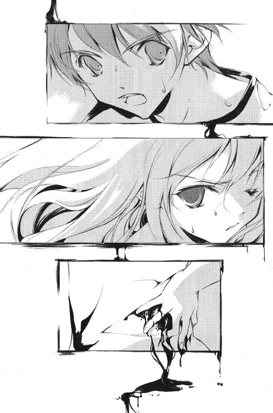
男は部屋の中央を指差す。葉が目を凝らすと、ぼんやりとベッドのようなものが置かれているのが見えた。そこに誰かが眠っているらしい。男は柱から一歩も動こうとしない。自分の目で確かめろ、と言っているようだった。
葉は一歩足を踏み出した。
「あるところに、一人の飢えた少年がいた」
男が口を開いた。葉は振り返ったが、彼は彼女を見ていなかった。彼女がまた一歩進むと、また声が聞こえた。
「少年は自分の飢えがなんなのか知らなかった。少年は自分の飢えに苦しみながら、人並みの生活を送り、人並み以上の深い愛情を受けて成長していった」
葉はもう一度ちらりと男を見たが、もう立ち止まらなかった。ベッドにいる人質の方が気がかりだった。彼女に聞かせてはいるが、男が口にしているのは独り言のようなものだ。
「なんの不満もないはずの暮らしの中で、やがて少年は気づいた。なぜ人並みの生活に満足できないのか？それは、彼が人間ではなかったからだ」
ベッドはなんの飾りもない古いパイプベッドで、誰かが床まで届くほどの大きなシーツを、頭までかぶって横たわっている。葉はシーツをたぐり寄せるように引っ張っていった──やがて、マットレスの上のものが現れた。彼女の手からシーツが落ちる。
「少年は自分がなにに飢えているのかにも気づいた。彼がずっと求めていたものは」
「これはなに？」
震える声で葉は叫んだ。
生まれてから一度も見たことがないものが横たわっていた。そこには全裸の若い女がいた。あの学生証の写真と同じ顔だった。しかし、女の顔も胴体も手足も、どの部分も鈍い光沢を放っていた。
「文字通りの『鉄の乙女』だよ。人質になった彼女だ」
男は笑みを含んだ声で言う。ベッドの上にあるのは、人の形をした金属の精巧な塊だった。今この瞬間にも絶叫しているかのように、大きく口を開いている。葉はその皮膚に触れる。冷たい鉄の感触が伝わってくるばかりだった。
葉は確信した。これが「アブサロム」の能力に違いない。この人を鉄に変えて殺したのだ。まだ生きているかのように言ったのは、葉をおびき寄せるためで──。
突然、葉の背筋を冷たいものが駆けのぼる。女の体が小刻みに震えていた。薄く開いた鈍色のまぶたから、まるで涙のように真新しい血が流れ出した。
「お......あ......」
突然、口の形をした穴の奥から、女の声がかすかに流れてきた。
（生きてるんだ）
葉は悲鳴を上げかけた自分の口を両手でふさいだ。こんな状態だというのに。
「鉄に変えたのは、表面だけなんだ。昆虫みたいに、内臓は柔らかいままだよ。おかげで出血も止まって、今もちゃんと息をしている。肋骨と横隔膜の動きが制限されるから、呼吸に負担がかかるらしいけどね。いずれにせよ、もうほとんど意識はない」
葉はよろよろとベッドのパイプによりかかる。なにかにつかまっていなければ立っていられなかった。
「その少年がずっと求めていたのは、人間の苦痛と死だ。彼は人間に苦痛を与えることを目的とした生物なんだ。彼にとっては捕食、と言い換えてもいいかもしれない」
彼はベッドの前に跪くと、女の右手に自分の手を重ねた。よく見れば、女の全身には無数の傷がある。両足のくるぶしは半ば切り取られかけていた。
「彼は「捕食」を繰り返すようになった。『アブサロム』に取りつかれる前に十四人殺した。警察に疑われたことはただの一度もない。取りつかれた後にも五人殺している。いや」
男の右手を中心に、あっというまに鈍色が覆っていく。ベッドのマットレスも彼女の体と一体化して一つの金属の塊になった。犠牲者の声が途切れ、彼女の目から流れていた血液まで表皮と同じ金属に変わる。
「これで六人だ」
「やめて！」
葉は一歩下がる。「黒の彼方」を呼び出すつもりだったが、彼女が口を開く前に男は素早く動いた。床に落ちていたシーツを広げて彼女にふわりとかぶせる。
一瞬、視界を奪われた葉はすぐにその意図を察した。しかしシーツを振り払う前に、すでに身動きが取れなくなっていた。彼女を包んでいるシーツと、彼女の周囲の床は一体となった金属に変化していた。
「まだ話があるから、君をまだ『鉄の乙女』にはしたくない」
葉は必死に体を動かそうとする。しかし、指一本彼女の自由にはならなかった。まるで自分が一本の立ち木になった気がした。たった一枚の布で「アブサロム」は葉の体を絡め取っていた。
「『同族食い』を呼び出すこともできるけど、ぼくが君の心臓を鉄に変えるほうが速いよ」
ぎしりと音が聞こえる。男はベッドの端に腰かけたようだった。
「これで君もぼくの客だ」
第四章 「アブサロム」
１
その日、彼はトレーニングウェア姿で出かけた。大きめのウエストポーチを身に着けている。
マンションに到着したのは朝だった。出勤や通学に外へ出る住人とすれ違いで、ジョギングから帰ってきたようにマンションに入る。マンションの入り口のオートロックは、ほとんどはこの方法で突破できる。特殊な技能を要する方法はなるべく使わない方がいい。単純な方が露見しにくいからだ。
重要なのは犯行時間に近づいてから建物に入るのを避けることだった。入り口にセキュリティのあるマンションは、一度中に入ればかえって人目は少ない。後は隠れる場所を見つけて、辛抱強く待てばいい。
彼は最上階からさらに屋上に向かう階段の踊り場に身を潜めた。既に標的に対する情報はつかんでいる。労力さえ惜しまなければ、個人情報を調べ上げるのはさほど難しくはない──四人家族。両親と妹と一緒に暮らしている。名前は天内茜。
今日は彼女の誕生日で、比較的早く帰ってくるはずだ。数分前、彼は通学途中の天内姉妹とマンションのそばですれ違っていた。断片的に耳に入ってきた二人の会話では、茜は寄り道をしないよう妹に念を押されていた。
午後七時頃、彼は立ち上がると、階段で五階に降りた。そして「天内」という表札のかかったドアの前に立つ。彼はインターフォンを押した。
「はい」
まだ幼さの残る女の子の声が聞こえる。おそらく、中学生の妹だろう。彼女の姉が中にいるかどうかは確認できなかったが、時間帯としてはいてもおかしくはないだろう。
「こんばんは。このたび四階に引っ越して参りました杉倉と申しますが、ご挨拶に伺いました」
引っ越しの作業中なら、トレーニングウェアは不自然ではない。しかし、最近ではこの方法でもなかなかチェーンを外そうとしない家もある。その場合は計画を中止して、ウェストポーチに入っているデパートの商品券を渡して立ち去るつもりだった。
かすかな足音が近づいてきた。緊張をおもてに出さずに彼は待ち構える。足音が止まる。やがて鍵を開ける音が聞こえた。
「お忙しいところ申し訳ありません」
ドアが開いた瞬間、彼は微笑んだ。チェーンは外されていた。さりげなく靴の先をドアの敷居の中へ差しこんだ。
「......十五歳の時、ぼくは初めて人を殺そうとした」
震えている天内小夜を、彼は見下ろしている。
「君みたいに細い三つ編みをした女の子だ。邪魔が入ったから、一命は取り留めたけれどね」
彼のトレーニングウェアは血まみれで、特に肉厚のハンティングナイフを握りしめた右手は、赤く染め上げたようだった。ただし、指紋が残らないよう両手には医療用のゴム手袋をはめている。
「ぼくの父は牧師をしていた。町の人たちから尊敬される名士だったと思う。でも、ぼくの起こした事件のせいで、牧師の職も辞めざるをえなくなった。ぼくたちは人里離れた家に引っ越した。多分、父はそこでぼくを更正させるつもりだったんだろうな」
小夜は自分の部屋の床に腰を下ろしている。彼女のＴシャツの肩は切り裂かれて、血に染まっていた。致命傷ではないが、おさえた傷口から血が腕を伝っている。
「何ヶ月もぼくは父と話し合ったよ。そんなことをした原因はなんなのか、どうして彼女を憎むことになったのか、ぼくの犯した罪はどういうものなのか......すべては無意味だった。ぼくの行為は原因や憎悪や罪悪といったものとは関係なかったからね。ぼくは自分のねがいを叶えただけだったんだ。それより先に原因なんかなかった」
指先から落ちた彼女の血は、フローリングの上に丸い跡を作っている。彼はそれをじっと見つめていた。
「気が遠くなるほど話し合った後で、お前は悪魔なのかもしれない、とぼくの父は言ったよ。お前は絶対の悪かもしれないってね。多分、あの時にはもう父はもう壊れていたんだろうな。その晩、彼は首を吊って自殺した」
小夜の目はどこも見ていない。悲鳴を上げることも忘れてしまったようだった。リビングとキッチンには、彼女の両親が倒れている。もう始末すべきなのは彼女一人だった。
「彼の遺品の中に日記があった。その日記にはぼくのことばかり書いてあったよ。ぼくの名前のところには『アブサロム』と書かれていた。父は心の中でぼくをそう呼んでいたんだ」
相手が聞いているかどうか、確かめもせずに彼は話し続けていた。
天内茜は不在だったが、小夜の澄んだ目は気に入った。すぐにこの少女を殺して立ち去るべきだということは分かっている。今、この瞬間に茜が戻ってくる事態だけは避けなければならない──しかし、今夜に限っては話を止めることができなかった。
「アブサロムは残忍な性格だった。そんなアブサロムを父親は心から愛していた......自分を殺そうとしたアブサロムのために父親のダビデは泣くんだ。ぼくは人の心のそういう動きが好きだ。自己犠牲と感情移入だよ」
彼は刃を彼女の目の前に突きつけた。ぎこちなく彼女は首を動かして、彼を見上げた。
「死にたくないかい？」
小夜はかすかに頷いた。
「じゃあ、選択肢を与えよう。君を殺さない代わりに、君の姉さんが帰るのを待って彼女を殺す。姉さんを殺さないのであれば、今すぐ君を殺す......どっちがいい？」
彼は小夜の部屋のドアを後ろ手に閉めた。シャワールームに行き、服の上からざっとシャワーを浴びて血を落とす。それからウェストポーチに入っていた別のトレーニングウェアに着替え、今着ている方をしまった。
自分の体を点検する。どこから見ても人を殺したようには見えない。最後に家中を見て回ったが、大きな問題はなかった。床に描いた血文字は天内茜に残したメッセージのつもりだったが、警察の捜査の助けにはならないだろう。自分とあの文章を結びつけるものはなにもないのだから。
「......アブサロムよ、わたしの息子よ」
もう一度彼は呟く。ざわりと彼の胸が騒いだ。
（人間同士の結びつきは濃い）
彼は自分を「人間」だとは認識していなかった。彼には自分の生死を超えて守るべき者はいない。彼を守ろうとする者もいないはずだ──父親が死んでからは。それを思うとまた奇妙に胸が騒いだ。
リビングの明かりを消し、玄関へ向かった。もうここには用事はない。長女の部屋の前を通り過ぎた時、彼ははっと息を呑んだ。
ドアが開いていた。
彼は立ち止まる。この家には三人しかいなかったはずだ。すべての部屋を確かめたのだから間違いはない。彼の気づかないうちに長女が帰ってきたということもありえなかった。
彼は後戻りをして、部屋の中を覗きこんだ。
床の上には、黒い卵が一つあった。さっきまでは確かにそんなものはなかった。彼は部屋に足を踏み入れる。不安も恐怖も感じなかった。その卵は自分を呼んでいる──いや、むしろ彼の呼びかけに応じて現れたような気がした。
ぴしり、と卵の表面にひびが入る。彼の口元に笑みが浮かんだ。中にいるものが現れる瞬間を、不思議な喜びとともに待った。
２
「......そして、彼らは融合した」
と、男が言った。彼は天内家で体験したはずのことを、まるで他人の身に起こった出来事のように話していた。葉は身動きひとつ取れずにその一部始終を聞くことになった。耳を塞ぐこともできなかった。
不意に首から上だけの戒めが取り払われ、葉の視界が晴れる。
「あのままだと、呼吸がしにくいからね」
と、男は言う。手には布の切れ端を握っている。葉の首から上を覆っていた鉄だけを元の布に「戻した」らしい。ベッドの上の女の死体はもうどこにもなかった。
「......あの人は」
「消したよ」
当然のように男は言う。殺した人間の話をしながら、さらに今殺した人間の死体もカゲヌシに食べさせていたのだ。葉は言葉を失った。彼女はさっきまで生きていた。ここにはあの人を助けに来たのに、結局なにもできなかった。
男はベッドの上で、例の鉄球をもてあそんでいた。葉のみぞおちから吐き気がせりあがってくる。「アブサロム」の能力によって変えられた犠牲者の肉体の一部に違いない。よく見ると、ベッドの周囲には他にもいくつもの球体が落ちていた。
「君が気にすることはないよ。どちらにしてもあの女はもう手遅れだった」
葉は「アブサロム」をにらみつける。男はベッドに座ると、笑顔で彼女の視線を受け止めた。
「自分からカゲヌシと一緒になったの？」
「そうだよ。ぼくたちは互いに望んで、自我を融合させた。互いの記憶も完全に共有している。人間を捕食する者同士で、価値観にはなんの衝突もなかった。ぼくたちは」
「わたしに話したいことはなに？」
葉は男の話を遮って尋ねた。これ以上聞いていたくない。
「君の方がどこまで『同族食い』と記憶を共有しているかは分からない。でも、自分たちがあらゆるカゲヌシと敵対する関係にあるのは分かっているだろう？」
「......だから？」
「君たちと協力関係を結びたいんだ」
「え？」
思わず葉は聞き返した。想像もしていなかった提案だった。
「互いにとって利益になる提案だ。今の『同族食い』は他のカゲヌシの存在を察知することがほとんどできないだろう？その理由は知っているかい」
葉は黙っていたが、男は辛抱強く返事を待ち続けた。彼女はしぶしぶ首を横に振った。
「もともとカゲヌシは渡り鳥のような存在だ。その世界のすべての人間を食いつくすような真似はしない。頃合を見てまた別の世界へと移動する。しかし前の世界で『同族食い』との戦いがあったために、予定よりも早く別の世界へ移動することになった」
かすかに彼の声に苦いものが混じった。
「激しい戦いを経て『同族食い』は体の一部を失った──三つ首のうちの一つだ。その部分が、五感の大半を司っていた。今のその犬は完全体ではないんだ」
今までの漠然と抱いていた疑問が、それで説明がつく気がした。以前から索敵能力が低ければ、他の同族を「狩る」ことなど不可能だったはずだ。それに「黒の彼方」の右肩には大きな丸い傷跡がある。他のカゲヌシを倒すよう急かしているのも、首を失ったことと関係があるのかもしれなかった。
「『サイン』を感じ取ることができないのはそのためだ」
「......サイン？」
「カゲヌシの体にある刻印のことだよ。それも知らないのかい？」
知らなかった。葉は「黒の彼方」とほとんど記憶の共有はできない。カゲヌシの特徴や習性についても、あいまいな知識しか持っていなかった。「黒の彼方」からの会話から得られる情報がほとんどだった。
「『カゲヌシ』と同様、あくまで便宜上の呼び方だけどね。形態が変化するカゲヌシにとって、外見の特徴は意味を持たない。名前も契約者によって名づけられ、それ以前の名は捨てられる。識別するための唯一のしるしが『サイン』だ。カゲヌシ同士が互いの存在を察知し、知っている相手を特定できるのは、サインの発している気配を察知しているからだ。そしてサインはカゲヌシの強さを示している。基本的には図形が複雑になればなるほどカゲヌシの階級は上だ......あのボルガは三角形、アブサロムは六芒星だ」
「じゃあ、大学にあったのは......」
葉は東桜大学の門に描かれていた六芒星を思い出した。あのマークが「アブサロム」の「サイン」ということになる。
「あれはぼくのサインだ。あんな風にカゲヌシの居場所を探り当てては、サインを書いていく不届き者がいる」
「......誰？」
「誰なのかは分からない。そいつがぼくの周囲にも現れたというわけさ。向こうからはサインを探ることができるが、こちらからはできない......つまり、こちらより索敵については上手ということになる。なんの目的かは分からないが、ぼくに敵対する存在なのは間違いない」
「......」
「ぼくの敵が何者かを探り、それを倒すまでのあいだ君のカゲヌシがぼくを守る。天内茜と手を組むよりはずっといい。ぼくが『同族食い』のために、エサとなるカゲヌシを見つけてこよう。君は『飢え』の発作から開放される」
下らない、と葉は思った。「互いに利益になる」話を持ちかけていると本気で考えているようだが、そんなことのために協力するはずがない。
「いや」
きっぱりと葉は言った。
「わたし、あなたなんかに絶対協力しない」
消えてしまったあの若い女のことが、葉の頭から離れなかった。男は笑顔のまま立ち上がると、身動きの取れない葉の髪に手を伸ばした。そして感触をもてあそぶように、しばらく五本の指を沈めていたが、不意に髪をつかんでひっぱった。ぶちり、と音を立てて何本かが抜けた。
葉は痛みに顔をゆがめたが、悲鳴だけはこらえた。
「高位のカゲヌシは、低位の同族を使役することもできるが、『同族食い』だけはカゲヌシの階位の外側にあってね。このように回りくどい方法を取っているわけだが......君はもう人間ではないんだよ。そして『同族食い』はカゲヌシの中でも孤立している。人間とカゲヌシ、どちらにも属することのできないマージナルな存在だ。いずれ、人の社会にはいられなくなる。あるいは、他のカゲヌシに襲われてなぶり殺しにされるだろう」
諭すように「アブサロム」は葉に語りかけた。
「まだ契約者を完全に乗っ取っていないカゲヌシも多いはずだ。しかし、それを終えたら彼らは確実に君の敵になる......次々と強力なカゲヌシたちが君に襲いかかるだろうね。サインを感じ取ることができない君が、どうやってそれを防ぐつもりなのかな？君の家族にも害が及ぶかもしれないよ」
君の家族、と言われて葉ははっと息を呑んだ。彼女が一人で暮らしていることを、この男は知らないのだ。しかし、相手は彼女の動揺を別の意味に取ったらしかった。
「君にも親や兄弟がいるんだろう？」
彼は葉の髪から手を離して、優しい声で語りかけてきた。
「すべての事情を知った上で、君を受け入れる者がぼく以外にいるのかな？」
一ヶ月前、あの団地の暗い部屋での出来事が葉の頭にひらめいた。あの時、葉になにが起こったのか気づいたのに、確かに手を握ってくれて、
（一人にはさせない）
そう言ってくれた人がいた。
「わたしには」
葉はきっぱりと言った。
「家族はいません。でも、あなたには従わない」
彼女の予想に反して、その答えを口にしても男の顔にはまったく怒りの色はなかった。ただ、不思議そうに彼女を見返しているだけだった。
「......ああ、そうか。そういうことか」
なにに納得したのか、男の顔に満面の笑みが広がった。
「昨日、一緒にいたあの男の子だね？」
「え......」
「君の事情を知っているようだった。彼が君の希望というわけだ......藤牧裕生。そんな名前だったかな」
「どうして」
そう言ってしまってから、葉は後悔した。それが彼の名前だと認めたようなものだった。
「君のアドレス帳の一番上に書いてあるじゃないか。さっき見せてもらった」
彼はそう言って、ポケットから携帯電話を出した。
「......なにするの」
「君の王子様に電話をかけるんだよ。ここに来てもらう」
葉の目の前が真っ暗になった。
「どうして？」
「その方が、君もぼくの話を聞きやすくなるだろう？彼を鉄の塊に変えて、さっきの女みたいにしばらく生かしておけばいいかな」
葉はぞっとした。裕生を人質に取るつもりなのだ。想像するだけでも恐ろしかった。
「やめて！」
彼は彼女の言葉を聞き流して、携帯のパネルを開いた。おそらく天内茜も一緒に来てくれるだろうが──。
「君には言っていなかったけれど、天内茜はおそらく役に立たない。彼は今、一人で行動せざるを得ないだろうな」
「そんなことが」
「どうして分かるのか？ ぼくたちには分かるんだよ」
彼女は男の意図を悟った。最初から彼には彼女を説得するつもりなどない。彼女が言うことを聞かざるを得ないような、人質を得ることだけが目的だったのだ。
「彼がカゲヌシについてどう考えているのか、ぼくは興味がある」
彼は携帯を耳に押し当てて、裕生が出るのを待つ。そして葉の顔を見ながら言った。
「案外、心のどこかでは、君をおぞましいと思っているかもしれないし」
軽い口調だったが、その言葉は葉の胸をずきりと刺した。
３
「お姉ちゃん、今食べたいケーキある？」
と、小夜は言った。
バス停に向かう道を茜は走っていた。次のバスを逃したら学校に遅刻するのは確実だった。妹の小夜も一緒に走っている。バスに乗らない小夜が走る必要はないのだが、茜に付き合ってくれていた。
「今、別にないかな。小夜のケーキだったら、種類はなんでもいいや」
少し息を切らしながら茜は答えた。その日は彼女の誕生日だった。妹がそのために準備をしてくれているのは知っている。
「でも、無理にいいんだよ。小夜だって今日、部活あるんでしょ」
「お姉ちゃんのためだもん。わたしのことはいいの」
わたしのことはいいの、というのが小夜の口癖だった。
交差点に近づくと、小夜は走るのをやめた。茜の向かうバス停は右、小夜の行く中学は左だった。茜はそのまま角を曲がって走っていく。もうバス停に近づいてくるバスの姿が見えていた。
「今日は寄り道しないでよ、お姉ちゃん」
と、小夜の声が後ろから聞こえた。急いでいた茜は振り返りもせずに、はいはい、と適当な返事をした。
そして、それが小夜との最後の会話になった。
──お姉ちゃん。
もう永遠にそう呼ばれることはない。
目を開けるとそこはベッドの上で、彼女は窓の方に顔を向けていた。鉛色に塗りつぶされたような曇り空が見える。どうやら小雨が降っているらしかった。
ベッドの反対側では、裕生が椅子に座っていた。
「あ、起きたんだ」
「ここ、病院？」
「うん。救急車で運ばれたんだよ」
彼女は自分の体を確かめる。お気に入りだった青い花柄のワンピースは脱がされて、病院の患者衣を着せられている。腰には厚く包帯が巻かれているようだった。
「血はかなり出たけど、命に別状ないって。病院の人、呼んでこようか」
裕生は腰を浮かしかけたが、茜は彼の手首をつかんで止めた。
「あの子は？」
とたんに裕生の表情が曇った。
「......分からない。連絡ができれば、してくると思うけど」
茜が怪我をしたせいで、裕生はあの雛咲という女の子のところへ行けなかった。もともと、別行動になったのも茜が裕生になれなれしくしたせいだ。別に悪気があってしたことではなかったが。
「......悪いことしちゃった」
「なんで。天内さんのせいじゃないよ」
茜でいいと何度言っても、律儀に「天内さん」と呼ぶのが可笑しい。そういえば、子供の頃からの幼馴染という話なのに、あの女の子にも「雛咲」と呼びかけていた。
「裕生ちゃんはあの子と付き合ってるんだよね？」
昨日の晩は「昔から近所に住んでいる」という話しか聞いていなかったのだが、あの葉の態度は、ただの「幼馴染」に対するものには見えなかった。もっと前から言ってくれていれば、もう少し気を遣ったと思う。
しかし、裕生はきっぱりと首を横に振った。
「そんなことないよ。近所に住んでるだけ」
「でもなんかあの子、君のこと頼ってますーっていうオーラ出しまくってたよ。他に頼る人いませんーみたいな」
「大して役に立ってないし、頼りにもされてないよ」
「いやー、してるでしょ。アレはどう見ても」
「雛咲の」
突然、裕生は真剣な声で言った。茜ははっと口をつぐむ。
「両親は行方不明なんだよ。昨日話さなかったけど」
「行方不明？」
「うん。理由は分からないんだけど。それから、ずっと一人で住んでる」
彼は思いに沈んでいるように、自分の手元を見ていた。
「カゲヌシは、誰からも名前を呼ばれない、孤独な人間のところに現れるって聞いたことがある。ぼくは雛咲がカゲヌシにとりつかれてるのも気がつかなかった。近所に住んでるってだけで、ずっと一人にしてたんだ。もっとぼくがちゃんと雛咲のことを見てれば、ひょっとしたらカゲヌシは来なかったかもしれない」
（名前を呼ばれない）
ふと、茜は小夜のことを思い出した──自分がお姉ちゃん、と呼ばれることはもうない。
「......だからあたしのところにも、ボルガが来たのかな。あたしも一人だし」
「えっ」
とたんに裕生は慌てはじめた。
「別に天内さんが孤独だって言ってるんじゃなくて......ごめん。そういうつもりで言ったんじゃなかったんだけど」
「ううん。別に」
毎年、小夜は茜の誕生日を必ず祝ってくれた。妹はいつも優しかったけれど、その時期になるといつも必死だったと思う。
「あたしね、小さい頃からずっとパパが怖かったの」
「......どういうこと？」
「分からない。なにがあったのかよく憶えてないけど、小さい頃なにかあったのかもしれない。パパに似た男の人も怖かったりするから。別にパパが悪い人とかそういうことじゃないよ。ママは間に入ってくれてたけど、家族で出かけたりするのがあたしはすごくいやだった。小夜はすごくいい子だったから、小夜の方を二人は可愛がってて......気がついたら二人とももうあたしのことは見ないようになってた」
茜は言葉を切って、裕生の顔を窺った。裕生は黙って聞いている。
「うちでは小夜だけがあたしのこと気にかけてくれてたの。でもね、仲良くなかったってだけで、別に親が嫌いだったわけじゃないよ。だから、耐えられないのかもしれない。死んじゃうっていうことは、もう仲良くも悪くもなれないってことだから」
今まで誰にも話していないことだった。どうしてそれを昨日会ったばかりの男の子に話しているのか、茜にも分からなかった。妹と最後に話した瞬間のことを思い出したせいかもしれないし、裕生のどこか気弱な態度が小夜に似ているせいかもしれない。
「......天内さんは、仲良くしたかったんだ」
裕生は言った。あ、と茜は口の中で呟く。自分の抱えていたものが、その一言であっさりと説明されてしまった気がした。
「そうかも」
きっかけを探していたのかもしれない。ひょっとすると、両親の方も同じだったかもしれない。でも、もう遅い──そのたった一つの厳然たる事実が、彼女に重くのしかかっていた。その重さが自分の憎悪の源なのだと、茜は初めて気づいた。
茜は俯いて涙をこらえた。気づいているのかいないのか、裕生は茜のそばにただ座っている。
なにか言わなければ、と思い始めたその時、裕生の携帯電話が鳴った。
沈黙を突然破った着メロに裕生は飛び上がりそうになった。画面を見ると非通知だったが、ひょっとすると葉からかもしれない。彼は通話ボタンを押した。
「はい」
『藤牧裕生くん？』
聞き覚えのない男の声が聞こえた。自分の名前を知っているということは、間違い電話ではないはずだ。
「そうですけど、あの......」
『今、君の彼女と一緒にいる』
裕生は思わず携帯を握り直した。頭の中を無数の質問が駆け巡ったが、一番最初にしなければならない質問は分かっていた。
「......誰だ？」
『ぼくは『アブサロム』だ』
アブサロム、と口の中で裕生は呟いた。人間の名前ではないようだ。それがこの契約者が飼っているカゲヌシの名前なのだろう。
『今から君と話をしたいんだけど、ちょっとこっちに』
と、男の声が言いかけた時、
『来ちゃだめ！』
相手の電話のすぐ近くから葉の声が聞こえた。
『わたし、大丈夫ですから！』
彼女の声は震えていて、まるで「大丈夫」には聞こえない。切迫した状況にもかかわらず、裕生は吹き出しそうになった──本当に嘘がヘタなんだから。
「......ぼくが行かなかったら、雛咲の命の保証はないんだね」
『その通りだ』
裕生は茜をちらりと見る。今、彼女は動けるような状態ではない。危険なのは分かりきっているが、葉が囚われの身である以上、一人ででも行くしかなかった。
ただ、茜を刺した人間のことも気がかりだった。その人間が誰なのか裕生たちは知らない。いくらボルガがついているとは言え、不意打ちで襲われたら今度こそ命を落とすかもしれない。
茜を一人にもしたくなかった。裕生がためらっていると、
『君が来れば、天内茜にも手を出さないと約束する』
と、相手は言った。どちらにせよ、裕生に選択肢はない。人質を二人取られているようなものだ。
「どこに行けばいい？」
裕生は覚悟を決めた。
「今すぐ来るそうだよ」
電話を切った後で「アブサロム」は葉に言う。彼女は俯いたまま答えない。彼女の目からは涙が溢れそうになっていた。
「君の代わりに、人質になれと言ったら彼は逃げ出すかな？」
うつろな気持ちで彼女はその言葉を聞いていた。彼女の頭を占めているのは、これから来る裕生のことだった。彼を危険に晒すのがなによりもおそろしい。
この鉄の戒めを解くことができれば、「アブサロム」に従う理由はなくなる。しかし、葉は「アブサロム」がベッドの上にいたあの大学生を殺した瞬間を見ている。今の「黒の彼方」のスピードでは、彼女の肉体に害を及ぼさずに、鉄の囲いを砕くことはできそうもなかった。
もし、もっと速く動けたら──ふと、葉は昨日の晩に「黒の彼方」が持ちかけてきた「提案」を思い出した。新しい契約を付け加えること。時間の制約をつけるかわりに「黒の彼方」に自分の体を完全に明け渡すこと。
（......だめ）
それでは、その間は完全に「黒の彼方」が自由になってしまう。カゲヌシを殺すだけではなく、契約者に危害を与えてしまうおそれがあった。危険なのは契約者だけではない。その時裕生がそばにいたら、彼も安全ではなかった。
彼女はぎゅっと目を閉じる。どうすればいいのか、彼女には分からなかった。
４
裕生は半ば壊れた鉄の門の前に立っていた。手元のメモを確認してから、透明のビニール傘を差し上げて門の中を見る。
（ここかな）
その家はＪＲの市ヶ谷駅から十分ほど歩いたところにあった。門の向こうには前庭があり、建物はその奥だった。少し屋根が尖っていること以外は、なんの変哲もないコンクリートの平屋だったが、よく見ると両開きのドアの上に十字の形をした跡がくっきりと残っている。そこに十字架がかけられていたらしい。
（教会......かな）
彼は門をくぐって庭に足を踏み入れた。左右には手入れされていない植木が放置され、玉砂利の上には無数の水溜りが生まれている。歩くたびに足元でばしゃばしゃと水音がする。病院を出た時よりも、雨足は強くなっていた。
右隣はなにもない更地で、左隣は解体作業中のビルだった。建物の半分を防音用の白いパネルが覆っている。雨が降っているせいか、作業は行われていない。どうやら再開発の予定地らしい。人影はなかった。
庭を歩きながら、裕生は茜のことを思い出す。病院で説得するのは苦労した。裕生が書き取った住所から、どうやって目的地まで行くのかを教えてくれたまでは良かったが、その後は「あたしも一緒に行くから」の一点張りだった。立ち上がることもできないのだから不可能だといくら言って聞かせても「あたしも一緒に行くから」を繰り返すのだった。しまいには裕生は諦めて──病室から猛ダッシュで逃げ出すはめになった。
電話で言われたとおり、正面玄関から建物の中へ入った。ひやりとしたかび臭い空気が体にまとわりつくようだった。彼は短い廊下を進んで正面の扉を開ける。
そこは広い会堂のようだった。しかし、窓に降りている遮光カーテンのせいで、奥の方はぼんやりとしか見えない。
本当にここでよかったのかな、と思いかけた時、
「いい建物だろう」
暗がりから男の声が聞こえた。さっきの電話と同じ声だった。
「ぼくは教会が好きでね。父が聖職についていたせいもあるが、独特の雰囲気がある」
それを聞いて、裕生はここがこの相手の家なのかもしれないと思った。しかし、それを察したように男の声が言った。
「ここはただの空き家だよ。ぼくがここに住んだことはない。この建物を後で調べても、ぼくの身元は分かりはしない」
「雛咲は？」
「......来ないでください」
と、葉の声が聞こえた。裕生はほっと息をつく。とりあえず彼女は無事らしい。彼は部屋の奥に向かって歩いていった。
「そこで止まってもらえるかな」
裕生は言われるままに足を止める。ぼんやりと二つの人影が見えた。一人は背が高く、もう一人は低い。低いほうは葉らしかった。他には誰もいない。人間の「協力者」はここにはいないようだった。
「やはり、天内茜は来なかったようだね」
と、背の高い方が言う。さっきの電話の声だった。
「天内さんの家族を殺したのはお前なんだな」
「まあ、そのようなものかな」
その声にはかすかに嘲るような響きがあった。
「さっき、天内さんにケガさせたのは誰なんだ？」
「それについては、また後で話そう。それよりも話したいことがある」
目が慣れるにつれて、男の隣にいる葉の姿が暗がりに浮かび上がってきた。鈍く光沢を放つ金属で、肩から下が固められている。まるで銅像の中に放り込まれているようだった。
「......雛咲」
裕生は思わず彼女の方に近づこうとする。男が音もなく動き、二人の間に割って入った。そして、裕生の右の手首をつかむ。
「まだ、ぼくとの話が済んでいないよ」
ささやき声と同時に、ちくりと刺すような痛みが裕生の手首に走った。痛みは一瞬で消えたが、同時に腕をつかまれている感覚も消えた。彼は思わず男の手を振り払って、後ずさりをする。そして、動かなくなった自分の右手を見下ろした。
「うわああっ！」
ほとんど無意識のうちに裕生は悲鳴を上げた。彼の右手は爪まで暗い灰色に変わっている。葉の体を包んでいる金属と同じ色だった。左手の爪の先でつつくと、かつんと硬い音が聞こえた。右手の方はなにも感じなかった。冷たい金属の手触りがかえってくるだけだった。
「こ......これ」
思わず舌がもつれる。
「それが『アブサロム』の力だ。触れたものを鉄に変える力がある」
男の満足げな声が裕生の耳に刺さった。彼ははっと葉を見る。
「雛咲には......」
「彼女の体を変えたわけではない。ただ、鉄でくるんでいるだけだ。もっとも、なにか仕掛けようとすれば話は別だが」
裕生は葉の周囲の床も同じ色の金属に変わっていることに気づいた。その変化は男の足元まで及んでいる。葉が「黒の彼方」を出そうとしたら、金属に変えられてしまうということだろう。
この男はカゲヌシの本体を出さずに、能力のみを引き出せるらしい。裕生は震えている右手を左手でしっかりと押さえこんだ。それでも全身の震えは止まらなかったが、力をこめると少しは気持ちが落ちついた。
「......ぼくに話って？」
「君たちに協力してほしいんだ」
男は裕生に事情を説明していった──葉がなにも言わないのは、既に聞かされているからだろう。話をまとめると、「葉を解放する代わりに裕生を人質に取る。そして、彼女の『黒の彼方』をアブサロムに協力させろ」ということのようだった。
「どうだろう。君は人質になる気はあるかな。彼女のために」
従ったとしても自分や葉に命の保障があるのか疑問だった──アブサロムの「敵」を倒してしまえば、「黒の彼方」は有害な存在でしかない。最終的には自分たちも始末されるだけではないだろうか。
しかし、今の裕生に選択の余地はない。囚われている葉を解放させるのが先決だった。
「ぼくは......」
裕生が口を開きかけた時、
「......おや」
男の顔に笑みが浮かんだ。裕生の方ではなく、カーテンの閉じた窓を見ている。
「そう来たか。まったく、信じられないことをする」
「え......？」
裕生と葉は思わず同時に言った。男は裕生の顔を見つめている。
「その様子では、君の作戦ではないようだな」
「え？」
「窓を開けてもらおうか。今すぐ」
裕生は訝りながら窓のちょうど真ん中あたりへ近づいていった。天井からぶら下がった遮光カーテンの合わせ目を手探りで探し当てて、一気にさっと開く。窓の中央の部分が明るくなった。
たちまち白い光が射しこんでくる。裕生はぎりぎりまで目を細めて、窓から視線を逸らした。自分の方を見守っている男と葉の姿が見え、葉の背後にあるベッドの存在や、しっくいの壁に残っている調度品の跡に気づいた後で、裕生は改めて窓の外を見た。
窓は曇りガラスらしく、外の景色は白くかすんでいた。裕生はアルミサッシの錠を開けて、力いっぱい引っ張る。耳障りな金属音を立てながら窓が開いた。しかし、それでも窓の外になにか不審なものが見えるわけではない。窓の外には一面の乳白色が広がっているだけで──。
「あれっ」
裕生は思わず口に出していた。窓を開けたというのに、景色がはっきり見えなかった。外から部屋の中に白い煙のようなものが流れこんでくる。ようやく彼は気づいた。この建物の窓は曇りガラスなどではなかった。外の景色が見えなくなっているだけなのだ。
（霧だ）
このあたり一帯が、霧に覆われているのだ。その霧の向こうから、風を切る音とともになにかが近づいてきた。
「......伏せた方がいいよ」
と、男が言った。裕生は頭を抱えてその場にしゃがみこむ──次の瞬間、盛大な音を立てて窓ガラスが割れた。白い霧とともに、ボルガの背中に乗った天内茜が会堂の中に飛びこんできた。
５
裕生が病室から駆け出していった後、後を追おうとする茜と病院のスタッフの間でもみ合いが起こった。傷は内臓まで達しており、手術を行ったばかりで体を動かすなどもっての他、意識があるだけでも奇跡的なのだと説明したが、茜は聞き入れようとしなかった。頭にあるのはその「アブサロム」という敵を、
（殺してやる）
というくっきりとした意志だけだった。家族を殺した敵の居場所が分かっているというのに、ベッドでぼんやりしているつもりはない。指定された場所は、裕生が書き取ったメモを見てだいたい分かっている。
しかし、どうしても自分を羽交い絞めにしている看護師を振り払うことができなかった。麻酔の抜けきらない体には力が入らない。歩くこともできなかった。なにかに乗って行かない限りは──。
不意に茜は笑い出したくなった。乗り物など探さなくとも、自分は最初からそれを持っているではないか。彼女は抵抗をやめた。そして、安心顔のスタッフが一度病室から消えるのを待って、
「......ボルガ」
自分の影から怪鳥を呼び出した。
彼女のいた外科病棟は病院の七階にあった。しかし、ボルガの背中に乗った茜は、ためらうことなく病室の窓ガラスを割って降りしきる雨の中へ飛び出した。地上から冷たい風が吹き上がった。眼下には病院の駐車場と車の行きかう道路があり、その向こうに中央線の線路が見えた。
水滴が彼女の全身を礫のように叩く。彼女はボルガの能力を発現させ、周囲にある「雨」を可能な限り霧に変えた。飛んでいる自分たちの姿を他人に見られたくないという思いもあったが、人目につくことで復讐に邪魔が入ることを恐れていた。
付近一帯を白い濃霧で満たしながら、茜たちは敵のいるべき方角へ一直線に飛んだ。あとは相手の「気配」が居場所を教えてくれるはずだった。
会堂の中に飛び込んだボルガはブレーキをかけるように羽ばたいて床に着地した。すぐそばに裕生の姿があり、部屋の中央には葉の姿も見えたが、茜は二人の姿を意識の外に追い出した。
鳥の背中から滑り降りた茜は、床の上にぐったりと座りこむ。腰から下の感覚が少し戻ってきていたが、同時に刺された傷がじわりと鈍く痛み始める。
「......あんたなんだ」
かすれた声で彼女は言う。茜は葉のそばにいる若い男を見ていた。男が発している濃厚な「気配」──間違いなかった。この男はカゲヌシとともにいる。
「あんたのカゲヌシを出して」
彼女の傍らで、ボルガが力を溜めていた。床に両肢の爪を食いこませ、翼を体の斜め前に垂らしている。茜の号令一下、床を蹴り空気を掻いて一気に突進する準備ができていた。
「......その必要はないよ」
男──「アブサロム」は言いながら、とん、と軽い身のこなしで一歩前に踏み出した。背は高いが精悍な印象は受けない。色白の優男だった。色素の薄い顔に妙に赤い唇が映える。
「ぼくは君より強いからね」
その言葉に茜は逆上した。
「全身全霊全力であんたを殺す！」
「天内さん！」
そばにいる裕生が言う。茜はそちらをろくに見ていなかった。
「ちょっと待って。あいつは」
「死ね！」
彼女の意志がボルガに伝わる。翼が目にも止まらぬ速さで動き、弾丸のようにその体が発射される。風圧に押されて茜と裕生の体が背後の窓枠にぶつかった。怪鳥はみるみる敵に迫り、相手は両手を体の前でかばうように交差させた。
床に転がったままの茜はかすかに笑みを浮かべた。ボルガの全力の突進を生身の人間が受け止められるはずがない。ほとんど青い残像と化した鳥が男の体を跳ね飛ばす──かに思えた。
がきんと金属音が聞こえて、ボルガの体が跳ね返った。部屋の中を大きく迂回して、茜の許に戻る。男はさっきの場所から一歩も動いていなかった。
「え......」
ボルガを見上げた茜は言葉を失った。下の嘴の一部が欠けて、だらりとぶら下がっていた。激突の時に傷ついたに違いない。
「......ふう。思ったよりも強烈だ」
と、男が言う──彼の首から下は灰色の鈍い光沢を放っている。まるで銅像のようだった。
「なに、あれ」
茜の声が震える。
「あいつは触ったものを鉄に変えられるんだ」
裕生が自らの右手を見せた。彼の右手も同じ色の金属になっている。茜にもなにが起こったのか理解できた。男は自ら鉄の壁と化して激突をしのいだのだ。どうにか上半身を起こすと、男の周囲の床も両足と一体化した金属になっているのが見えた。
「それがあんたの『力』なんだ」
「そういうことだね。君では絶対ぼくに勝てない。あと、ぼくに接近戦を挑まない方がいいよ。その鳥の片目にまだ気づいてないのか？」
彼女ははっと息を呑んだ。ボルガが得ている五感の情報は茜の脳にも伝わっているが、視覚だけがおかしい。目隠しをされたように左目の視界が遮られていた。
ボルガの顔を見ると、左目の周辺が鈍色に染まっている。「アブサロム」の体と同じ色だった。
「ぶつかってきた時に、左目に触ったんだよ」
茜は内心驚いていた。「アブサロム」は、カゲヌシの体すら金属に変える力があるのだ。もし長い時間触れられていれば、ボルガは全身の自由を失って転がることになる。確かに接近戦は不利だった。
傍らの鳥が翼を震わせる。ならば接近戦を挑まなければいいだけの話だ──こちらもボルガの能力を使って、と茜が思いかけた時、裕生が茜の腕をつかんだ。揺すぶられた拍子にずきりと腰の傷が痛む。
「なんなの？」
顔をしかめながら茜が言う。
「雛咲が人質になってるんだ！」
よく見ると、男の近くにいる葉も同じ色の金属で固められている。「アブサロム」とは違って、体までは変化させられていないらしい。
「戦うと雛咲が」
「わたしのことはいいから！」
今まで黙っていた葉が叫んだ。一瞬、その声が妹の小夜に重なって、茜はうろたえた。妹の口癖と同じだった。
「でも、人を殺しちゃだめ！」
その言葉がずきりと茜の胸を刺した。もし、今小夜と話すことができたら、同じことを言われる気がした。しかし、茜はすぐにその思いを振り払った。
「あんたは黙っててよ！」
茜は葉に叫ぶ。同時に裕生も叫んだ。
「いいわけないだろ雛咲！」
「どうも三人で意見が分かれているようだね」
男はくすくす笑いながら言った。
「ただ、心配する必要はないよ。そこの鳥を倒すのに、人質など取る必要はないからね。しょせん、人間に従わされる程度の低位のカゲヌシだ」
（馬鹿にして）
茜はぐっと歯を食いしばった。もう一度、勝負をかけるつもりだった。力では殺せないなら、別の手を使うまでだ。
茜は背中を窓の下の壁に預けて、呼吸を整えた。さっきよりも痛みがひどくなっている。額から冷や汗が流れてきた。
「ねえ、あんたを殺す前に一つ聞いておきたいんだけど」
と、茜は男に向かって言った。時間を無駄にしたくはなかったが、この質問だけは別だった。
「『わたしがお前に代わって死ねばよかった』って、どういう意味？」
「旧約聖書の言葉だよ。ダビデが死んだアブサロムを嘆いて」
「そんなことどうでもいい。どうしてそれを書いたの？」
男は微笑んだ。殺意など想像もつかないような、穏やかな笑みだった。
「あれは君へのメッセージだよ。君の妹に敬意を表したつもりだった。ああいう自己犠牲の感情はぼくたちにはありえないものだからね」
茜は一瞬、考えこんだ──しかし、意味は分からなかった。
「......なにわけの分かんないこと言ってんの」
「実はどれぐらい君らの愛情が深いかと思って、ちょっとした提案をしてみたんだ。『君を殺さない代わりに姉さんを殺すか、姉さんを殺さない代わりに君を殺すか、好きな方を選べ』とぼくは言った。軽い冗談のつもりだったけど、君の妹は迷わなかったよ。『わたしのことはいいから、姉さんを殺さないで』って。まあ、さすがに震えてたけどね」
彼女の目の前が一瞬真っ暗になった──この男は人間じゃない。カゲヌシにとりつかれる前から怪物なんだ。
「見上げた態度だと思わないか？ だから、ぼくたちは考えを改めた。彼女の望みどおり、ひとまず君を生かしておくことにした。それで君が帰ってくる前にあの部屋を出たんだ」
「......え？」
茜の隣から、かすかに裕生の呟きが聞こえた。一瞬遅れて、彼女もその意味に気づいた。
「なに嘘ついてんの。あたしが帰ってきた時、あんたはまだマンションにいたでしょ！」
男の笑顔が消える。訝しげに眉を寄せた。
「なんの話だい？」
「あたしが気を失ってる間に、パパとママをカゲヌシに食わせたくせに」
しかし、男は表情を変えずに茜を見つめているだけだった。奇妙な沈黙が流れ、やがて男が言った。
「なるほど。気がついてなかったのか」
その声にはあからさまな嘲笑が含まれていた。
「二つばかりいいことを教えよう。まず一つ......あの夜、ぼくたちは君がカゲヌシにとりつかれた瞬間を見たわけではない。そのことを知ったのは、もう一度あのマンションを訪れたからだ。もともとぼくが狙っていたのは君だったからね。それで、玄関にボルガの『サイン』が残っているのを見つけた。後は前後の状況から、そう推察しただけだ」
「え？」
わけが分からないまま、茜は聞き返した。
「天内さん。今すぐ攻撃した方がいい」
不意に耳元で裕生の声が聞こえた。顔色がひどく青ざめている。
「早く攻撃して」
茜は戸惑った。裕生は男の話の続きを聞かせたくないように見える。
「ところで、君はもともと両親とはあまり仲がよくなかったんじゃないかな？両親よりは妹の方と精神的な繋がりがあった。そうだろう？」
「やめろよ！」
裕生が震える声で男に叫んだ。どうしたんだろ、と茜は思った。裕生にはこの男がなにを言おうとしているのか分かっているらしい。
「わけ分かんない。なに言ってんの」
茜は言い返したが、わずかに声が小さくなっていた。胸の奥に不安が広がりつつあった。
「では、もう一つ教えてやろう。君のカゲヌシは、おそらくは君の望むどおりの姿に変化している。しかし、カゲヌシが形態を変えるには、エサが必要だ......一般的には、それは人間だが、いつ君はこの鳥にエサをやったのかな？」
茜の体が一人でに震え始めた。気分が悪い。男の言葉が指し示していることに、おぼろげながら彼女も気づき始めていた。しかし、考えたくなかった。
「さて、ぼくたちが立ち去る前、君の両親にはかすかに息があったはずだ。人間は致命傷を負わされても、心臓や脳を直接破壊されない限りは、肉体が完全に死を迎えるまでしばらく時間がかかる。死ぬことには変わりなくてもね」
「......やめて」
あえぐように茜は言った。ボルガは今まで、人間にほとんど食欲を示したことはなかった。それはこのカゲヌシの特徴だと思っていた。しかし、ひょっとすると今まで空腹を感じる必要がなかっただけではないのか。
茜はボルガを見上げる。緊張感のない緩んだ顔つき。くりっとした大きな目。人間を襲うようにはとても見えない。しかし、彼女が目覚めた時、すでにボルガは今の姿になっていた。
「まさか......そんな」
あの時にはもう、捕食がすでに済んでいたのだとしたら。
茜の隣にいた裕生が叫んだ。
「それ以上言うなよ！」
しかし、裕生の言葉を無視して、男は話を続けた。
「いや。もう彼女にも分かっている──瀕死の彼女の両親を食ったのは、そこにいる鳥だ」
６
「............嘘」
茜はどうにか言葉を絞り出した。彼女は肩で息をしながら、がっくりと首を折る。ひどいめまいがした。このまま眠ってしまいたかった。
「違う......違う......違う！」
我に返ることができたのは、腰の傷の痛みのせいだった。彼女は顔を上げて、「アブサロム」に向かって叫んだ。
「ボルガはそんなことしない！ 嘘つき！」
男が唇の端を歪めて笑った。
「妹の死体が残ったのは、両親二人で満たされたからだ。もし、そうでなければ」
「うるさい！」
茜は水を操るボルガの能力を発現させた。窓の外で降り続いている雨は、無尽蔵に活用できるボルガの武器だった。窓の外に透明な球体が生まれ、回転しながら瞬く間に膨らんでいった。
「......死ね」
奔流が会堂の中に殺到する。横一直線に走る水柱が、部屋の中央にいた男に襲いかかった。しかし、床と一体化している男の体はぴくりとも動かない。水柱の奥で男はまだ笑みを浮かべている──その程度か、と言っているように茜には思えた。
（これで終わりじゃないからね）
男に浴びせられた水は、周囲に飛び散ることはなかった。物理法則を無視した動きで、床の上で半ば金属と化している男の体を包んでいく。やがて、それは彼を頭の上まで覆う透明なドームとなった。
ボルガの攻撃すらしのぐアブサロムを、たかが水の力で倒せるとは茜も思っていなかった。しかし、力で倒すことができないなら、溺れさせてしまえばいい。仮にあの男が水の牢獄から抜け出そうとしても、ボルガには彼の動きに合わせてこのドームを動かすことができる。地上でこの男は溺死することになるのだ。
茜はアブサロムが、自分の肉体の金属化を解くものと思っていた。そうすればこの男の体を床から切り離して、完全に体の自由を奪うつもりだった──しかし、いつまで経っても彼はその場から動こうとしなかった。
「えっ」
突然、透明のドームが中心から濁り始める。男の姿が鈍色の中に溶けた。ボルガが作り上げたはずの水のドームは、みるみるうちに鈍い光沢を発する金属の塊になっていった。
（水も変えられるなんて）
茜は「絶対ぼくに勝てない」という男の言葉の意味を知った。茜が水を操ったところで、彼に触れた瞬間、こちらには制御不能な金属となってしまう。
突然、金属のドームに亀裂が入る。茜が反応する暇もなく、鈍色の塊がばらばらに四散した。細かい破片が窓際まで飛び、茜は顔を覆って目を閉じた。ほんの数秒のことだったが、再び目を開けた時には男の姿が消えていた。
「ここだ」
すぐ隣から声が聞こえた。茜ははっと顔を上げる。手を伸ばせば触れられるほどの距離に男が立っていた。彼女はボルガを呼ぼうとする。しかし、その前に男の足元に転がっているものに気づく。すでに半身が金属と化したボルガが、床の上でもがいていた。片方の翼と体の右半分は、同じ色の床とすでに一体化している。
「......嘘」
すべてを一瞬でやってのけたのだ。ふと、両頬が冷たい手のひらでしっかりと固定される。片膝をついた男が、茜の顔を両手で挟んでいた。
「他の二人は動かない方がいいね」
茜から目を離さずに男は言う。彼の背後に回りこもうとしていた裕生は、その一言で足を止めた。
「......彼女を死なせたくはないだろう？」
男の肩越しに、唇を噛んでいる裕生の姿が見える。今の人質は葉ではなく茜自身だった。これでは葉も「黒の彼方」を出せない。
「君の持っている武器は、それだけではなんの役にも立たないんだよ」
憐れむように男は言った。
「それに、怪我を負った君は歩くこともできない。ぼくはこうして君を捕まえるだけで良かったんだ」
彼はまるでキスをするように、顔を近づけてくる。そして、限界まで見開かれた彼女の両目の奥を覗きこみながら言った。
「とても綺麗な目だ。この目をずっと探していたんだ」
茜の目からぽろぽろと涙が流れた。しかし、それは恐怖ではなく怒りのもたらしたものだった。
「......天内茜。妹の代わりに自分が死ねばよかった、とは思わないか？」
（......ボルガ）
茜は口の中で呟いた。まだ、彼女のカゲヌシは死んだわけではない。自由を奪われただけだ。茜は両手を上げて男の腕をつかんだ。死人のように冷たい腕だった。
（つかまえたのはあたしの方よ）
人間の体には血液が走っている。血液は──水だ。真水以外に操ったことはないが、原理的には可能なはずだ。この男の全身に流れる血液の動きを止める。自分が金属に変えられるのが速いか、この男が死ぬのが速いか──これが最後の賭けだった。
茜はボルガの力を呼び出した。
なにも起こらなかった。確かに男の体内にあるはずの水は動きを止めたはずだ。彼女はそのように働きかけた。
「無駄だよ」
と、男が茜の耳元にささやく。
「......どうして」
血液の循環を止められて動ける人間がいるはずがない。しかし、答えを聞くことはできなかった。いつのまにか頬から離れていた男の右手が、彼女の首筋に振り下ろされていた。茜の意識がたちまち遠ざかっていった。
７
裕生は呆然と立ち尽くしていた。葉が囚われの身である以上、二人を助けることができるのは茜だけだった。しかし、その希望も完全に潰えてしまった。
「もう、邪魔は入らないな」
窓の外を見ながら男は呟いた。まだ外にはボルガが生み出した霧が漂っている。彼は茜から手を離して立ち上がると、裕生の腕をつかんで葉の方へ近づいていった。床に散らばっている金属の塊を避けながら、男は裕生に言った。
「改めて君に聞きたい」
裕生は顔を上げて男を見る。
「彼女──いや、今はそこの天内茜も含めて彼女『たち』だな。君が代わりに人質になれば、二人を解放してもいい。どうする？」
裕生は思わず唾を飲み込んだ。変えられたままの右手をふと思い出した。この男がその気になりさえすれば、裕生は即死することになるのだ。
「......べ、別に構わない」
即答できないのが情けなかったが、彼はそう答えた。しかし、「アブサロム」は不審げな表情を浮かべた。
「いいのかい？ この子たちのためにそこまで言い切れるのか？」
自分が言い出したことじゃないか、と裕生は思った。
「なにが言いたいんだ」
「彼女たちは人間じゃないだろう」
「二人とも人間だよ」
「そうかな。そこの彼女は自信がないようだが」
裕生は思わず葉を見る。青ざめた顔で裕生の様子をじっと窺っている。彼女がどうしてそんなことを不安に感じているのか、彼には分からなかった。
「カゲヌシを呼ぶのは『ねがい』なんだ。それはただの願望ではない。この世界の境界すら超越する絶望だ。『ねがい』を持つ者は、無意識のうちに人でなくなることを選んでいる。悪魔と契約を結んだ、と考えれば分かりやすいかな。ぼくたちと君は違う存在なんだよ」
ぼくたち、という言葉に吐き気を催した。どうやらそれは裕生以外の三人を指し示しているらしい。訳知りな男の態度に裕生は腹が立ってきた。
「君は今もこれからも彼女が理解できない。それに、いずれ彼女は自我を失ってカゲヌシと一体化する。それでも君は」
「......うるさいな」
気がつくと裕生はそう言っていた。膝のあたりががくがくと震え始める。これ以上言わない方がいいと頭では分かっていた──しかし一度口にした言葉は止まらなかった。
「よく分からないけど、理解とかそういうのは大したことじゃないよ。雛咲がなに考えてるか分からないことなんかしょっちゅうだったし。先月、カゲヌシにとりつかれた時は驚いたけど、大事なことは別のことなんだ」
裕生はふと言葉を切った。男よりも葉の方がよほど驚いた顔をしていた。
「ぼくは雛咲と一緒にいる。必ず、雛咲を助ける」
しん、と会堂全体が静まり返った。裕生は思わず自分の言葉を反芻する。気恥ずかしいことを言ったとは思うが、間違ってはいないはずだった。
「......おめでたいな」
と、男が低い声で言った。腹の立つ言葉だが、反論できなかった。
「雛咲と少し話がしたい」
男は眉をひそめる。裕生がなにか企んでいるのではないかと疑っているのだろう。
「ちょっとぐらい話したって、ぼくが逃げられるわけじゃないだろ」
結局、男は脇へどいて、傍らのベッドに腰かける。裕生はその周囲に無数の鉄の眼球が転がっていることに気づいた。一瞬、背中がこわばったが、すぐに気を取り直して葉に近づいていった。
少しいびつな金属の円筒から、葉は顔だけを出している。裕生は彼女のすぐ目の前で立ち止まると、柔らかい髪をかきわけて耳もとに口を寄せる。子供の頃と同じ髪の匂いだった。昔はこんな風によく内緒話をした気がした。
「雛咲、あのさ」
しかし、彼女はいやいやをするように首を振った。
「だめです。あの人、最初からわたしたちを助けるつもりなんかないんです」
裕生は驚かなかった。それも最初から分かっていた。
「さっきもわたしの目の前で一人......昨日、つかまえた女の人がいて。それでわたし」
「雛咲」
葉の必死さに胸が詰まった。もうこんな風に、彼女がなにもかも背負う姿を見たくなかった。
「わたしはほんとに大丈夫ですから。だからここから先輩は逃げ」
「葉！」
びくっと葉が体を震わせた。子供の頃の呼び名だったが、今ここではそれが相応しい気がする。その言葉だけは「アブサロム」にも聞こえたらしい。ちらりと不審そうな視線を向けたが、すぐにまたもとの表情に戻った。
「葉、ぼくの話をよく聞いて」
視界の端の男を意識しながら裕生はささやいた。
「......」
「ぼくがかわりに人質になって、体が自由になったらすぐにあいつと戦うんだ」
感覚のなくなった右手のことが頭をよぎった。ちりちりと頭の奥で警報が鳴っている。あの男は誰を殺す時でも、決して躊躇しないだろう。
「葉の言うとおり、あいつの『用事』なんか手伝っても、ぼくたちは殺されると思う」
「......だったら」
泣きそうな声で葉が呟く。裕生はその言葉を遮った。
「ぼくが自由になっても、あいつと戦えるわけじゃない。ぼくが人質になった方がまだ助かる見込みがあるよ」
自分が興奮状態にあると裕生は分かっていた。そうでなければ、自分の命を投げ捨てるようなことを言えるはずがない。だからこそ舞い上がっている間に言うべきことを一気に言ってしまうつもりだった。
「ぼくのことは考えなくていい。とにかく、あいつを倒すことだけを考えて。それでも」
さすがにそこでは一瞬詰まった。
「もしあいつを倒せないと思ったら、一人ででも逃げるんだ」
死にそうになったら泣きわめくだろうな、とちらりと思う。しかし、ここにいる人間が一人でも生き残ることを考えれば、それが一番まともなやり方──のはずだ。
葉は黙っている。息遣いすら聞こえなかった。心配になった裕生は耳から口を離して、正面から彼女を見る。葉は目を伏せたまま、裕生の顔を見ようとしなかった。
「......先輩。あのね」
静かな声で葉が言った。
「わたし、先輩に迷惑がかかるのが怖かった。だから、色々言えないことがあったの」
「迷惑なんかかかってないよ。なに言ってんの」
きっぱりと裕生は言った。どうすれば「迷惑」という言葉が出てくるのか分からない。
葉は安心したようにほっと息をついた。
「だったら、もう誰も人質になんかならない。でも」
突然、葉は顔を上げて裕生を見た。迷いのない澄んだ目だった。
「一つだけ約束して下さい」
と、葉は呟いた。
「わたしのこと、もう『雛咲』って呼ばないで」
「え？」
「なにがあっても、もうその名前で呼ばないで。その呼び方、ずっと嫌いだったの」
裕生は葉の真意をはかりかねた。しかし、思いつめたような瞳に気圧されて、戸惑いながらも頷いていた。
「......うん......分かった」
それを聞くと、葉は透き通るような笑みを浮かべた。裕生の胸がざわついた。なんとなく、この場にそぐわない笑顔のような気がした。
葉は目を閉じて、口の中でなにかを呟きはじめた。
「......の契約を結びなおし......」
「え？」
「ただ......代わり......を......」
「そろそろいいだろう」
ベッドに腰かけていた男が声をかけてきた。まだ話は済んでいない、そう裕生が言いかけた時、
「わたしはあなたと違います」
と、葉が男に言った。裕生は思わず目を瞠る。決意を固めたような態度は今までとまったく違う。まるで別人のような気がした。
「あなたは人の気持ちが分からない。誰かのためになにかをしたり、誰かと一緒にいることがどういうことなのか分からない」
男はベッドから音もなく立ち上がった。裕生と同じように、不穏なものを感じ取ったようだった。
「あなたは人の心を持たないけれど、あなたの周りには人間しかいない。あなたはずっと一人でした。あなたの『ねがい』は、もう一人の自分」
不吉な予感が裕生の胸に兆す。彼女を止めた方がいいような気がする。雛咲、と呼ぼうとして、たった今交わしたばかりの約束を思い出す。裕生が言い直す前に葉が言った。
「わたしは一人じゃない。それが分かったから、もう怖くなくなりました」
彼女が裕生を見る。微笑んだままの唇が動いた。声は聞こえなかったが、なにを言ったのかは分かった。
──くろのかなた。
８
葉の足元から獣の形をした黒い影が飛び出す。大きく開いたあぎとが、葉の体を挟みこんで閉じる。まるで彼女に食いついたように見えたが、次の瞬間に鉄の皮膜がばりんと音を立てて割れた。そして、そのまま彼女の脇をすり抜けて壁に向かった。
（......速い）
ぼんやりと裕生は思った。今までにもこの双頭の黒犬の動きを見たことはある。しかし、これほどまでに速かっただろうか。
視界の端で男がベッドの下の床に手をつくのが見えた。一瞬、床がどくりと脈打った気がした。男の手の触れた場所が金属に変化し、鈍色の帯となって葉に向かって走る。しかし、その時には彼女はすでにもとの場所にはいなかった。
ふわりとロングスカートの裾をひらめかせながら、彼女は天井に向かって飛び上がっていた。そしてくるりと空中で一回転し、壁で反転して舞い戻ってきた「黒の彼方」と激突した──いや、正確にはその背中を力いっぱい蹴っていた。
両者は互いの力を利用して別々の方向に飛んでいた。葉は金属に変わっていない床へ、「黒の彼方」は男の方に向かった。
空中での方向転換は相手にとって予想外だったらしい。反応が一瞬遅れた。男の体は犬の頭に跳ね飛ばされて背後の壁に向かってごろごろと転がっていった。
裕生はぽかんと口を開けたまま、目の前の光景を見つめていた。なにが起こっているのか理解できなかった。信じられない速さでカゲヌシが葉を救ったのは分かる。しかし、それなら今までどうして彼女を助けなかったのだろう。それにあの人間離れした葉の動き。あれは一体──。
葉と「黒の彼方」は裕生に近づいてくる。
「......誰だ」
裕生は口の中で呟いていた。葉の外見は何も変わらないが、身のこなしや目つきが全く違う。目の前にいるのは、彼の知っている雛咲葉ではなかった。
「......お前は誰なんだ」
と、裕生は言った。その途端、にやりと葉は笑う。それは別人の笑みだった──しかし、その冷ややかな笑顔には見覚えがあった。
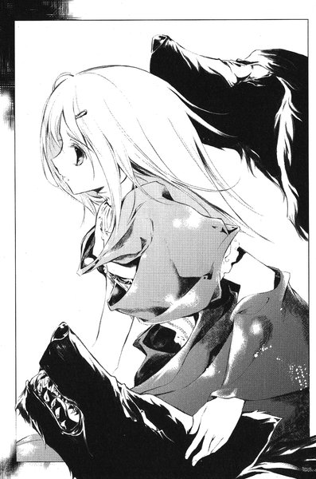
「以前にも一度お目にかかったことがありましたね」
と、葉は言った。
「今は『黒の彼方』です」
やっぱり、と裕生は思った。葉はこの怪物に自分の意識を明け渡してしまったのだ。
「......どうして」
「話は後です」
裕生の腕をつかむと、廊下に通じるドアに向かってじりじりと後ずさりを始めた。彼女は窓の方を見ていた。裕生もつられてそちらに目を向けた。
「......天内さん」
裕生は目を瞠った。いつのまにか茜が窓に背を向けて立ち上がっていた。あれだけひどい怪我をしていたのに。
「逃げますよ」
と、葉が裕生に囁いた。
「なに言ってるんだよ。天内さんも一緒に」
「あれは天内茜ではありません」
裕生ははっとした。患者衣を着た彼女の腰のあたりが、じわりと赤いもので濡れていた──彼女は立てないほどの怪我だったはずだ。そして、その背後にはいつのまにかボルガが飛翔していた。
「今は『ボルガ』に支配されています」
茜が裕生を見る。彼女の顔からは人間の表情が抜け落ちていた──カゲヌシを解放した状態で「契約者」が意識を失うと、人間の肉体の方もカゲヌシに支配されてしまう。
（ボルガは天内さんの両親を殺してる）
その背後で、新しい水の塊が形成されつつあった。しかし、さっきと違って鳥が見ているのは男ではなかった。
（......ぼくたちだ）
どうやら天内茜が気絶した今、ボルガはアブサロムの指示に従っているらしい。あの男が茜にとどめを刺さなかったのも、このことを見越していたからだろう。二匹のカゲヌシが同時に「黒の彼方」の敵に回ったのだ。
双頭の黒犬がいつのまにか裕生の傍らに立っていた──乗れ、と言っているようだった。戸惑いながらその背中にしがみついた瞬間、奔流が彼に向かって殺到した。
ぐんと周囲の景色が歪んだ気がした。「黒の彼方」がドアを破って廊下へ出たと気づくまで、時間がかかった。少し遅れて葉もその後について走っている。
短い廊下を伝って、一気に雨の降る戸外へ飛び出す。まだボルガが生み出した白い霧は完全に晴れていなかった。「黒の彼方」と葉が直角に方向を変えた瞬間、その背後を巨大な水柱が通り過ぎていった。さっと冷たい風が裕生の背中を撫で、同時に飛び散った水滴が裕生の背中を抉った。
裕生は思わずうっと声を洩らした。わずかな飛沫だけでも威力がある。直接当たっていたら骨の一本や二本は折れてしまうかもしれない。
彼を乗せた双頭の犬は、砂利を蹴り飛ばしながら霧にけむる庭を横切っていく。だらしなく小枝を伸ばした植木の間をすり抜け、錆びの浮いた黒いフェンスを飛び越えて、「黒の彼方」は教会の隣の敷地へ飛びこんだ。そこは解体作業の行われているビルだった。防音用の白いパネルを体当たりで破り、半ば崩れた窓枠からビルの中へ飛び込んだ。
気がつくと裕生はむき出しのコンクリートの空間にいた。内壁はすべて取り外され、ところどころに四角い柱が並んでいるのが見えるだけだった。「黒の彼方」は廃材のかけらが散らばった床の上で停止する。慌てて裕生は背中から滑り降りた。
「カゲヌシは人間の本体を察知することはできない。ここで分かれます」
いつのまにか葉が隣に立っている。「黒の彼方」と同じ速さで走ったというのに、息も切らせていなかった。
今度は彼女が裕生の手を引いて、コンクリートの柱をすり抜けていった。「黒の彼方」は一階に残っている。他のカゲヌシを迎え撃つつもりなのだ。裕生たちは建物の隅にある階段を駆け上がる。
「どうしてぼくを助けるんだよ」
裕生は彼女の背中に向かって問いかける。今、雛咲葉の体を支配しているのは「黒の彼方」のはずだ。カゲヌシが人間の命を尊重するとは思えない。
しかし、葉は答えなかった。質問が聞こえなかったかのように、階段を走りながら困惑した表情を見せる。そして、
「......なるほど」
と、呟いた。
９
（......なるほど）
双頭の黒犬は内心呟いた。「黒の彼方」は壁の一隅を見つめている。壁と床がじわじわと金属に変化しつつあった──アブサロムの仕業だ。
床と外壁を中心に金属化は進んでいる。そこに触れれば、カゲヌシといえども金属と化してしまう。まず、こちらを逃がさないことと、敏捷さの増した「黒の彼方」の行動範囲を狭めることが目的なのだ。
「黒の彼方」の三つの頭のうち、一つが失われ、もう一つが眠りに落ちたまま目覚めない。失われた頭は主に感覚情報を、眠っている頭は記憶をつかさどっている。
以前の記憶を不完全なかたちでしか呼び出せないため、自分がどうしてそのような状態に陥ったのかも、はっきりとは分からなかった。あのアブサロムにも前にいた世界で会ったことがあるのかどうか、判然としなかった。敵がこちらの手の内をどの程度知っているかが分からない。戦う上でこれほど厄介なことはなかった。
今、思考しているのは唯一無事な右側の首であり、そこが雛咲葉の肉体も含めた司令塔だった。いずれにせよ、手元にある要素で戦っていくしか方法はなかった。
（そろそろか）
床は半分ほど金属化を終えている。それだけ「黒の彼方」が着地可能な場所も減っていた。だとすれば、次の一手も予想がつく。
反対側の壁の近くに、ずんぐりとした体の鳥のシルエットが浮かんでいる──ボルガだった。そして、その周囲から白い霧が急速に広がりつつあった。
「......視界を奪うつもりか」
と、葉──正確には、葉の口を借りた「黒の彼方」が言った。
「え？」
裕生は思わず聞き返した。二人は三階まで上がってきていた。ちょうどビルの真ん中あたりの階だった。
「ここで止まりましょう」
下のフロアと同じように、ここにもほとんど視界を遮るものはなかった。ただ、何箇所か天井に穴が開いている。これより上の階ではすでに解体作業が進んでいるのだろう。彼女はつかつかとフロアの中央に行って立ち止まった。
「......どうしてそんなに速く走れるんだよ。雛咲の体だろ」
息を切らせながら、彼はその後についていった。
「神経系の情報処理を効率的に行っているだけです。この肉体も私の支配下にありますから」
裕生は彼女の隣に立って、ぐるりと周囲を見回す。どこからも見える場所よりも、どこかの物陰の方がいいのではないかと思ったが、それを口にする前に彼女が振り向いて言った。
「ここなら、下から上がってきた相手を見逃すことはありません。それに、どちらにせよこの建物では隠れる場所はない。それと、もう一つ」
彼女は外壁を指差した。じわじわと染みが広がるように変色していた。「アブサロム」の力だった。少しずつ壁そのものが金属の塊になりつつあった。
「あれは......」
「この建物全体を金属化しているのでしょう。まず外壁を覆って、こちらの出入りをしにくくするつもりですね」
裕生はぞっとした。それだけ広範囲を金属化できるのだとしたら、建物の中にいるのは危険だ。
「......外に出た方が」
「敵が狙っているのはそれでしょう。おそらく、建物の外で待ち構えているはずです。それに、下の階ではボルガがわたしを足止めしています。出て行ったところで、『アブサロム』とは戦えません」
冷静、というよりは、まったく感情を感じさせない声で彼女は言った。普段の葉と似ているようで全く違っている。葉は無愛想だが、感情がないのではなく隠しているだけだ。
「ここがこの建物の中心です。外壁から金属化しているということは、ここは最後まで無事、ということになります。全体を金属化しているせいで、しばらくは時間がかかります。今は動かないのが上策です」
裕生は下へ通じる階段から白いもやが立ち上ってくることに気づいた。それはゆっくりと三階のフロアをも覆っていく。
「ひょっとして、下の階でボルガは霧を出してる？」
おそるおそる裕生は尋ねた。
「ええ」
と、葉の口が動いた。かすかにその眉が苦痛に歪む。
「視界が奪われました」
さながら白い闇の中に「黒の彼方」はいた。
ボルガの嘴が通りすぎざま、黒犬の肩をわずかに抉っていく。かすり傷で済んだのは、視覚ではなく聴覚で近づいてくる方向を察していたからだ。司令塔を統合した効果で、昨日戦った時よりは聴覚が鋭敏になっている。耳に入る音自体の大きさには変化はないが、より細かい音の違いを瞬時に判別できるようになっていた。
羽ばたきの音が再び近づいてくる。飛びついた「黒の彼方」は、敵の腹部を食いちぎった。しかし、着地した右の前足の先端にひやりとした冷たさを感じた。
次の瞬間、黒犬は近くの柱に向かって飛んだ。金属化した床に触れた足の感覚が消えている。もう一瞬、長く床に接していたら、一体化していたはずだ。
柱や壁の位置関係はすでに完全に把握している。「黒の彼方」は柱に爪を出して取りつこうとする。
（......くっ）
鉄に変えられた右脚をうまく使いこなすことができない。仕方なく残る三本の脚の爪をコンクリートに食い込ませて、自分の体を支えた。
空を飛ぶカゲヌシに対する怒りが膨らんでくる。屈辱によるものではなく、食欲から来る苛立ちに近い。人間の言うところの「感情」をほとんど持たないこのカゲヌシの、数少ない心理的な反応だった。
しかし、すでに相手の速さと間合いはだいたい記憶している。次の攻撃を待ち、今度こそ一撃のもとに倒す──すると、今までとは全く別のものが迫ってくるのが聞こえた。
危険を察知した「黒の彼方」はまだ金属化していないと思われる床へと飛んだ。その瞬間、鈍い振動とともに今までとりついていた柱がびしりと音を立てた。
（......水か）
例の水流による攻撃に思えたが、ボルガの操る水だけでコンクリートの柱にひびが入るとは思えなかった──おそらく水の力を使って、鉄の破片を撃ち出しているのだろう。繰り返されれば、柱ごと破壊されかねない。
くわえて、着地できる床の範囲も狭くなってきていた。あまり時間はなかった。
眠っている首には特殊能力がある。特殊な周波数の振動によって相手にダメージを与えることが可能だったが、使える回数には限度があった。この状態では、相手の位置が分からない。このカゲヌシを確実に捕食したいという抑えがたい欲求があったが、だいたいの方向に見当をつけて攻撃をする以外に方法はないかもしれない。
その時、再び「黒の彼方」を水流が襲う。今度はフロアの角に向かって大きく飛んだ。
ボルガは静かに羽ばたきながらゆっくりと移動していった。ボルガはアブサロムの意志でこの「同族食い」と戦っている。黒い犬の居場所は、カゲヌシの発する「サイン」によって見えなくとも正確に分かる──敵は今、フロアの角に近い柱に取りついている。
今、ボルガの腹には抉り取られた傷がある。この鳥は知能こそ発達していないものの、危険を察する能力には優れている。この相手には接近戦を挑んではならない、ということは分かっていた。
鳥は「黒の彼方」が真横から見える位置に音もなく静止した。相手には気づかれていないはずだった。空中に巨大な水球が生まれ始めた。ボルガは既に勝利を確信していた。フロアの角では退路は制限されている。こちらの攻撃が広範囲に及べば、逃げることは不可能だ。
ボルガはさっき放ったものに倍する巨大な水球を背後に育てていった。天井から床までに達するような球体にまで育った時、不意にボルガの耳はかすかな空気振動をとらえた。なんのダメージも与えない、ごくわずかな音波にすぎなかった──「黒の彼方」は攻撃する方向を間違えたに違いなかった。
水球を発射させようと身構えた瞬間、「黒の彼方」が柱から消えた。未だに無事な柱や床を次々と蹴りながら移動する。今までで最も素早い動きだった。
そして、正確にこちらに迫ってきていた。ボルガはようやく気づいた。今の音波は攻撃ではない。音の反射によってこちらの居場所を探るためのものだったのだ。
身を翻そうとしたボルガの逃げ道を、背後の水の塊が塞いだ。白い霧の向こうから、唐突に大きく開いた獣の顎があらわれた。
葉の目が突然開かれた。
「......倒しました」
裕生は思わずあたりを見回した。霧のせいでほとんど階段は見えなくなっている。
「あの鳥の居場所を探り当てました」
と、葉は言った。どうやら下の階でボルガを倒した、ということらしい。
突然、葉の表情が虚ろな、恍惚としたものに変わった。一瞬唖然とした裕生だったが、その意味を悟って思わず目を背けた。同族食いである「黒の彼方」が敵を倒したとしたら、次にすることは一つだけだ。おそらくは普段の葉が他人に見せたいとは望まない表情だった。
ふと、裕生の背筋に説明のつかない悪寒が走った。
フロア全体を覆っている霧。下の階や外にのみ向けられた注意──「黒の彼方」が支配する葉に、気づかれることなく近づくのはアブサロムといえども容易ではないはずだ。しかし、下の階でのボルガとの遭遇が、最初から「黒の彼方」に与えられた餌だとしたら。
飢えた獣が最も注意力を失うのは、獲物にありついた瞬間ではないだろうか。
（しまった）
と、思った瞬間、天井に開いていた穴から人影がひらりと降り立った──あの男だった。
（最初から上の階にいたんだ）
ボルガが事前にこの男をビルの上階に運んでいたのだ。
葉はまだ男に気づいていなかった。裕生は迫ってくる人影と葉の間に体を滑り込ませ、力いっぱい彼女を突き飛ばした。そして、男の体にしがみつこうとする。男はうるさそうに左腕で裕生の体を払いのけたが、彼はよろけながらも相手の二の腕を自分の両腕でしっかりと抱きこんだ。
男の左腕に接している部分が感覚を失うまで、一秒もかからなかったと思う。裕生の両腕と上半身の前半分が、服ごと重い金属と化していた。彼は突然自分の体に増した重みに耐えかねて、その場にどんと膝をついた。コンクリートの欠片がジーンズごしに膝頭に食いこむ。
鉄製の置き物と化した両腕から、男の腕がするりと抜け出す。
「えっ」
最初はなにかの見間違いだと思った。
裕生が垣間見たのは男の左の手のひらだった。焼きごてを当てたように、くっきりとそこには描かれているマークがあった。
それは六芒星だった。
10
黒い獣が下の階から駆け上がってきた。
葉の肉体を守るように「黒の彼方」が前に立った。右前足と背中と、眠っている首の一部が、まだらのように鈍いグレーに染まっている。おそらく、下の階で金属に触れてしまったに違いない。
「惜しかった。案外、人間の勘も侮れないものだね」
「黒の彼方」が身じろぎした瞬間、男は座っている裕生の髪の毛をぐっとつかむ。一歩でも動けば殺す、という宣言なのは誰の目にも明らかだった。その途端、黒犬は動きを止めた。
「人質を取ると向かってこないね」
と、男は言った。
「どうして人間を守ろうとしているんだ？『契約者』は眠っているんだろう」
それは先ほどからの裕生の疑問でもあった。葉の表情にためらいが浮かぶ。なにか答えを選んでいるような間があった。
「人間はわたしの餌ではない。人が死ぬのを見るのも、わたしは好まない」
と、「黒の彼方」は答える。裕生は首をひねる──カゲヌシと戦う時は契約者を襲おうとしているし、裕生自身も邪魔をすれば殺す、とはっきり言われたことがある。しかし確かに、裕生の知る限りで「黒の彼方」が人を殺したことはない。
「カゲヌシがそんな感情移入の能力を持つとは信じられないな」
疑わしげに男は「黒の彼方」たちを見ている。葉の顔にやれやれ、という表情が浮かんだ。
「あなたは『同族食い』の生態を知らないようだ。わたしは他のカゲヌシとは違う」
男は沈黙する。ふと、裕生は黒い犬がじっと自分の方を見ていることに気づいた。なにかを言いたげな様子に彼ははっとする。
裕生は頭を無理に上げて、自分の髪をつかんでいる男を見つめた。男の左手はおそろしく冷たかった。
「この手にあるマークが、さっき言ってた『サイン』だよな？」
裕生は今の両者の会話で確信を深めていた──いや、もっと前から気づくべきだったのだ。
「カゲヌシに取りつかれてるんじゃなくて」
と、裕生はきっぱりと言った。
「お前自身がカゲヌシなんだ」
男は裕生の頭から手を離す。そして、ようやく気づいたのか、と言いたげな顔つきをした。外見はどう見ても人間だった──形態を変化させることが可能とはいえ、人間型のカゲヌシがいるとは思ってもみなかった。
「この『サイン』を見て、彼はぼくに『アブサロム』という名前をつけたんだ。ぼくには個体認識のためのものでしかないが、彼にとっては意味があったんだ。あるいは彼の許にぼくが現れたのも、この『サイン』のせいかもしれない」
「......『彼』って誰なんだよ」
アブサロムは微笑んだだけだった。言うはずがない。裕生たちはこのアブサロムの「契約者」が東桜大学にいる、ということ以外はなにも知らない。名前も、年齢も、性別すらも分からない。今のこの外見も「契約者」とはまったく違っているのだろう。
そもそも、あの「サイン」を描いたアブサロムの「敵」の話、というのもどこまで信用していいものか分からない。すべてがこのカゲヌシの策略の一部なのかもしれなかった。
「天内さんを刺した奴が『契約者』だったんだ」
カゲヌシを遠くに置いていたからこそ、茜は契約者が近づいてくるのを察知できなかったのだ。最初から人間の協力者などいるはずもない。この殺人鬼はいかなる係累も持たないのだから。
彼は裕生の方を完全に向いて話している。なるべく自分に注意を引きつけるのが、裕生の狙いだった。彼はじりじりしながら待っていたが、双頭の犬はさっきの場所から一歩も動かなかった。
動いたのは葉の方だった。
動いた、というよりはほとんど消えたようにしか見えなかった。次の瞬間、アブサロムの背後にある柱の影から彼女が現れた。まさか葉一人がカゲヌシに襲いかかるとは思ってもみなかった。おそらくは、アブサロムも同様だったに違いない。
体重の乗った葉の蹴りが男の腰のあたりにくり出される。太ももあたりまでスカートがまくれ上がった。あ、と裕生が思った時には、アブサロムはバランスを崩してよろめいていた。葉はその隣をすり抜けて、座りこんでいる裕生の脇の下に手を差しこむ。
そして、彼の体を持ち上げながらアブサロムから離れようとする。しかし、すぐに体勢を立て直したアブサロムは、葉の右の手首をつかまえた。一瞬にして二の腕まで金属に変わる。葉は残った左手で、彼の手首に鋭い手刀を振り下ろす。アブサロムは手を離し、彼女も裕生の体から離れて、「黒の彼方」の許に走り戻った。
四者の位置関係はほとんど元に戻ったが、一つだけさっきとは違っていることがある。アブサロムの右手に触れた葉の両腕は、肘の近くまで鉄の塊と化してだらんとぶら下がっていた。
「......なぜ必死に人間を取り戻そうとする？」
その声に潜んだかすかな怒りを裕生は聞き逃さなかった。たかが人間に不覚を取ったのが腹立たしいに違いない。
「その人間はこちらにとっても大事な存在なのでね」
どういう意味だろう、と裕生は思った。さっきから、自分に手を出させまいとする発言ばかりだった。今の攻撃も奇襲としては悪くなかったが、詰めが甘すぎる。まるで、裕生が捕まっていることで動揺しているかのような──いくらなんでも、そんなはずはない。
思いに耽っていた裕生は、再びアブサロムの左手が髪の毛をつかんだことにも大して驚かなかった。さっきより強い力ではあったが、それがなにを意味しているかは深く考えなかったのだ。かすかな痛みとともに視覚と聴覚が失われて、初めてことの重大さに気づいた。つかまれていたはずの髪の毛の感覚もない。まるで自分の首から上が切り落とされたような気がした。
自分の口が悲鳴を上げたのは分かるが、それを聴くことはできなかった。そしてすぐに、震えていた喉もどこかへ消えた。全身からゆっくりと触覚が失われていき、最後に両足が接していたはずの床もなくなった。裕生は光も音も匂いもない空間にぽっかりと浮かんでいるだけだった。
人質の全身はくまなく金属に変わった。
「もう一度おかしな動きを見せたら、この人間は本当に死ぬ」
「......では、死んではいないのか」
と、「黒の彼方」の契約者が言った。
「心臓は動いている。すぐに止めることも可能だがな」
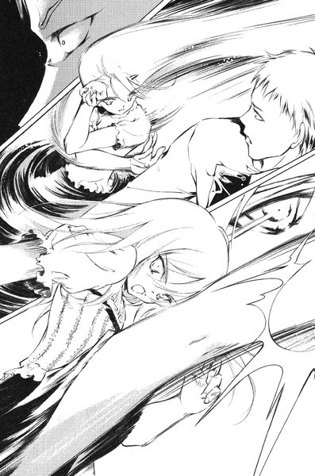
「それは良かった」
契約者の顔に、酷薄な笑みが浮かんだ。奇妙な反応に思えたが、アブサロムはそれを無視した。どうやら、このカゲヌシはこの人間を死なせたくはないらしい。これからは伝説の『黒の彼方』を自分の自由に動かすことができる。
「さて、改めて話をしようか。わたしを追っているものが」
「私はその人間に危害を加えることができない」
葉の口から流れる「黒の彼方」の言葉が、アブサロムの声を遮った。今までとは微妙に口調が違っている。契約者を背後に残したまま、黒犬はじりじりと前に進んでくる。
「だから、助けるそぶりをしなければならなかった。そこの人間の『材質』を変えてもらうために」
「......材質？」
アブサロムは思わず聞き返した。しかし、それに対する返事はなかった。
「あなたはわたしの能力を知らなかったようだな」
憐れむような声の響きが気に入らなかった。しかし、アブサロムには相手の意図が分からなかった。
「わたしの武器は『振動』だ。カゲヌシの能力がそうであるように、この世界の物理法則に正確に則った現象ではない。しかし、わたしの能力で空気を振動させることもできるし、電磁放射に近い現象によって、生体の内部にある水分子を振動させることができる......ただし、鉄やコンクリートはその波を遮断するが」
突然、部屋の隅にいた契約者の少女が消えた。階段から下の階に飛び降りたのだ。次の瞬間、「黒の彼方」の眠っていた方の頭が目覚めた。そして、大きく口を開ける。
音は聞こえなかった。唐突にアブサロムの体温が耐え難いほど上昇し、全身の細胞がぐつぐつと泡立つのを感じた。五感が閉ざされ、力を失って倒れかかる。しかし、アブサロムは「黒の彼方」の言葉を忘れてはいなかった。
金属の体なら、その波を遮断できる──最後の力を振り絞って、体の前面を金属の鎧で覆っていく。それはたちまち効果を発揮し、体内温度が下がりはじめる。
しかし次の瞬間、「黒の彼方」がアブサロムに向かって突進してきた。
アブサロムは避けようとする。しかし、ただでさえ熱によって自由を失い、関節まで金属化した体はぴくりとも動かなかった。
おのれのものか、それとも敵のものか、どこかから雄叫びが聞こえる。最後にアブサロムが見たものは、自分の頭部に迫るむき出しの獣の牙だった。
第五章「サイン」
１
いつのまにか裕生は天井に開いた穴を見ている。どこかから硬いものをぼきんと折る音が聞こえた。背中には床があり、シャツ越しに尖ったコンクリートの破片が当たって痛かった。
（......あ）
ばらばらにほどけていた五感が、不意に一つの思考にびしりとまとまった。自分はカゲヌシにつかまって、全身を金属に変えられていた。慌てて両手で体中に触れたが、どこにも異変はなかった。元通りの生身の体だった。
ぼきん、とまた鈍い音が聞こえた。
裕生は首を動かして、その音の方を見る。
そこにあったのは首のない人間の胴体だった。「黒の彼方」が右腕を食いちぎったところだった。
「うわっ！」
裕生はがばと起き上がって後ずさりをする。しかし、よく見ればその胴体の傷口からは、黒い体液がかすかに流れている──人間ではなかった。「アブサロム」の死体だ。
（......勝ったんだ）
人間を食っているのではないと分かっていても、見るに耐えない光景だった。胃の奥から吐き気がせり上がる。裕生は口を押さえてその場にうずくまった。
「あなたには礼を言わなければなりません」
いつのまにか、すぐそばに葉が立っていた。唇に笑みを貼りつけたまま、裕生を見下ろしている。しかし、目は笑っていなかった。
「今日だけで二体のカゲヌシを倒すことができました」
別にこのカゲヌシに餌をやるつもりだったわけではない。あくまで葉を助けるため、葉が助けようとしているカゲヌシに取りつかれている人間を助けるためだった。そう言おうとした時、「黒の彼方」の下でアブサロムの死体がぴくりと動いた。裕生は文字通り飛び上がりそうになった。
「......生きてる？」
「司令塔が失われていますからそう長くは保ちませんが、しばらくは活動しています。カゲヌシの細胞は人間などと違って、もともと独立性と汎用性が高い。だからこそ形態が変化しても生きられる」
「黒の彼方」は死体を口の中に入れてはいるが、よく見ると咀嚼はしていない。口の中に押しこまれるたびに、全身に波のような震えが広がるだけだった。多分、動物のような内臓があるわけではないのだろう。そういえば、ヒトリムシと戦った時にも、相手の体を全身の毛を使って取りこんでいた。
アブサロムの方も、体はバラバラの状態でも血液はほとんど流れていない。こちらの世界の生き物のように、心臓を使って血液を循環させているわけではないのだ。
「後であの天内茜に、鳥を出すよう言ってもらえますか。彼女の影の中にボルガが戻ってしまいましたので」
「......戻った？」
「わたしはボルガに致命傷を与えましたが、取りこむ暇まではなかった。カゲヌシが意識を失った場合、時間が経つと自動的に『契約者』の影に戻ってしまいますからね」
葉の口を借りた「黒の彼方」は得々と説明している。裕生は不快感を隠せなかった。自分が協力することが、まるで当然のような態度だった。
（......でも、さっきはぼくを助けた）
自分は人間を殺さない、とさっきは言っていた。どこまで信じていい話なのだろう。
「アブサロムの本体は？」
と、裕生は言った。天内茜がボルガと一緒にいたのは、自分の家族の敵を討つためだ。カゲヌシを倒したところで、本質的な解決にはなっていない。
答えはなかった。しばらく間が開いてから、葉が言った。
「......後で探しましょう。わたしが引き受けます」
「黒の彼方」は顔も上げずにカゲヌシを食っている。残っているのはわずかな胴体と、例の左腕の部分だけだった。一気に食べてしまおうとしているのは、おそらく放っておけば「契約者」の許に戻ってしまうからだろう。
「どうしてぼくを助けたんだ？」
「もともとわたしは人間を殺すのは好まない。さっきもそうこのカゲヌシに説明したはずですが？」
「......雛咲は？」
「ご心配なく。しばらくすれば、彼女は目を覚まします。そういう契約になっていますから」
と、打てば響くように葉の方が答える。裕生は思わずはっとした。
「契約？」
「そうです。彼女はわたしと新しい契約を結びました。完全にわたしに体を明け渡すかわりに、時間が経つと目覚めるようになっています。その代わりに、わたしは今持っている力を全て出して戦えるというわけです」
裕生は葉が捕らえられている時のことを思い出した。あの時、確かに「契約」という言葉を呟いていた。おそらく、「人質になる」という裕生の言葉で決心したのだろう。
（ぼくのためだったんだ）
裕生の胸が締めつけられるようだった。自分が自分でなくなることを、誰よりも恐れているのは葉のはずだ。それなのに、条件つきとはいえ自分の体を明け渡したのだ。
（わたしのこと、もう『雛咲』って呼ばないで）
葉の声がふと蘇る──あの言葉には大事な意味があったのだ。
「......嘘だろ」
裕生が言うと、ぴたりと黒い犬が動きを止めた。
「どういうことですか？」
苛立ちを隠せない声が、彼女の口から洩れる。「食事」に気を取られて、喋りすぎたことに気づいたのかもしれない。
「お前はカゲヌシを食い終わったら、ここから逃げるつもりなんだ」
「......」
「『アブサロム』にああ言ったのは、自分のことを知っているか、確かめただけだ。案の定、そいつはお前のことを『同族食い』ってこと以外は、なにも知らなかった」
あれは「アブサロム」だけではなく、裕生に向けた嘘でもあったのだろう。彼を油断させるための言葉に違いなかった。
「お前はぼくや雛咲を何度も脅してる。人間の命を自分の意志で守ったりしない」
「......でも、わたしはあなたを助けましたよ」
裕生は首を振った。
「それはお前の意志じゃないんだ。もし、お前に体を明け渡したんだったら、雛咲が『時間』なんて条件をつけるはずがない。そうなったら、お前は平気で人間を殺す」
彼が一歩前に踏み出すと、気圧されたように「黒の彼方」が下がった。
「だから、雛咲は別の条件をつけたはずだ。雛咲はカゲヌシに取りつかれた人間を助けるつもりだって言ってた。だから、新しい条件は──」
裕生は深く息を吸った。
「『人間を助けること』」
相手は黙りこんだ。これ以上の否定は無駄だと悟ったのか、あるいは自分に有利な状況を生み出すような嘘を考えているのかもしれない。
「お前は雛咲葉と契約を結び直したかわりに、人間を殺せなくなった。だからお前は仕方なくぼくを助けた。これからも人間を助けざるを得ない。そして雛咲は」
不意に彼は口をつぐんだ。そういえば、その呼び名はもう使わないと彼女に約束したばかりだった。
「......葉は一度お前を呼び出したら、目を覚まさない。ぼくが名前を呼ばない限り」
彼女は一人ではなくなったと言った。あれは裕生に向けた言葉でもあった気がする──一人にしないでほしい、と。
突然、葉がくるりと背中を向けた。この場から逃げ出すつもりなのだ。それは裕生も予想していた。契約を覆すことなく、自由を得るにはそれしか方法がない。
しかし、下への階段に行き着く前に、裕生は彼女に向かって叫んだ。
「葉！」
彼女の足がぴたりと止まった──。
裕生はゆっくりと彼女に近づいていった。これが自分の役割なのだと彼は思った。
決して彼女のそばから離れないこと。彼女の名前を呼ぶこと。
２
東桜大学の図書館は閑散としていた。
貸し出しカウンターの奥で、中年の司書があくびをかみ殺している。すでに午後の三時近くになっていたが、今日の利用者は実質上のゼロだった。さっきまで学内に警察が入っており、授業が行われていなかったせいである。
昨日、構内で白いガスが発生する騒ぎがあり、その現場検証がさっきまで行われていたからだ。ガスの正体は単なる水蒸気で、校舎の屋上にあった給水タンクに原因があるらしいのだが、詳しいことはまだ分かっていないという。
不意にカウンターの向こうに誰かが立った。司書は相手が誰であるか気づいて目を瞠った。
「あれ？」
メタルフレームの眼鏡をかけた青年が立っている。週五日で働いているアルバイトだった。背は高く目鼻立ちも整っているが、決して目立つタイプではない。服も髪もいたって地味だった。近頃では珍しく礼儀正しい若者で、司書は好感を持っている。
「今日は五時からだったよね？」
時計を見ながら司書は言った。蔵書の移動をするので、臨時に出勤してもらうことになっていたが、少し早すぎる。
申し訳ないんですが、と青年は少し疲れた声で言った。
「......実は家族が事故で他界しまして。これから、実家に帰ることになりました」
司書は慌ててカウンターの前から腰を上げた。
「そうですか......それはご愁傷さまです」
と、言いながら、彼の家族についてほとんど何も知らないことに気づいた。父親が牧師だったという話を聞いた気もするが、思い違いかもしれない。はっきりと思い出せなかった。家族、というのが一家全員なのか、そのうちの一人なのかも聞きかねた。
「ご実家は確か......」
「北海道です」
彼は戸惑った。これも初耳だった気がする。毎日顔を合わせているし、よく話もしているはずなのに。そういえば、彼が今どこに住んでいるかも本人から聞いた記憶がない。青年が自分について話すことを巧みに避けていた、とはもちろん考えなかった。彼の話を聞かず、自分の話ばかりしていたのかもしれないと恥じた。
「そういう事情だったら、電話の連絡でもよかったのに」
「......いえ、ちょっと忘れ物があったもので。申し訳ないですが、しばらく欠勤させてください」
彼はカウンターの反対側にある「関係者以外立ち入り禁止」のプレートのかかった部屋へ向かった。職員用のロッカーがおいてある控え室だった。少し足元がふらついている。ショックを受けているせいだろうと司書は思った。
「蔵前君」
と、司書は青年に呼びかけた。彼はゆっくりと振り向く。
「大丈夫かい？ 具合が悪そうだけど」
彼は弱々しく微笑んだ。
「いいえ。ありがとうございます」
さっきまで降っていた雨は止んでいた。図書館を出た蔵前は、足早に裏門へ向かって歩き出した。彼は大きなショルダーバッグを抱えている。中には衣類と細々とした生活道具が入っている。彼は東京ではどこにも住居を持たず、空き家を転々としていた。万が一の場合に逃亡しやすくするためでもあったが、それ以上に「住む」という営みに関心が持てなかったからだ。持ち物はあの図書館の職員用のロッカールームに置いている。「サイン」が彼の住まいではなくこの大学に描かれたのは、そもそも彼の住まいがなかったせいだろう。
（どうして家族が死んだ、と言ったんだろう）
言い訳はなんでもよかったはずだ。病気で休むと言った方が、注意を引かなかったかもしれない。ここを永遠に離れるつもりであることには変わりないが。
彼と一体化していた「アブサロム」はあの廃ビルで消失した。呼びかけにも答えない。気配も感じられない。
考えてみれば、あのカゲヌシと融合していたのは二ヶ月の間だけだった。得がたい体験だったと言える。父親を除けば、他者とこれほど長く一緒にすごしたことはない。
（元に戻るだけだ）
彼が姿を隠していたのは、契約者という弱点を突かれるのを防ぐためであり、それ以上の意味はない。自分たちが生き延びる可能性を高めるための合理的な判断、だったはずだ──。
しかし、それでもどこかで動揺を抑えきれない自分がいる。二度と取り戻せないものを惜しむ苦い気持ち。
ふと、彼はバッグのサイドポケットの角ばったふくらみに触れた。そこには父親の遺した聖書が入っている。
（......アブサロムよ）
彼は心の中で呟いていた。
（わたしがお前に代わって死ねばよかった）
それがもう一人の分身への、偽らざる彼の感情だった。
構内を通り抜けるには中庭が一番の近道だった。蔵前は校舎と校舎をつなぐ渡り廊下へ近づいていった。中庭へ入るには、その下をくぐらなければならない。
不意に中庭から二つの人影が現れた。十五、六歳の少年と少女で、どちらも服は泥だらけだった。蔵前はかすかに眉をしかめる。
藤牧裕生と雛咲葉だった。
二人は小走りにすれ違っていった。蔵前には目もくれなかったし、立ち止まろうともしなかった。こちらの顔が知られるはずはない、と蔵前は思う。「アブサロム」が死んだ今、彼とカゲヌシを結びつけるものはなにもない。他に手がかりもなく、仕方なくまたこの大学へやって来ただけだろう。
蔵前は中庭に足を踏み入れる。ベンチや植木が配置され、学生たちの憩いの場所になっている。その中央にはひときわ大きな銀杏の木があり、鉄のベンチが木の幹を丸く囲んでいる。
銀杏の木へと近づいていった彼は、根元にあるベンチに十七、八の長い髪の少女が座っていることに気づいた。コンビニで売られているようなぺらぺらの安いレインコートを羽織っているが、その下は病院の患者衣だった。痛みをこらえるように下腹のあたりを押さえて、首を前に垂らしている。
（......天内茜）
彼は驚かなかった。裕生たちがいるのだから、彼女が近くにいてもなんの不思議もない。
本当は今すぐこの娘を殺してしまいたかった。彼女にファックスを送ったのは、東桜大学におびき寄せるためだった。しかし二つの邪魔が入ってしまった──あの「同族食い」を引き連れた少女と、カゲヌシの「サイン」を描いて回る者。それらが現れなければ、天内茜は今頃この世にいなかっただろう。
カゲヌシを失った今、死体の残るかたちで天内茜を殺すのは得策ではない。いつ裕生たちが戻ってくるとも限らない。
（いつかまた会いに来よう）
心の中だけでそう呼びかけて、彼は彼女の前を通りすぎようとした。
「無視することないんじゃないの」
と、不意に茜が言った。思わず立ち止まって振り返る。さすがに動揺を隠すのに努力を必要とした。彼女はいつのまにか顔を上げていた。
「はい？」
「あんたがアブサロムとの契約者でしょ」
「なんの話ですか？」
「隠しても分かるよ。あたしには」
知っているふりをしているわけではないらしい。確信があるようだった。
蔵前はここから逃げ出すことを考える。この重傷では、茜は追って来られないはずだ──。
その瞬間、彼は背後になにかがいることに気づいた。地面に鳥らしきものの影が長く伸びている。しかし、その翼は半分折れ曲がり、胴体も抉り取られたようにぼこりとへこんでいた。重傷を負ったボルガだった。
「ぼくを殺すつもりか」
「そっちこそあたしを殺すつもりだったんでしょ。お互いさまだよ。あんたが中庭に来るのが分かったから、裕生ちゃんたちにはウソついてここからいなくなってもらったの。止められると困るからさ」
「......どうしてぼくだと分かったんだ？」
「『アブサロム』を呼んでみたら？」
と、茜が言った。
蔵前はかすかに頬を引きつらせる。あの黒犬が食い殺したはずだ。
「呼べば分かるよ」
彼はしばらく茜の顔を見つめていたが、やがて低い声で呟いた。
「......『アブサロム』」
アスファルトに長く伸びた蔵前の影が揺れる。突然、にゅっと誰かの手が現れた。まるで救いを求めるように空に向かって伸びて、ごろりと地面に転がった。アブサロムの左腕だった。手のひらには六芒星のマークが描かれている。
「左手を食い残しておいたのか」
と、蔵前は言った。
「この左腕がぼくの影に戻るのを待って、『サイン』の発する気配を追ってきた。そういうことだな」
自分の声がかすかに震えているのが分かる。胸がちりちりと焦げるように痛む──アブサロム。ぼくの分身。それを殺した者たち。
「死ぬ前になにか言い残すことはない？」
ボルガの嘴が背後でかちりと鳴る。初めて蔵前が迎える生命の危機だった。殺される側はこのような状況に置かれるのかと、他人事のように彼は思った。ふと、脳裏に十代の頃のあの夏の日がよみがえった。初めて人を殺しかけた日。あれはもう十年も前のことだ。
「ぼくに見覚えはないか？」
「ないよ。あたしが好きじゃないタイプだってことは分かるけどね。背が高くて、メガネかけてて。あたしのパパによく似てるよ」
「君は父親が嫌いなのか？」
「余計なお世話だよ。あんたに関係ない」
少し茜の声が頼りなくなった。思わず蔵前は微笑んだ。彼女と両親との結びつきが弱かったのは、そういう事情があったのだ。
「多分、それは違うよ。君は父親が嫌いなんじゃない。ぼくに似ていたから、父親を遠ざけるようになったんだろう。無意識のうちにね」
「......え？」
彼女の瞳に訝しげな色がある。澄んだ瞳だった。昔と何も変わらない。
「十年前に住んでいた町のことを憶えているか？自分の家の隣に教会があったことは？君はあの頃、誰に一番なついていたのか憶えていないのか？」
茜の表情が凍りついた。体が小刻みに震え始める。
「君はあの日の記憶を失ったと聞いたよ。ぼくが殺そうとした人間で、殺しそこねたのは君だけだ。この十年、ぼくはずっと君のことを探してきた」
天内茜は彼にとって特別な存在だった。今まで必要を感じたことはなかったが、自分をここまで追いつめた彼女なら相応しいだろう。彼は口を開いた。
「ぼくの名前は蔵前司」
殺そうとした相手に自ら名乗るのは、これが初めてだった。
「蔵前......司？」
口の中で彼女は呟いた。彼の名前が彼女の記憶を揺さぶっているらしい。長い沈黙の後で、彼女はぽつりと呟いた。
「......司おにいちゃん」
「そう。久しぶりだね」
蔵前は微笑んだ。こうして顔を合わせるのは十年ぶりだった。茜は微動だにしない。衝撃のあまり気を失いかけているらしかった。もう、ボルガを動かす余裕などないだろう。彼の言葉が耳に入っているかどうかも怪しかった。
「君たちはぼくの分身を奪った。いつか必ず、その報いを受けてもらう」
単なる憎しみとも異なる、奇妙に充実した殺意が彼の体に満ちていた。茜たちは今まで彼が殺してきたような「獲物」ではなく、自分と対等な「敵」だった。全力で倒すべき敵を得た蔵前は、もはや孤独ではなかった。彼は初めて生きる目的を持った──それは半身を奪った者に対する復讐だった。
「まだ誰にも見つかっていないカゲヌシの卵があるはずだ。ぼくは新しいアブサロムを見つける。新しい力を得たら会いに戻ってくるよ」
突然、蔵前は走り出した。ボルガは追ってこなかった。
３
中庭に戻ってきた裕生たちは、茜から蔵前のことを聞いた。三人のほかにはあたりには誰もいない。ボルガは植えこみの中にうずくまっていた。
「......逃がしちゃった。あいつを殺すチャンスだったのに」
茜は血の気の失せた顔で呟いた。紫色の唇がかすかに震えている。もう体力の限界を超えているはずだった。
「ごめんね。ウソついて」
茜は裕生たちに「校門の近くに敵がいる」と告げて、中庭を離れさせていた。しかし、校門には誰もおらず、茜の携帯に電話しても繋がらなかった。不審に思った裕生たちが戻ってきたのだった。
「天内さんはこれからどうする？」
と、裕生は尋ねた。話を聞いた限りでは、蔵前は姿を消したに違いない。この大学に現れることはもうないだろう。
「警察に話すよ。はっきり憶えてないけど、あいつがあたしになにかしたんだったら、警察にも記録とかが残ってると思う......カゲヌシのこととか、裕生ちゃんたちのことは言わないけど」
裕生は頷いた。そのような前科があると分かれば、少なくとも警察は蔵前を探して事情を聞こうとするはずだ──そう簡単に見つかるとは思えなかったが。
問題はボルガをどうするかだった。彼女は自分の手で復讐を遂げることを望んでいるはずだ。このカゲヌシは瀕死の重傷を負っているが、「アブサロム」の左腕を持った蔵前を追うのに役に立つ。ボルガを殺すことを茜が承知するはずがない。
（でも、このままにはしておけないし）
とにかく、どうにか説得しようと裕生が思った時、茜が裕生たちの顔を見上げた。
「葉ちゃん、あのね、頼みがあるんだけど」
ちゃんづけでいきなり呼びかけられたせいか、葉の顔に微妙な戸惑いが浮かぶ。
「なんでしょうか」
「ボルガを殺して」
と、茜は言った。
「え？」
裕生と葉が同時に聞き返す。なにかの聞き違いかと裕生は思った。
「最初からあたしの復讐だったの。死ぬのはあいつ一人でいい。でも、これ以上ボルガと一緒にいようとしたら、誰かを殺さなきゃいけない。カゲヌシの傷は人間を食べないと回復しないから......あたしのパパとママを食べたみたいに」
いつのまにか、茜の目から涙が溢れかけていた。
「あいつは新しいカゲヌシを探すって言ってた。そのためにまた人も殺すと思う。もしあたしがこれ以上ボルガといたら、あいつと同じになっちゃう」
茜は生身のまま蔵前を探すつもりなのだろう。彼女にも危険は分かりきっているはずだ。しかし、復讐などしてはいけないと裕生には言えなかった。蔵前は茜のものをあまりにも多く奪いすぎている。
「ボルガ、おいで」
茜が両手を広げると、植えこみから現れたボルガがよろよろと彼女に近づいていった。彼女はしっかりとその傷ついた体に抱きつく。
「お前が悪いわけじゃないんだけど、もう一緒にいられないの」
くぐもった声で彼女は言った。おそらく理解していないに違いない。ボルガは神妙に主人の言葉に耳を傾けていた。
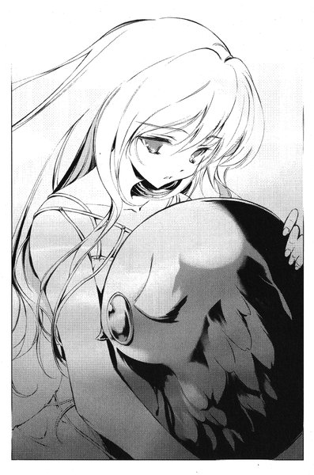
「今まで一緒にいてくれてありがとう......本当にごめんね」
茜が声を振り絞って泣き始めた。戸惑ったように、ボルガが折れ曲がった翼でぱたぱたと彼女の背中を撫でた。
「......本当に、いいんですか」
誰にともなく葉が呟いた。茜はボルガに抱きついたままでこくんと頷いた。
「早くして。お願い」
葉が深く息を吸いこんだ瞬間、裕生は彼女の手をしっかりと握った。「黒の彼方」を解放すれば、葉の意識はまた完全に眠ってしまう。離れないようにしなければならなかった。
彼女もその手を握り返してくる。一瞬、ちらりと二人の目が合い──葉が困ったように視線を逸らした。
そして、彼女は口の中でカゲヌシの名を呼んだ。
「『ねがい』によっては、カゲヌシ同士が対立することもありえます」
葉が「黒の彼方」の言葉を発している。
「カゲヌシたちは一枚岩ではありません。そこにつけ入る隙がある」
裕生は無言でその話を聞いている。すでにボルガの死体はどこにもない。「黒の彼方」によって食い尽くされていた──天内茜はベンチの上で意識を失っている。すでに電話で救急車を呼んである。誰かがここに現れる前に葉を起こしたかったが、「黒の彼方」は興に乗ったように話し続けていた。
「これからは私たちはそれを見極めていかなければなりません。特にあなたとは、今後とも協力していくべきですね。お互いのためにも」
「『黒の彼方』」
耐えきれなくなった裕生は口を開いた。
「ぼくからお前に言っておく」
「なんでしょうか」
「お前はぼくたちの敵だ。必ず、この子の体から出て行ってもらう。そして、ぼくはお前を絶対に信用しない。ぼくはお前が考えてるほど甘くない」
葉の顔に嘲笑が浮かんだ。
「人間は無力ですよ。わたしたちとは違ってね」
裕生は首を横に振って、きっぱりと言った。
「新しく契約を結んだお前は、人間であるぼくを殺せない。そして、ぼくがこの子の名前を呼べば、お前は影の中に戻ってしまう。お前への主導権はぼくにあるんだ」
長い沈黙が流れた。
「なるほど」
不意に猫撫で声が影をひそめた。
「あなたは思ったよりも手強いようです。下手な芝居は打たない方が身のためですね......ただ、間に合うと思いますか」
「え？」
「わたしたちの種族は常に『契約』を遵守しなければならない。だから、確かにわたしは人間に危害を加えることはできなくなった。しかし、それは契約者が契約者である間だけです。わたしが成長してこの娘の自我を取りこめば、契約など必要なくなります。その日は遅かれ早かれ、必ず訪れる」
裕生は足元の「黒の彼方」を見る。今日だけで二匹もの同族を食ったこのカゲヌシは、少し体が大きくなっているように見えた。
「わたしたちは雛咲葉をめぐっては敵同士であり、他のカゲヌシに対しては味方同士です。あなたは人間でありながらカゲヌシと戦い、わたしとも知恵比べを続けることになる。最も命を危険に晒しているのはあなたです。それを憶えておくことですね」
救急車のサイレンが近づいてくるのが聞こえた。もう話すべきことはなにもない──彼は彼女の名前を呼んだ。
４
あてもなく車を走らせるうちに、気がつくと海に出ていた。蔵前はほとんど落ちかけた夕日を横目に見ながら、人気のない湾岸道路を進んでいく。道路はくねった崖の上にはりついており、はるか足元から波音が聞こえる。
開いたウィンドウから潮の香りのする湿った風が車内に舞いこんできた。
今日一日でほとんどすべてのものを失ったと言っていい。天内茜は警察へ行くに違いない。カゲヌシの話をしなくとも、蔵前の十年前の事件は彼らの興味を引くはずだ。
蔵前はこのまま姿を消すつもりだった。そのことがさらに疑いを招き、おそらく近いうちに警察から追われる身になるだろう。逃亡生活を望んでいるわけではないが、果てしない取り調べや周囲の好奇の視線はさらに彼の望むところではなかった。
（カゲヌシの卵が現れる条件があるはずだ）
ステアリングを握りながら蔵前は考える。カゲヌシの卵はこの世界にまったく同時に現れているわけではない。天内茜と彼の前に現れた時間にも微妙な差があるし、あの「黒の彼方」が現れたのは「先月」だと藤牧裕生は言っていた。アブサロムとは一ヶ月のズレがある。
だとしたら、まだ現れていない卵もあるに違いない。現れた時の条件さえ分かれば、もう一度カゲヌシを呼ぶことも可能ではないだろうか。一度は呼ぶことができたのだし、彼は「契約者」の資格を備えているはずだ。
車がトンネルへ入った。黄色いランプが次々と背後へ流れていく。彼がすぐさま逃亡したのは、警察から逃れるだけではない。あの「サイン」を描いて回っている者を警戒したためでもあった。
今の蔵前はカゲヌシの能力を失った身でありながら、カゲヌシの気配を発している。彼に敵対する者にとっては、これほど追いやすい相手もいない。もうしばらく時間が経てば、アブサロムの左腕も完全に死に絶えるはずだ。それまではなるべく止まることなく逃げるつもりでいた。
さっきから道路にはほとんど他の車は見えない。ルームミラー越しに背後を見ても、車は一台も見えない。少なくとも今のところ、彼を追う者はいないようだった。
車がトンネルの外へ出る──蔵前はフロントガラスに視線を戻す。
「な......」
思わず彼は声を上げていた。フロントガラスには、いつのまにか大きな六芒星が描かれていた。
（一体、どうやって......）
目を離したのはほんの一瞬だ。他に走っている車もない。だとすれば、答えは一つだった。
追跡者はこの車に乗っているのだ。
彼は再びルームミラーを見る。いつのまにか後部座席に誰かが座っていた。黄色いレインコートを着て、フードを目深にかぶっている。顔は見えなかった。
「誰だ！」
しかし、その答えを聞くことはできなかった。
いつのまにか目の前から道路が消えていた。突然、車が前輪からがくんと傾き、天地がゆっくりと逆転しはじめる。
蔵前の車は崖下に向かって落ちていく。灰色の尖った岩礁がみるみる迫り──彼の意識もそこで途切れた。
エピローグ
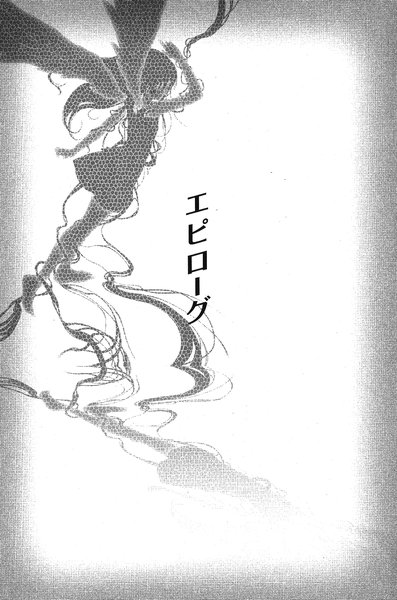
「喜嶋バー」は曜日に関係なく、夫の月命日は休業日になっている。ツネコはこの日に関しては誰とも会わず・話さずに自宅で静かに過ごすことにしているのだが、今日だけはそういうわけにいかなかった。
夕方の五時頃、全身泥だらけの裕生と葉が「喜嶋バー」に現れたのだった。どう見ても二人とも疲れきっていたが、裕生は葉だけを休ませて自分は加賀見の自宅に帰ると言い張った。ツネコは昨日と同じく包丁をカウンターに突き立てて、風呂に入って今夜は泊まっていけと命令した。
ツネコは二人を順番に風呂に入らせて、並べて敷いた来客用の布団に寝かせることにした。葉はやけにはしゃいでいて、裕生は妙に照れていたが、二人とも五分と経たないうちに眠りに落ちてしまった。
すぐにツネコは藤牧家に電話を入れた。電話には吾郎が出た。事情を話すと、恐縮した態度でひとしきり詫びと礼を述べた。それが一段落してから、吾郎は三日前の「喜嶋バー」での出来事について話し始めた。
『先日はご不快な思いをなさったことでしょう。まことに申し訳ありませんでした』
ツネコは喜嶋バーのカウンターにもたれて、相槌も打たずに黙って話を聞いている。
『私の考え方がいささか世間とズレておることは承知しています。私には私なりの考え方がありますが、それを理解しろとは申しませんし、息子たちにも言ったことはありません』
ツネコは受話器の向こうの声になおも耳を傾けている。
『もともと今度の話は、うちの息子たちや姪御さんの間で出た話です。もちろん私が責任を負うつもりです。私を信用なさらなくとも結構ですが、できればうちの息子たちと姪御さんを信じていただけたらと思います。息子たちのことは私が保証しますし、あなたの姪御さんもすばらしいお嬢さんです』
彼女はちらりと天井を見上げる。真上の部屋には疲れきった「すばらしいお嬢さん」と「藤牧吾郎の保証する息子」が熟睡しているはずだった。
『明日、朝一番でそちらに伺いますので、申し訳ありませんが今夜のところは息子をよろしくお願いします』
分かりました、と言ってツネコは電話を切った。切る前に、先日の平手打ちについて一言謝っておいた。
藤牧雄一が店に現れたのは、電話を切ってから三十分ばかり後だった。二階が来客二人に占領されているせいもあって、ツネコは一階のカウンターの前でぼんやりしていた。
「なんか昨日、俺の携帯に留守電が入ってたんスけど、今日まで気がつかなかったんで。うちの弟がこちらに伺ったんスよね？」
と、雄一は言った。それでわざわざこの店まで挨拶に来たらしい。
ツネコは、葉たちはなにしに来たの、と尋ねた。
「いやー、よく分かんねんですよ。俺も昨日会ったときは大して気にしてなかったんだけど、後から考えるとなんか大変なコトになってんじゃねえかって気もちょっとするんスけどね」
心配じゃないの、とツネコは尋ねると、雄一はきっぱりと首を横に振った。
「いや、あの二人がやってるコトなら、大丈夫じゃないスか」
ツネコは黙っていた。
「まあ、うちは俺と親父はダメダメっスけど、裕生のことは保障しますよ。もちろん葉もスゲーいい子だし。俺らは信用しなくてもいいスけど、あの二人のことは信じてやってもらえると嬉しいんスけど」
＊
すでに深夜近くになっている。ツネコは相変わらず「喜嶋バー」のカウンターで考え事をしていた。そして、突然ぽつりと呟いた。
「......親子三人、揃いも揃って似たようなこと言って」
ツネコが暗がりの中で一人で苦笑いを浮かべていると、
「あの」
不意に声をかけられて、飛び上がりそうになった。いつのまにか階段を降りてきた裕生が、店の中を覗きこんでいる。
「どうかしたの？」
「あの、水貰ってもいいですか」
「なんか飲みたいんだったら、そこの冷蔵庫にウーロン茶入ってるわよ」
「ありがとうございます」
そのまま、裕生の顔が引っ込もうとする。
「『人助け』はうまく行ったの？」
彼の動きがぴたりと止まった。立ったまま眠っているのかと疑いたくなるほどの沈黙の後で、裕生は呟いた
「......分かりません」
暗がりの中でどんな表情をしているのかは分からなかった。しかし、頼りないその声は、むしろ助けられるべきなのは裕生たちの方ではないかと思わせた。確かに二人の身になにか大変なことが起こっているかもしれないと思う。だからこそ、二人は身を寄せ合うように一緒にいようとしているのではないか。
「......まあ、あんたたちの気の済むようにやんなさい」
「すいません」
裕生はぺこりと頭を下げた。それから、おずおずと付け加えた。
「あの、葉にも飲むもの持っていっていいですか？喉渇いてるみたいだけど、起きるの辛そうだったから」
「好きになさい」
もう一度軽い会釈をした後で、今度こそ彼はキッチンへ姿を消した。
（名前で呼んでたかしら）
自信はないが、昨日二人が店に来た時は「葉」ではなく「雛咲」だった気がする。まあ、どちらでもいいことだが。
「ちょっといい？」
と、ツネコは声をかける。慌てたように冷蔵庫を閉める音が聞こえ、再び裕生が顔を出した。
「はい」
「あのね、あの子のことなんだけど」
＊
「......帰ってきたね」
と、裕生は疲れきった声で言った。
裕生と葉は加賀見団地の中を歩いている。平日の電車に乗って加賀見に帰ってきた──二泊三日の長い外出だった。
喜嶋バーに吾郎が迎えに来たのは今朝のことだ。裕生たちを外で待たせて、吾郎とツネコはしばらく二人で話していた。
（父さん、また変なこと言わなきゃいいけど）
裕生はそればかり気にしていたのだが、店を出た吾郎は葉に向かって「いつうちに引っ越してもいい」と言った。ツネコとはそのことを話していたらしい。葉は驚いていたが、裕生にはだいたい察しがついていた。
昨日の夜、裕生はツネコから「あの子をお願いね」と頼まれていた。
「強情だから、色々と抱えてる子なのよ。両親がいなくなった時だって、ほんとはなにかあったはずなんだけど......その話、聞いたことある？」
いいえ、と裕生は首を振った。
「最初に話すのは多分君にだと思う。口うるさくて意地悪なツネコおばさんではなくてね」
葉がどんな秘密を抱えているのか、裕生には見当もつかない。いつかそれを彼女の口から聞くことがあるのだろうか。
二人は団地の中の児童公園の脇を通って、自分たちの住む棟に辿りついた。中へ入ろうとした時、視界の端で黄色いものが動いた。裕生が振り向くと、黄色いレインコートを着た人影が角を曲がっていくところだった。彼はなんとなく空を見上げる。昨日の雨は上がって、雲の隙間から青空が見えていた。
（雨、もう止んでるのに）
立ち止まっている裕生を、葉が不思議そうに振り返って見ている。まあいいか、と彼女の後を追った。
「......午後から学校行こうか」
葉は頷いた。
「じゃあ、後で迎えに来るから」
裕生は階段を上がりかけて、ふと足を止めた。葉は自分の部屋のドアの前で立ち尽くしている。
「どうかした？」
葉は答えなかった。裕生は彼女の肩越しにドアを見る。
まだスプレーは乾いていない。かすかにシンナーの臭いが漂っている。誰かが描いたばかりなのだ。
「......サイン」
裕生は低い声で呟いた。
鉄のドアには、白いスプレーで大きく×印が描かれていた。
あとがき
「人間の記憶には弱点がある」と昔から僕は信じています。
他の人がやすやす憶えられることがなぜか自分には憶えられないことがありませんか？何回も行った場所なのに必ず道に迷ったりとか。そういうのが「記憶の弱点」です。
僕は道に迷わない人間なのですが、人の名前を憶えるのが苦手です。一、二回聞いたぐらいではまず憶えられません。そういう場合に限って、相手はきちんと僕の名前を憶えているので、気まずい笑みを浮かべながら「名前なんだっけ......ああもうちょっとで出てくる」と悩みながら会話を続けることもしばしばあります。
年代や日付を憶えるのはわりと得意で、特にその人の生年に関しては一度聞くとまず忘れません。そうすると、「相手の年齢は憶えているのに名前を思い出せない」という珍現象も。
あ、締め切りは忘れませんよ。忘れようとしても忘れられません。
だからといってわざと破ったわけでもなく。まあなんというか......努力はした......んですが。
と、いうわけで二巻です。
あとがきから読まれている方のために、前の方のページで起こったことは書きませんが、今回で物語のだいたいの方向性は固まったと考えています。
三巻は夏休みの話になる予定です。
刊行予定は真冬で......って、季節ズレまくりですね。ごめんなさい。
よろしければ三巻もお付き合いください。
作中にて、
日本聖書協会『新約聖書』マルコによる福音書九章四十七節
〃 マタイによる福音書六章二十二～二十三節
日本聖書協会『新共同訳聖書』サムエル記下十九章一節
より、それぞれ引用いたしました。
底本：「シャドウテイカー２ アブサロム」メディアワークス 電撃文庫
2004（平成16）年10月25日初版発行
入力：iW
校正：iW
2007年7月22日作成